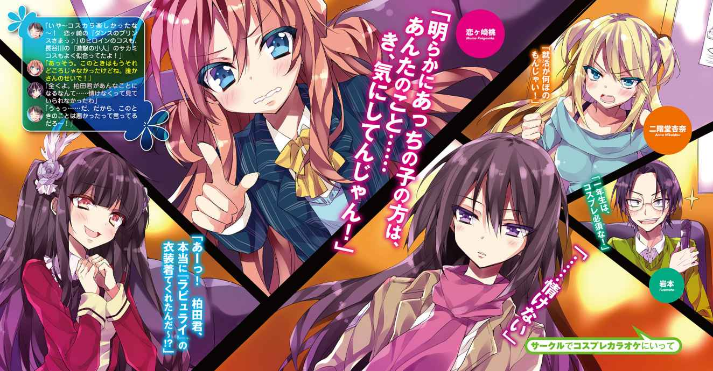
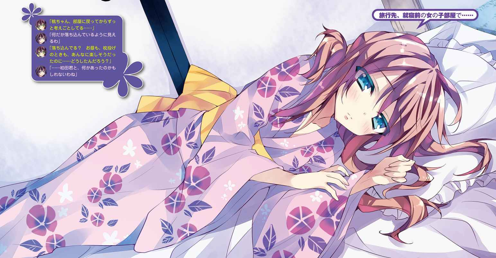
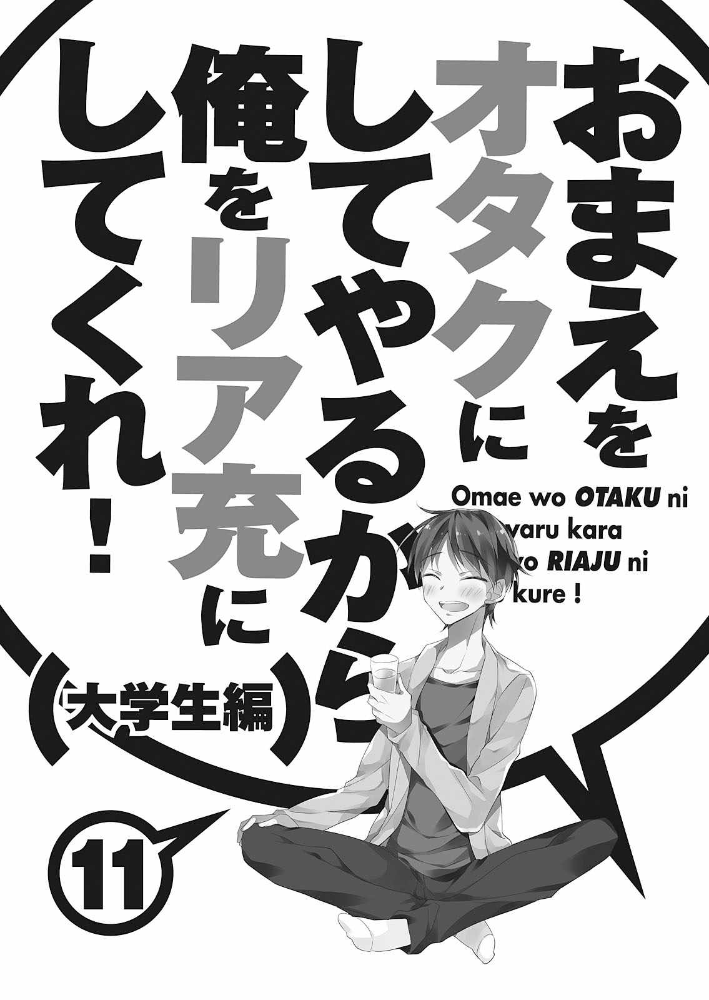
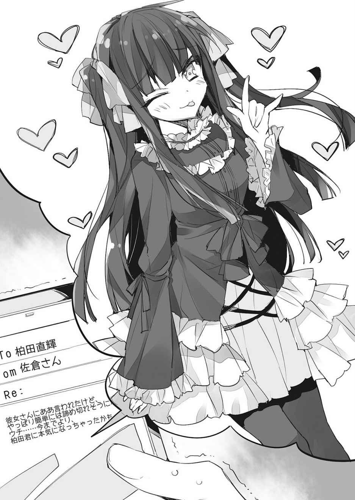

| おまえをオタクにしてやるから、俺をリア充にしてくれ！11 大学生編<おまえをオタクにしてやるから、俺をリア充にしてくれ！> (富士見ファンタジア文庫) | |
| XI ofおまえをオタクにしてやるから、俺をリア充にしてくれ！ | |
| 村上 凛 | |
| (2015) | |


おまえをオタクにしてやるから、
俺をリア充にしてくれ！ 11
大学生編
村上 凛

富士見ファンタジア文庫
本作品の全部または一部を無断で複製、転載、配信、送信したり、ホームページ上に転載することを禁止します。また、本作品の内容を無断で改変、改ざん等を行うことも禁止します。
本作品購入時にご承諾いただいた規約により、有償・無償にかかわらず本作品を第三者に譲渡することはできません。
本作品を示すサムネイルなどのイメージ画像は、再ダウンロード時に予告なく変更される場合があります。
本作品は縦書きでレイアウトされています。
また、ご覧になるリーディングシステムにより、表示の差が認められることがあります。
口絵・本文イラスト あなぽん

１
「ハ、......ハ、ハ、ハーックションッ！」
「きゃっ......ちょっ、何!? くしゃみ!? もっと受話器から離れてしてよ！ びっくりするじゃん！」
時は十二月。俺柏田直輝は、恋人と会うこともなく、友人と会うこともなく、クリスマスイブを一人ぼっちで自宅のベランダで過ごしていた。
スウェット姿のままベランダで長時間電話していたら、さすがに寒さで身体が冷えてきてしまったようだ。
「おいおい、真っ先に言う言葉がそれかよ......。もっとこう、心配とかさ......」
「ってか、今どこで電話してんの？ 部屋？」
「ベランダ」
「はあ!? バカじゃないの!? なんでこの寒い中、そんなところで......」
「なんで、ってそりゃあ......星空の下で話してると、こんなに遠く離れてても同じ空の下で話してるって気持ちになれるだろ？」
「はあ？ あんた勉強のしすぎで頭わいてんじゃないの？ 大丈夫？」
「軽い冗談だろうが！ そこまで言うかあ!?」
なんでこいつはこうなんだよ......。クリスマスなんだから、会えなくて寂しい～！ とか、会いたいよ～！ とか、もっとそういうかわいげのあること言ってくれてもいいだろ。もう一年近く会えてないっていうのにさ......。
「で、なんでベランダなんかにいるわけ？」
「ラインの通話だと部屋の中じゃ電波悪いんだよ」
「ならさっさとそう言ってよ。今携帯の方にかけ直すから」
すぐに電話が切れて、携帯の番号に直接掛かってきた。
「もしもし。いや、わざわざそこまでしなくても良かったのに」
ベランダから自室に入り、戸を閉める。おお、室内あったけえ。生き返る。
「もう部屋入った？ 受験前のこの時期に長時間ベランダにいるとか、マジでバカじゃん！ 風邪引いたらどうするつもり!?」
「あ、ああ......」
なるほどね、ちっとは心配してくれてんのか......。
「でも今日、みんなで会ってたりしないんだね。意外だったわ。去年はクラスのみんなでクリスマスパーティーとかやってたじゃん」
「そりゃあな......この時期にパーティーとかさすがにアホだろ。みんな家で勉強すんだろ。いいよなー、早々に推薦で決まった奴は」
「まーね、あたしは誰かさんみたいに無理して死ぬほど勉強しなきゃならないような身の丈に合わない大学に行こうなんて思わずに、自分が行ける範囲の大学にしたから。大学行ったら、勉強よりやりたいことあるし」
なんだよそりゃ......。俺がいい大学目指すって言ったときは、喜んでたじゃんお前。それとも何か、この一年俺が受験勉強で忙しくて会いに行けなかったことに腹立ててんのか。もしそうだとしたら、ちょっとかわいいけど。
「ちょっと、何黙ってんの？」
「ああ、いや......勉強よりやりたいことって、もしかして小説？」
「......うん。まあ、それが一番かな。まあ、普通にサークルとか、バイトとか、そういう大学生らしいこともやってみたいけどね」
今俺と電話で話しているこいつ......恋ヶ崎桃は、北海道に行ってから「小説家になりたい！」とか言い出して、本当に書き始めた。こっちにいるときに同人誌で書いてたみたいに、単に趣味で書くだけかと思いきや、大衆小説の新人賞に応募する、とか言って、三百ページもある長編恋愛小説なんかを書いたりしているのだ。
今のところいい結果は出せてないみたいだけど、落選してもへこたれずに次の作品を書いている。どうやら、本人は意外と本気でプロを目指してるみたいだ。
ちなみに、一応毎回、投稿する前に俺に「添削して欲しい」と言ってＰＣのメールで小説を送りつけてくる。何の専門家でもないというのに、素人の俺なんかが偉そうにアドバイスしてもいいものだろうか？ と思うのだが、本人が希望するので、一応俺なりの感想や助言などをメールで返信している。
それまで大して勉強なんてしていなかった俺が、いい大学に行きたいなんて思い始めたのも、ぶっちゃけこいつが頑張っている姿を見て影響されたのが原因だったりする。本人にはあんま言いたくないけどな......。
「サークルにバイトねえ......」
何だよ、せっかく女子大に行くって言うから、新たな出会いはないだろうって安心してたのに......。
「？ 何よ......。ってかあんたさあ、こんなに長々と喋ってちゃまずいでしょ。もう勉強しなさいよ勉強。受験までもう一ヶ月くらいしかないんだから」
「いいだろクリスマスイブくらい。普段めちゃくちゃ勉強してるし」
「何よ......。ははーん、そんなにあたしと話してたいってわけ？」
「......まあな」
「......っ!? ちょっ......冷静に肯定してんじゃないわよ！」
たかがこんなことで、何だか知らないが照れているようだ。
「もう、バカなこと言ってないでマジで勉強しなさいよ！ あたしと電話してて受験失敗したなんて絶対いやだし！」
彼女がそう言うので、仕方なく電話を終えることにした。
そう、俺の彼女......恋ヶ崎桃。
高校に入学してすぐに出会って、最初はお互い違う人を好きになって、互いの好きな相手と仲良くなるために、『恋ヶ崎をオタクにして、俺をリア充にしてもらう』なんて不思議な協定関係を結んでいた。
だけど、互いに協力し合って、一緒に過ごすうちに、俺たちはいつの間にか惹かれ合っていた。やっとお互いの思いが通じた頃には、恋ヶ崎が親御さんの仕事の都合で北海道へ行くことが決まっていた。
遠距離恋愛なんて無理だ、という恋ヶ崎の意思を尊重して、最初は諦めようかと思っていた。だけど、どうしてもそんなのは嫌で、将来迎えに行くからそのときは結婚してくれ、という俺の言葉に、恋ヶ崎はずっと待ってる、と応えてくれた。
あれから──一年と九ヶ月。
俺たちはなんとか『遠距離恋愛』ってやつを続けている。一年目は、恋ヶ崎が東京へ来たり、俺がバイトして貯めた金で北海道へ行ったりして、一年のうちに二回程会うことができた。
だが、受験を控えた今年一年間は、互いに忙しくて一度も会うことができなかった。それでも、毎日ラインしているし、週に二回以上は電話してるし、会えないなりに順調に過ごせているような気がする。少なくとも、俺は。
勿論、会いたいという気持ちは強い。だけど、その気持ちが強ければ強いほど、早く一人前になって恋ヶ崎を迎えに行きたい、恋ヶ崎の親御さんに認めてもらえるように、少しでもいい職業に就きたい、なんて思える。今を頑張る原動力になる。
いつか、恋ヶ崎と毎日一緒にいられるようになる日を信じて......今は、がむしゃらに頑張るしかない。
＊
「違うわ。前も教えたのに理解していないの？」
「ご、ごめんなさい......」
新年明けて、新学期の放課後の図書室。
俺は同じクラスの友人の長谷川翠に勉強を教わっていた。
「柏田君、あなた、第一志望は私と同じ『Ｈ大学』だったわよね？ 直前にそんな間違いをするようでは......」
「ううっ......まあ、『Ｈ大』はダメ元だから......」
恋ヶ崎が北海道へ行ってから、俺は塾にも通い出して、それまでよりは勉強を頑張るようになった。だが、それでもこの学年で一番頭が良い長谷川と同じ大学を受験しようとするなんて、我ながら烏滸がましいとは思う。とはいっても、長谷川はとても偏差値の高い『法学部』志望、俺はそれよりも偏差値の低い『文学部』志望、なのだが。
「ダメ元？ だめよ、そんなことでは。絶対に受かるって気持ちで頑張らないと。あと一ヶ月はあるのだから」
長谷川は、俺の数少ない女友達のうちの一人だ。才色兼備で何でもできるクールな美人だが、俺に対しては少々あたりがきつい気がする。
「少しでもいい大学へ行かないと、将来の夢に向かって頑張っている恋ヶ崎さんに顔向けできない、って前に言ってたじゃない」
「......！ ああ、うん。そうだね」
長谷川の言葉に、俺は力強く頷く。
口ではダメ元なんて言ったけど、恋ヶ崎に負けないためにも、こんな俺に勉強を教えてくれる長谷川のためにも、どうしても『Ｈ大』に合格したい。
「あれ......柏田君に翠ちゃん！」
そこへ、見慣れた顔が近付いて来た。隣のクラスの、俺と長谷川の共通の友人である、桜井小豆ちゃんだ。
「今日もお勉強？ 精が出るね～」
「あはは......」
「小豆さんは......勉強、ってわけじゃないみたいね」
「うん、わたしは借りてたラノベを返しにきて......」
「はは、早く決まった人は余裕だよね～ほんと」
「えへへへ、それほどでも～！」
小豆ちゃんは推薦で、既に大学が決まっている。将来ゲームを作る仕事がしたいという彼女は、ゲーム学科が有名な大学を受験した。
「で、柏田君は受験勉強、どうなの？」
「え、うーん......まだなんとも言えない感じかなあ......」
「だめだよそんなことじゃあ！ 今年一年、受験のために桃ちゃんに会いもせずに勉強ばっかりしてたっていうのに！ この一年間、桃ちゃんがどんな思いをしたと思って......」
「え？」
「あ、い、いや......とにかく、桃ちゃんのためにも絶対受からなきゃだめだからね！」
「......！ うん、そうだね......。あと一ヶ月、俺なりに悪あがきしてみようかな」
女子二人に咤されてしまっては、もう失敗するわけにはいかないな。泣いても笑っても、受験本番は一ヶ月後。後悔しないように、全力で挑みたい。
＊
それから、約一ヶ月の月日が経過し、受験の日を迎える。
俺が持つ全ての力を注ぎ込んだ。やるべきことはすべてやった。あとはもう、天に祈るのみだ。
受験の日から、十日後。
今日、大学の公式サイトで合格者の受験番号の一覧が公開された。
「ねえ、発表今日だったんでしょ!? 一体どうだったのよ！」
家で彼女からかかってきた電話を取ると、挨拶もなく開口一番ものすごい勢いで聞かれた。
「あ、ああ......それなんだけど......」
「......！ え......も、もしかして......。............。で、でもほら、確かここはダメ元だったんでしょ？ 元々無謀だったのよ、あんたが長谷川さんと同じ、あの『Ｈ大』だなんて！ だからほら、そんなに落ち込むこと......」
「え......？ ちょ、恋ヶ崎？ 何早とちりしてんだよ」
「......えっ!? 落ちたんじゃないの？」
「勝手に決めつけんなよ。失礼な奴だな。ちゃんと受かったって」
「え......えぇぇぇぇぇ～!?」
俺の彼女は、俺よりも驚いた様子で声を上げた。
「うそっ......信じらんない！ あんたが『Ｈ大』に受かったなんて......ほんと!? あたしを喜ばせようとして噓とかついてない!?」
「なっ......なんでわざわざそんな悲しいことする必要があんだよ！ 本当だって！ お前、俺が受かるわけないって思ってたんだな......」
全く、失礼にも程があるぞ。
「............」
「......？ 恋ヶ崎......？」
「柏田......あんた、高一のときはあたしより成績悪くて、赤点だって取ってたのに......」
「はは、よくそんなこと覚えてんなー」
「ほんと......よく頑張ったね。おめでとう」
恋ヶ崎の声が少しばかり涙ぐんでいるように聞こえたのは、俺の気のせいだったのだろうか。
「翠ちゃん、柏田君、無事Ｈ大合格したんだってね！ おめでと～！」
翌日の昼休み。俺と長谷川の所属しているＢ組の教室に、Ａ組の小豆ちゃんがやってきて、俺たちにお祝いの言葉をくれた。
「小豆ちゃん......ありがとう」
「翠ちゃんは全然心配なさそうだったけど、まさか柏田君までＨ大に受かっちゃうなんて......びっくりだよ！ まさかうちの学年で一番の天才の翠ちゃんと同じ大学に受かっちゃうなんてね～！」
「私も、勉強を教えてはいたけれど、まさか柏田君が本当に受かるとは思っていなかったわ」
「えっ、そうなの!?」
二人にそんなことを言われてしまい、俺は軽くショックを受ける。
ちなみに言うまでもなく、長谷川は余裕でＨ大に合格した。もっと上を狙えたかもしれない、と担任に言われていたくらいだ。
二年になって俺と小豆ちゃんと長谷川は同じクラスになり、同じクラスになったのをきっかけに、小豆ちゃんと長谷川はすぐに仲良くなった。小豆ちゃんが、「長谷川さんって本当に美少女ですよねっ！ 前々から仲良くなりたいって思ってたんです！」なんて声をかけたのがきっかけだったのだが。
長谷川は、一度はオタク文化を忌み嫌っていたが、そのきっかけとなった兄と和解してからは、再び漫画やアニメ、ゲームなどが好きになったようで、小豆ちゃんとは同じオタク同士仲良くなりやすかったみたいだ。
三年になって小豆ちゃんだけクラスは替わってしまったが、よくこうして三人で話している。一年の頃には、まさかこのメンバーで過ごすようになるなんて思っていなかったので、俺は嬉しく思っていた。
「いや～、でもこれで、やっと録り溜めてたアニメ消化できるよ！ それに、行けなかった去年の冬コミの新刊もアキバに買いにいかないとな～」
そう、これでやっと好きなことができるようになるのだ。もう勉強しなくていいんだと思うと、嬉しくて仕方がない。
「そうだよね～。っていうか、去年はみんな冬コミ行けないっていうから、わたし冬コミ一人参加デビューしちゃったよ」
「えっ、そうだったの!? 俺でも行ったことないのに、すごいな......」
「ええ、すごいわね、小豆さん......あんな人混みの中一人で行けるなんて」
去年はさすがに受験直前のため自重したが、一昨年の冬コミ三日目には、小豆ちゃんと長谷川がコスプレ参加して、俺は親友の鈴木と朝から買いもののために行き、会場で落ち合った。長谷川がコスプレしたのは後にも先にもそれ一度きりで、そのときも小豆ちゃんが必死に頼み込んでやっとやったのだ。
小豆ちゃんは恋ヶ崎が北海道へ行ってしまってから、一緒にコスプレしてくれる女子を欲していたようで、そのときはとても喜んでいたが、長谷川にもうしないと言われて酷く落ち込んでいた。
「そうだ！ これはわたしからの提案なんだけど......良かったらこの春休み、三人で北海道に行かない!?」
「え......ほ、北海道？」
小豆ちゃんの言葉に俺は驚く。北海道へ行くって、それってもしや......。
「勿論、桃ちゃんに会いに！ 卒業旅行も兼ねて！」
「......！」
「......いいわね。私も、久しぶりに恋ヶ崎さんに会いたいわ。二年生の秋に恋ヶ崎さんが東京に来て以来、一度も会えていないし......」
二年の秋、恋ヶ崎は東京に来て、うちの高校の文化祭に遊びに来ている。
「あ、でも......二人の仲邪魔するみたいになっちゃうかな......」
小豆ちゃんが心配そうに俺の方を見た。
「......え!? いや、マジでそれはないって！ 恋ヶ崎も絶対喜ぶし！ 北海道、行こう！」
「よし、じゃあ決定だね！」
みんなで北海道に卒業旅行なんて、絶対楽しいに決まっている。
だけど......俺は、一つ気がかりなことがあった。
仕方ないとはいえ......男、俺一人か......。嫌ってわけじゃないが、さすがにちょっと気まずいよなあ......。
「......柏田君、何だか浮かない顔をしているわね」
「え......やっぱり、柏田君一人で桃ちゃんのところに行きたかった？」
「ち、違うって！ そうじゃなくて......あ、そうだ！ あのさ、せっかくだからもう一人誘いたい奴がいるんだけど、誘ってもいいかな？」
「え......？」
その日の放課後、俺はとある人物の席まで移動した。
「お～、カッシー」
俺は、同じクラスの親友の鈴木爽太に声を掛けた。
「あ、あのさ......春休み中、卒業旅行に行かないか？」
「え、卒業旅行？」
「じ、実は、うちのクラスの長谷川と、Ａ組の小豆ちゃん......あ、桜井さんと一緒なんだけど......」
「え？ それって俺、行っていいの？ 長谷川さんはともかく、桜井さんとはあんまり接点ないけど......」
「むしろ来て欲しいんだよ！ 女二人と男一人で旅行とか、ちょっと気まずいだろ！」
こいつなら、恋ヶ崎とも友人同士だし、長谷川ともクラスメイトで関わりがある。誘えるのはこいつしかいない。
「そういうことか～。都合がつけば行きたかったけど......俺、バンドメンバーと三月に『高校生バンドコンテスト』ってやつに出ようって話になってるんだよね」
「......！」
鈴木は、二年になってから本格的にバンド活動を始めた。学校の軽音部での活動はあくまでお遊びで、他で本格的に音楽をやってる人たちと知り合い、そこでバンドを組んで、既存の曲じゃなく自分たちで作ったオリジナル曲なんかを、都内のライブハウスでやったりしている。
俺も何度か見に行ったが、学校の文化祭ライブなんかとはまるで違い、プロのステージみたいだった。音楽のことなんかよく分からない俺でも、鈴木が本格的に音楽をやっていこうとしていることは分かった。
そのために、大学はそれほど勉強しなくても入れるうちの高校の付属の大学へ行くことにしたみたいだ。
「コンテスト......それって、グランプリになったらプロデビューできたりすんのか!?」
「うん。まあ、すぐデビューってわけじゃないだろうけど、とりあえずレコード会社と契約は結べることになるみたい。グランプリ獲れたら、の話だけどね～。だから、それまでは練習とかあるからちょっと厳しいかな。ごめんね」
「そ、そっか......。いや、コンテスト頑張れよ！」
鈴木の夢を邪魔するわけにはいかないと思い、俺は引くことにした。こいつも、本当に頑張ってるよなあ。
「ちなみに、どこ行くの？」
「あ、えっと......北海道なんだけど」
「......！ マジで!?」
なぜか、鈴木は俺の言葉に驚いている。
「......あ、そっか、北海道だったら恋ヶ崎さんにも会えるもんね」
「な、なんだよ。北海道だとなんかあんのか？」
「いや......実は、そのコンテストの会場も札幌なんだよね」
「え!? マ、マジかよ！」
奇跡のような偶然に俺は驚いた。
もし可能だったら、日日を合わせてコンテストを見に行けるようにする、という話をしながら、その日は鈴木と一緒に帰った。
恋ヶ崎だって、鈴木とも友達同士なわけだから、会えたら嬉しいだろうしな。
「え......みんなで北海道に!?」
その日の夜。俺は電話で、早速恋ヶ崎にみんなで北海道へ行こうとしている旨を伝えた。
「ああ、卒業旅行も兼ねて、な」
「うそっ......どうしよう、めっちゃ嬉しい！」
予想通り、恋ヶ崎は感激している様子だ。
「あんたには、一昨年の冬北海道で会ってるけど、みんなとは一昨年の秋以来だから本当に久しぶり！ 早く会いたいな～！」
「おいおい......俺はどうでもいい、みたいな言い方だな。俺と会うのだって一年ぶりだっていうのにさ」
「......！ は、はあ......!? 何よそれ......。そんなわけ、ないじゃん......あたしが、どんな思いでこの一年我慢したと思って......」
「え......」
が、我慢......？ こいつ、俺に会いたいのに我慢してたのか？
「お前......もしかして、俺が受験で忙しいから、会いたいとか言わなかったのか......？」
「......っ！ いや、えっと......べ、別に、あたしだって色々忙しかったし、無理に会いたいとか思ってたわけじゃないけど......」
こいつは昔から、自分の気持ちを押し殺して人の気持ちを尊重するところがある。それだけ人のことを考えられる奴だってことだけど......本当に素直じゃないというか、なんというか......。
「この一年、悪かったな......。大学生になったら、今よりバイトとかできるから金も入るだろうし、もっと会いに行けると思う！」
「べ、別に......無理して会う必要なんてないけど......」
「なんでそういうこと言うんだよ」
だけど、こいつのそういうところを分かってからは、そういうところも可愛い、なんて思えるようになってきたけどさ。
「まあ......とにかく春休みはみんなで行くから、楽しみにしとけよ」
「......う、うん！ めっちゃ楽しみにしてる！ バッチリ北海道案内するから、ってみんなに言っといて！」
２
受験が終わってから、俺は受験までの間できなかったことをやり尽くした。イベントに買いに行けなかった同人誌を買いにアキバへ行ったり、録り溜めていたアニメや発売したのにできていなかったゲームをやったり、久しぶりに充実したオタクライフを満喫した。
「最近やっと『スクヘス』再開できてさあ......」
「俺も俺も。あと、『船これ』もね」
「あ、そうだ！ この前言ってた『船これ』の同人誌持って来たぜ！」
「え、マジで!? ありがと～！ 見たい見たい！」
鈴木と放課後、もうあまり人が残っていないのをいいことに、教室でそんな話をすることもしばしばあった。一年の時、隠れオタクだった俺からしたら考えられない。
まあ正直、鈴木が女子からの人気者なおかげで、鈴木補正でオタクトークしてても気持ち悪がられないので、大分助かってるんだけどな。
俺が学校鞄から同人誌の入った袋を取りだして、鈴木に渡そうとしたところ......。
「大きな声で堂々とそんな話をされては、学級委員としては聞き逃せないわね......。それも、どうせ年齢指定のあるものなのでしょう？」
「......！ は、長谷川!?」
気付いたら、俺たちの会話を聞いていたらしき長谷川が、呆れた様子で近くに立っていた。
「は、長谷川さん......見逃してよ！ カッシーに聞いたけど、長谷川さんもオタクなんだよね？」
「私がオタクであるということと、今ここで学校に同人誌を持ってきた柏田君を見逃すこととは、特に何も関係ないと思うのだけれど......。まだ受験が終わっていない生徒だっているっていうのに......」
「長谷川、悪かったって！ 頼むよ！ 鈴木に貸した後、長谷川にも貸すからさ！」
「な......。わ、私は、そんな不健全な内容の同人誌には一切興味ないわ！」
長谷川は少しムッとして言う。
「まったく......没収されたくなかったら、もう二度と学校にそういった学業に関係ない上に不健全なものを持ってこないで頂戴」
「は、長谷川......！ ありがとう！」
どうやら、見逃してくれたようだ。
「それから......同人誌には興味ないけれど、『船これ』は私も最近始めたの。けれど、イマイチ分からないところがあって......」
「え、どこどこ!? いくらでも教えるよ！」
「じゃ、今からパソコン室行く？」
「ダ、ダメよ！ いくら不健全な描写はないとはいえ、『船これ』も一応年齢指定のあるソーシャルゲームなのだから、学校のパソコンからそんなサイトに繫ぐだなんて......」
って、そういう『年齢指定のあるゲーム』を、長谷川もやってるんじゃないか......なんて内心思ったが、言うと怒りそうだったので何も言わないでおいた。
学校で、オタク友達と堂々とオタクトークができることが、こんなに楽しいだなんてな。
ああ......ここに、あいつがいればな......。なんて、一年の時あいつが転校してしまってから、飽きるほど何度も思ったものだ。
だけど、こんな当たり前の楽しい日々も、あと少しで終わりだなんて......とてもじゃないが信じられない。
俺は高校一年の時オープンオタクになって以来、すっかり学校でオタクを隠すことをやめたが、学校では、鈴木と一緒でなくても、意外にもオタクだからと言って迫害されることはなかった。
「よー、オタク！」
「桃とうまくやってんのぉ～？」
廊下で別のクラスの笹川や雨宮と会うと、そんな風にからかってくることもあるが、それも奴らなりのコミュニケーションだと分かるので、決して嫌じゃない。というか、むしろ嬉しかったりする。別に俺はドＭってわけじゃないが。
そんな楽しくも平和な日々はあっという間に過ぎていき......。
二月二十五日。
俺はいよいよ藤見高校に通う最後の日......卒業式を迎えた。
「卒業生代表、長谷川翠」
「はい」
式が始まり、卒業生代表に選ばれた長谷川の答辞を聞いていたら、俺はなんだか胸の辺りが熱くなってくる。
本当に、色々あった三年間だった。
辛いことも。それ以上に楽しいこと、嬉しいことも。
中学の頃の俺からは、とてもじゃないが考えられない日々だった。
恋をして、恋人ができて。辛い別れもあった。かけがえのない出会いがたくさんあった。出会えて良かったと思える友達がたくさんできた。
俺は藤見高校に入学して、本当に良かった。高校生活三年間に感謝したい。
中学時代は地味なオタクで、友達も少なく、女子とはほとんど話せなかったこの俺が......こんなに充実した高校生活を送れただなんて。
全ては、今周りにいる友人たちのおかげだ。入学してすぐに、俺に希望を与えてくれた長谷川。オタク友達として三年間付き合ってくれた鈴木。常にその行動力で俺たちを引っ張ってくれ、それから......恋をすることの楽しさを教えてくれた小豆ちゃん。
そして......高校一年とき協定関係を結んだ、俺の恋人......恋ヶ崎桃。
高校に入学してからあったことが、走馬灯のように俺の頭の中を駆け巡った。
やがて卒業式が終わり、卒業生たちが校庭に出て互いに写真を撮り合う。
「よー柏田、お前ともこれでお別れだな。二年以降はクラス違って、あんまり話せなくなったけどよ」
「......！ 桐谷！」
桐谷......何気に話すの久しぶりだなあ。一年の時はよく連んでたってのに。
「って、なんだよお前、もう泣いたのか!?」
そう......俺は長谷川の答辞を聞いていた時点で、既に泣いていた。今はもう涙は出ていないが、目が赤いのですぐにバレてしまった。
「な、泣いてねえし！」
「うわ、ほんとだー！ 柏田、目ぇめっちゃ赤いじゃん！ うけるし！ 桃に画像送ろ～！」
たまたま近くにいた笹川が、スマホで勝手に俺の顔を撮影し出した。
「マジだ！ 男で泣くとかありえないんだけどぉ～」
笹川と一緒にいた雨宮まで、俺を撮り出す。
「ちょっ、やめろよ！ 勝手に撮んな！」
なんかこうしてると、一年のときに戻ったみたいだなあ......。笹川に雨宮......最初は怖いギャルだと思って苦手意識を抱いていたけど、いつの間にかそんな意識は消えて、普通に話せるようになってたんだよな。
「仕方ねえから、桃に送るようにお前とも写真撮ってやるよ。桐谷、撮って～！」
「えっ......」
気付けば俺は、笹川と雨宮にはさまれて三人で写真を撮ることになっていた。
「鈴木君、第二ボタン下さい！」
桐谷や笹川たちが去った後、ふとそんな声が聞こえて声のした方を見ると、鈴木が数人の女子に囲まれていた。
「あ、えーっと......」
「わ......私も欲しいです！ お願いします！ 一年の頃からずっと好きだったんです！」
「爽太君、あたしにくれるよね!? 一年の時からずっと同じクラスだったじゃん！」
「う、う～ん......全ボタンをそれぞれにあげるならできるけど......」
「それじゃ意味ないよ！ 誰か一人選んで、第二ボタンをくれないと！」
うわー、あんな光景漫画やアニメ以外で初めて見た。あいつのモテっぷりは最後まで半端ないなあ。結局、三年間一度も彼女を作らなかったけど。
「一人を選ぶって、難しいなあ......」
「爽ちゃんが、今後も仲良くしたいって思う女子を選べばいいだけじゃん！」
「今後も仲良くしたい？ うーん、それじゃあ......あ！」
少し離れたところにいる鈴木と目が合った。
「カッシー！」
俺の名を呼んで、こちらに近付いて来る。
「俺の第二ボタン、もらってよ！」
「......はあっ!? い、いらねえよ！」
「......というわけだから、みんなごめんね！」
「え......えぇっ!? ちょっと、どういうこと!?」
「鈴木君と柏田って仲良かったけど......ホモだったの!?」
女の子たちは混乱した様子で俺と鈴木を見る。
「ち、違う！ ちょっとおい、鈴木！ お前のせいで俺まで変な誤解を......」
「はわわ～！ な、なんて素晴らしい光景を見てしまったのでしょう！ せっかくなので写真に収めないと！」
気付けば、近くにいた小豆ちゃんが俺と鈴木を激写していた。
「女の子たちからの申し出を断って、親友に第二ボタンをあげるなんて！ それなんてＢＬ!?」
「あ、小豆ちゃん......」
そんな彼女に、俺はもう返す言葉もない。というかまあ、ぶっちゃけ彼女の腐れっぷりには慣れた。
周りにいた女の子たちは、呆れた様子で各散っていった。
「小豆ちゃんって、なんていうか......本当に変わらないよなあ」
「......えっ!? ちょっと柏田君、それってどういう意味!?」
「あ、いた！ 桜井さん！」
俺たちを撮影していた小豆ちゃんに、一人の男子が声をかけた。
「えっ!? は、はい......」
小豆ちゃんは撮影をやめて、驚いた様子で返事をする。
「これ......俺の連絡先！ クラスではあんまり話せなかったけど......良かったら、今後仲良くしてくんないかな!?」
「え......ええぇ!?」
「じゃあ......」
そう言って男子は去っていく。彼は、確かＡ組......小豆ちゃんのクラスメイトだった気がする。卒業式にアプローチをかけてくるだなんて、すごいなあ。小豆ちゃんは連絡先が書かれた紙を持ったまま、放心している。
「......モ、モテモテじゃん。すごいね」
「な、何を......。男子にこんなことされるなんて、滅多にないよ......」
小豆ちゃんが男子から可愛いと噂されているのは、二年で同じクラスだったとき何度か聞いたことがある。本人が男子に対しては少しガードが堅いので、あまり積極的に近付いて来る者がいなかったってだけで、小豆ちゃんは陰でモテていたんだと思う。
「連絡......してみるの？ 今の......野球部で割とかっこいい男子だったじゃん」
「......！」
俺の言葉に、小豆ちゃんは俺の目を見た。それからすぐに俯いて、
「............。う、うーんでも、中身よく知らないし、わたし一般人よりオタクの人の方がいいし......別に、いいかなあ」
「......そっか」
その答えを聞いて、なんだか少し安心している自分に気付いてしまう。小豆ちゃんが誰と仲良くしようが、小豆ちゃんの勝手なのにな。
「あの、柏田君......」
「え？」
「卒業してからも......友達として、仲良くしてくれますか？」
「......！ も、勿論！ これからも宜しくね」
「......よ、良かったぁ......。うん。宜しくね！」
小豆ちゃんはとびきりの笑顔になった。
俺は小豆ちゃんと出会えて、良かった。友達になれて、本当に良かった。叶うなら、これからもずっと......仲のいい友達として、時を共にしたいと思う。
気付いたら、鈴木はまた別の女子たちに捕まっており、「一緒に写真を撮って！」と迫られていて、小豆ちゃんは友達や二年のとき再入部した漫研の後輩たちと忙しなく撮影していた。俺はクラスの奴らとは一通り写真を撮り終えたので、暇になってしまった。
しかしそれにしても......今のところ誰からも第二ボタンくれ、って言われないな！
まあ、当たり前か......。一年の時、奇跡的に一瞬謎のモテ期が到来したものの、それ以降俺は一切誰からもモテたりなんてしていないからな。そう、これが本来の俺の姿なんだ。
......まあ、別にいいんだけどさ！
「長谷川さん、俺の第二ボタン、もらってくれない!?」
「俺のももらって！」
「......！」
気付くと、長谷川が男子たちに囲まれている光景が目に入った。
長谷川は二年で生徒会に入ったりして、今まで以上に有名人になってしまった。今日だって、卒業生代表で答辞を読んだくらいだし。美人で成績優秀な優等生な上に、昔よりは多少取っつきやすくなったので、今じゃすっかり校内の男たちからの憧れの的である。
「も、申し訳ないのだけれど......特に必要としていないわ」
「ええ～っ!?」
長谷川は、控えめながらにも彼らの申し出をきっぱりと断った。
「じゃあせめて、連絡先教えてよ！」
「俺も知りたい！」
「も、申し訳ないけれど......特に友人という間柄でない限りは、そういうのもお断りさせて頂こうかと思うのだけれど......」
「これから友達になっていけばいいじゃん！」
うわあ、なんという強引かつハートが強い奴らなんだよ......。長谷川があそこまではっきり言ってるっていうのに。
「お、おい、ちょっと、長谷川が困ってるだろ！」
見ていられなくなった俺は思わず、長谷川と彼らの間に割って入った。
「......！ か、柏田君......」
「......？ 誰だこいつ」
「お、俺は......」
「あ、思い出した！ こいつ、一年の文化祭で長谷川に告ってフラれてた奴じゃん！ 俺、ちょうど近くにいたから聞いてたんだよ！」
「......！」
う、うわ......まさかあのとき近くで聞いていた奴がいたなんて......。
「フラれたくせに、まだ長谷川に執着してんのかよ」
「......っ！」
確かに、そんな風に思われても仕方ない、か......。
「......それは違うわね。この人はもうとっくに私のことなんて忘れて新しい彼女とラブラブなんだから」
「......えっ!? ちょ、長谷川......」
長谷川、一体何を言い出すんだよ！
「それから......今後この人を侮辱するようなことは二度と言わないでもらえるかしら」
「......！」
は、長谷川......。
長谷川が氷のように冷たい表情で言うと、彼らは怯えた様子ですごすごと去っていった。
「長谷川、あの......なんか、助けに入るつもりが結局長谷川に助けられた感じになっちゃって......」
「ええ、全くよ」
「......！ ははは......」
一年の頃は、無口で大人しくて、自分の感情をあまり表に出さなかった長谷川。俺が恋い焦がれていたあのときの彼女は、今にして思い返すとまるで別人みたいだ。長谷川は、本当に変わった。というか、本来の性格を、少しずつ学校でも出すようになっていった、という表現の方が正しいかもしれない。
今でも、どちらかといえば物静かで無表情でクールだけど、自分の思ったことははっきり言うし、特に俺に対してはたまに......いや、よく毒舌を吐いてくる。どちらの彼女も魅力的だけど、どちらかといえば......俺は、今の彼女の方が好きだ。毒舌も、それだけ彼女が俺に素を出してくれているのだと分かるから。
「だけど......助けようとしてくれて、ありがとう。柏田君」
「......！ は、長谷川......。あの......大学に入ってからも、宜しくな」
「ええ、こちらこそ......。これって、腐れ縁、ってやつなのかもしれないわね」
「あはは......確かにね！」
そんなこんなで、俺柏田直輝は、藤見高校を卒業した。
楽しかった高校三年間。春からは、晴れて大学生だ。楽しい大学生活が待っているといいのだが......。
だけど、その前に......。
ついに、あいつに会える。
一年ぶりに......恋ヶ崎に会えるんだ！
３
二月最後の日......恋ヶ崎の十八歳の誕生日に彼女の元に届くように、小さなアクセサリーを贈った。恋ヶ崎の趣味に合うかとても不安だったが、恋ヶ崎は電話で喜んでいる様子だった。
そして、三月二日。──卒業旅行初日。
「直輝～、ちょっとぉ！ 部屋からめっちゃ目覚まし鳴り続けててうるさいんだけど！ ねえ、今日から旅行行くんじゃなかったの!?」
「......ん......んあ!?」
聞き慣れた妹の声に、俺は目を覚ました。
「うおおおおおあっぶねえ～～！ サンキューあかり！」
枕元にあった携帯を見ると、家を出なければならない時間の三十分前。危なかった！ 昨日、柄にもなく緊張してしまい、遅くまで眠れなかったからなあ......。
「まったく......そんなんで、ちゃんと大学生になれるわけ？」
今月中学校を卒業する我が妹、あかりが呆れた様子で言う。自分だって、とてもじゃないがもうすぐ高校生には見えないぞ。身長も体型も中一のときからそれ程変わってないし、下手したら小学生に見えるくらいだ。だけど、そんな幼い妹でも、一丁前に俺のことを心配したり世話を焼いたりしてくれている。
着替えて、顔を洗って、朝食を食べ、歯を磨いたりしているうちに、あっという間に家を出る時間になってしまった。くそっ、髪型をセットする時間がなかった......。久しぶりに彼女に会うってのに、全然気合い入ってないじゃん！ なんて怒られそうだ......。
飛行機の時間があるので遅刻は厳禁だったため、ボサボサの髪型のまま家を出る。.
「あ、柏田君、おはよ～！」
俺が待ち合わせ時間である午前十一時ピッタリに羽田空港の待ち合わせ場所に着くと、既に二人共到着していた。
「はあ、はあ......間に合った」
「朝から慌ただしいわね......」
「いやー、起きる時間遅くなっちゃってさ」
空港で受付を済ませてから荷物を預ける手続きをする。
ここへ来る度、思い出すな......。高校一年の終わり、北海道へ発つ恋ヶ崎を見送りに来たときのこと。俺の気持ちを伝えたときの、あいつの顔......。
昨日の睡眠不足がたたって、小豆ちゃんと長谷川がガールズトークを繰り広げる中、俺は飛行機の中で思いっきり爆睡してしまった。目を覚ましたときには、飛行機はもうすぐ北海道の地に到着する頃だった。
やべえ、なんか、本格的に緊張してきたなあ......。
やがて俺たちの乗る飛行機は新千歳空港へと到着した。
「柏田君、恋ヶ崎さんとは、空港のどの辺りで待ち合わせになっているの？」
「あ、えっと......一階の国内線の到着ロビーで、ってことになってて、もう着いてるみたいなんだけど......」
辺りを見渡すが、それらしき姿が見当たらない。
「恋ヶ崎さん、見当たらないわね......」
「......あれ？ あれってもしかして、桃ちゃんじゃ......!?」
小豆ちゃんが見ている方へと目をやると、そこには、確かに恋ヶ崎らしき人物の姿があった。が......何やら、別の女の子二人組と話している。友達か何かだろうか。
俺たちは恋ヶ崎に近付いていく。
「やっぱり恋ヶ崎桃さんですよね!? 本物だ～！ やばい、本物超可愛い！ 細い！」
「あのっ、写真撮ってもいいですか!?」
「え、ええ......!? はい、あたしなんかで良ければ......」
何やら、スマホで撮影大会が始まった。これは一体、どういうことだ......？
撮影が終わり、女子二人は恋ヶ崎に礼を言って、興奮気味に去っていく。彼女たちが去ってから、やっと恋ヶ崎は俺たちの姿に気付いた。
「......っ！ み、みんな！ 久しぶり～っ！」
一年ぶりに見る恋ヶ崎は......ほとんど変わっていなかった。だけど、少し大人っぽくなった、だろうか。相変わらず華やかで、髪もメイクも完璧で、どこから見ても信じられない程美しい。これが、俺の彼女......なんだか、久々に会うと実感が湧かないくらいだ。
恋ヶ崎の首元に、キラリと光る何かが見えた。それは、俺が贈った誕生日プレゼントだった。おお、早速つけてんじゃん。なんて言いたかったが、みんながいる手前、恥ずかしくて言えなかった。
「桃ちゃん、久しぶり──っ！ 会いたかったぁ！ ......で、今の人たちは......？」
「あ、ああ......別に大したことないんだけど......その、あたし......こっちの地方誌で読モ？ みたいなことやっててさ......。たまに、それ見た人が声掛けてくれたりするんだよね」
「えぇっ!? そ、そうだったの!? 知らなかったー！」
読モ......って、読者モデル、ってことか!? そんなこと、俺も知らなかった！
「お、おい......俺も初耳なんだけど」
「あ、ああ......そうだっけ？」
一年ぶりに再会したというのに、まともな挨拶すらなく、普通に会話してしまった。もっとこう......会いたかった！ とか言って抱き合ったりするもんなんじゃないのか？ 恋人同士の再会ってさ。まあ、みんながいるんだからどっちにしろそんなことできないけど。
それにしても......読者モデル、か。
「なんで何も言わなかったんだよ」
「え......だ、だって......言うほどのことじゃないかな、って」
「それって、スカウトとかされたの!?」
「スカウトなんて大げさなものじゃないけど、最初街で声掛けられて、そのときは軽くスナップみたいのが一回載るくらいかな～って思ってオッケーしたんだけど、なんか継続的に載ることになっちゃって......」
「すご～い！ しかも、知らない人から声掛けられたりするほどの有名人なんだね!? さすが桃ちゃんだよ！ その雑誌、見たいな～！」
「あはは、じゃあ、後で本屋行ったら見せるよ。ってか......そんな話はどうでもいいんだって！ みんな、本当に久しぶり！」
「ええ、恋ヶ崎さん、久しぶりね。変わっていなくて安心したわ」
「長谷川さん......それに、小豆ちゃんに......柏田。みんな、わざわざ北海道まで来てくれてありがとう！ 久々に会えて嬉しいよ！」
俺の代わりに、恋ヶ崎と小豆ちゃんが抱き合って再会の喜びを分かち合っていた。なんというか......複雑な気分である。
「それにしても、まさか鈴木君がバンドのコンテストで北海道に来るだなんて......超びっくりなんだけど！ 文化祭でしか演奏聴いたことないから、ステージ見るの楽しみだな～！」
新千歳空港から札幌まで電車で向かうべく、電車の乗り場まで歩いている最中、恋ヶ崎が興奮気味に言う。
そう......今日は、鈴木のバンドが『高校生バンドコンテスト』に出場する当日だったりする。鈴木からコンテストの日を聞いて、俺はその日にちょうど北海道旅行へ行けるよう日程を調整した。
「あの、クラスでオタク的な話ばかりしていた鈴木君が......まさかそんな大層なものに出るなんてね」
長谷川も、しみじみと言った。
「え、鈴木君ってクラスでそうなの？ あ、三年の時って確か長谷川さんと鈴木君と柏田が同じクラスだったんだよね？」
「ええ、そうよ。鈴木君と柏田君は教室でもところ構わずオタク的な話ばかりしていたわ。それも、ときには不健全な内容まで」
「ちょっ、長谷川！ 不健全な話なんて、滅多にしてないだろ！ 教室にあんまり人がいないときくらいで！」
「うっわー、マジさいて～。ドンびきだわ～」
恋ヶ崎は、長谷川の話を聞いて俺を軽蔑の眼差しで見た。
「なっ......!? す、鈴木もだぞ!?」
「鈴木君は許されるんじゃない？ ほら、あれ......ただイケ、ってやつ？」
「なっ......!?」
「恋ヶ崎さん、ただイケって、一体何？」
「ああ、それはね......」
恋ヶ崎が長谷川に説明している最中。
「あの......柏田君」
小豆ちゃんが、小声で俺に話し掛けた。
「桃ちゃん昔、鈴木君のこと好きだったのに......鈴木君のバンドの演奏、見せたりして大丈夫？ 桃ちゃんの気持ちが戻ったりしない？」
「あ、小豆ちゃん......プッ......」
真剣な様子で俺に尋ねる小豆ちゃんを見ていたら、思わず噴き出してしまった。
「......えっ!?」
「ああ、ごめん......いや、心配してくれてありがとう。でも......多分、その心配はないと思う」
俺だって昔......恋ヶ崎と付き合う前は、恋ヶ崎と鈴木の仲を疑ったこともあった。だけど、恋ヶ崎にも鈴木にも一切そういう気はないのだと分かって、それ以降はすっかり安心しきっている。
札幌に到着し、恋ヶ崎がランチで比較的安めに本場のカニを食べられるという店に俺たちを案内した。恋ヶ崎が予約しておいてくれたみたいだ。
「う......うまいっ！」
カニ料理を一口食べて、俺はその美味さに感動する。
「ほんと、すっごくおいしい～！ 桃ちゃんはこんな美味しいカニを毎日食べられるのかぁ......」
「いやあ、毎日は食べてないって......」
カニを食べながら、近況報告、学校でのこと、色んな話に花を咲かせた。
「にしても、みんな無事に進路決まって本当に良かったね～！ 柏田があたしでも知ってる『Ｈ大』に受かったって聞いたときは、何かの間違いかと思ったよ！ よっぽど長谷川さんの教え方が上手だったんだね！」
「......そ、そうかしら......」
そこ、何も否定とか謙遜とかしないのかよ、長谷川！
「そういえば桃ちゃん、今も小説書いてるの？」
「あ、うん......大学決まってから結構時間あったから」
「今回はどんな話なの～!?」
「あ、えっと......過去に大切な人を失って、心に深い傷を負っている人同士が、互いに惹かれ合ってく、みたいな、恋愛小説？」
「それはやはり、新人賞への投稿を考えているの？」
「あ、うん、一応......。まあ、今回もダメかもしれないけどね！」
「すごいな～！ 桃ちゃんの小説、読んでみたいな～！」
久しぶりの再会で、女子たちの会話はとても盛り上がっているようだった。
食事を終え、俺たちは鈴木のバンドが出るコンテストを見るために、会場である大通公園へと移動することになった。地下鉄で札幌駅から大通駅まですぐに到着した。
大通駅からすぐのところに公園はあった。とても大きな公園で、公園の中に特設ステージが作られていた。
既にコンテストは始まっており、ステージの上では出演バンドが演奏している。思っていたより規模は大きく、観客も多い。俺たちは後ろの方から見ることにした。
鈴木から聞いた話によると、これに出られるのは全国で予選を突破したバンドのみとのこと。そう聞いていただけあって、今ステージで演奏しているバンドも相当うまい。同じ高校生だなんて信じられない程だ。
「すごいなあ......これでグランプリ獲ったら、鈴木君プロになっちゃうんだ......」
他の出演バンドのステージを見ながら、恋ヶ崎は感慨深い様子で言う。
それから七組程度の演奏が終わり......。
『続きまして、エントリーナンバー三十二番、東京からお越しの男子五人組バンド、【トリステイン】の皆さんです』
いよいよ、鈴木のバンドの出番になった。観客の一部から、「キャーッ！」なんて黄色い悲鳴が上がる。もしかして、鈴木のバンドは北海道にもファンがいるのか？ それとも、東京のファンが応援のためにわざわざ北海道まで来たのか？ どっちにしろすごいな......。
ステージの上にいる鈴木は......普段見ている、ボケーッとしていたりヘラヘラしていたりする、ガチオタでロリコンなあいつとは別人のように真剣な顔で、佇まいも格好良く、あれが普段一緒にいる鈴木なのかと疑いたくなる程だった。
やがて、軽い挨拶の後に演奏が始まった。
「......！ これ......一年の文化祭で歌ってた、鈴木君が作った曲......」
恋ヶ崎が呟く。
「ああ......本当だ」
鈴木が、二次元のキャラに向けて作ったというラブソング。この曲、鈴木の二次元に対する熱い思いが詰まってて、俺好きなんだよな。この曲を歌っているとき、鈴木はいつも辛そうなくらいに思いを込めているので、その真剣な気持ちが思いっきり伝わってくる。
だけど......いつも聴いていたのとは比べものにならないくらい、今回の演奏は完成度が高かった。鈴木の歌が、切ないくらい心に響いてくる。もう何度も聴いているのに、感動して鳥肌が立った程だった。
これは......下手したら、本当の本当にグランプリ獲って、プロデビューしちまうんじゃないのか!? あいつ......。
「す、すごい......一年の時文化祭で聴いたのと、全然違う......！」
恋ヶ崎は感動した様子で、眼を見開いてステージに釘付けになっていた。
「............」
『桃ちゃん昔、鈴木君のこと好きだったのに......鈴木君のバンドの演奏、見せたりして大丈夫？ 桃ちゃんの気持ちが戻ったりしない？』
先ほどの小豆ちゃんのセリフが、なぜか俺の脳内に再生された。
いやいやいや、ないって！ 俺、何一瞬でも不安になってんだよ......。
っていうか、恋ヶ崎は一年の時の文化祭で鈴木の歌を聴いて以来、聴いてないんだもんな。そりゃあ、こんだけ驚くのも納得だ。あのときとじゃ、鈴木自身の歌やギターのレベルも素人の俺が聴いても分かるくらい上がってるし、バンドだってずっと本格的なメンバーなわけだからな。
「ありがとうございました！」
やがて全二曲の演奏が終わり、鈴木が最後に一言挨拶をした。会場は拍手に包まれる。
「す......すごーいっ！ 鈴木君って、こんなに本格的にバンドやってたんだね！ プロみたい！ わたし、感動しちゃった！」
「ええ......本当に、素晴らしい歌に演奏だったわ。教室でオタクトークばかりしていた鈴木君とは別人のようね」
気付けば、小豆ちゃんと長谷川も感動した様子で拍手していた。
やがて、全てのバンドの演奏が終わった。さすが予選を突破してきただけあってどのバンドもレベルが高かったが、俺は鈴木のバンドの演奏が一番良かったと思った。まあ、身内の欲目もあるかもしれないが。
審査員による審査の時間が設けられた後、結果発表へと移る。
「第二十二回、『高校生バンドコンテスト』のグランプリは......神奈川県のスリーピースバンド、『ヒステリック・ドッグズ』に決定致しました！」
「......！」
司会者の口から出たのは、鈴木のバンドではないバンド名だった。
「う、噓......」
恋ヶ崎が言葉を漏らす。
俺はその結果に、自分でも驚くくらい落胆した。だけど、鈴木はきっと、俺たちとは比べものにならないくらい悔しいだろうし、落ち込んでもいるだろう......。
大規模なイベントのため、出演者と会うのは難しそうだったので、鈴木に挨拶できないまま俺たちは会場を後にした。明日会うことになっているので、そのとき今日の感想を伝えようと思う。
「はあ......残念だったね。あたし、マジで鈴木君のバンドのステージが一番良かったと思ったんだけどな......。お客さんも一番盛り上がってた気がするし」
「ああ、そうだな......」
今日泊まる札幌の旅館へと歩いて向かいながら、恋ヶ崎が残念そうに言う。
「明日鈴木と会ったとき、多分落ち込んでるだろうから励ましてやんないとな」
やがて旅館に到着し、受付を済ませる。今回の旅行は二泊三日だが、二泊とも同じ旅館に泊まることになっている。旅館の従業員に部屋へと案内された。
当然ながら、今回泊まる部屋は二部屋になっている。勿論、女子三人が同じ部屋で、俺が一人部屋。
べ、別に......一人部屋を悠々と使えてこれはこれでいいもんだ！ っていうか、同じ部屋だったらそれはそれで困るしな！
夜は旅館で海の幸を堪能してから、旅館についている温泉に入ることになった。
「じゃあ柏田、絶対あんたの方が上がるの早いと思うから、先部屋戻ってて」
「あ、ああ......」
脱衣所の入り口の手前で女子たちと別れ、俺は一人大浴場へと入る。
服を脱ぎながら、思わずふう、とため息をついた。
旅行初日、色々あったが、一年ぶりの再会だってのにあんまり恋ヶ崎と話せてない気がする......。っていうか恋ヶ崎の奴、俺より女子たちと積極的に話してるような......。
服を脱いで大浴場へと入り、頭や身体を洗ってから、温泉へと浸かる。たまたまなのか、この時間は誰も人がいなくて貸し切り状態だ。ある程度身体を温めた後、露天風呂へと移動する。
肩まで浸かると本当に気持ちが良くて、いつまでも浸かっていたい気分になった。
そういや、露天風呂といえば......隣の女子風呂から『小豆ちゃんのおっぱいおっき～！ 触らせてよ～！』『もうやだ～！ お返しに桃ちゃんのおっぱいも揉ませてよ～！』なんて会話が聞こえてもおかしくないんだがな。露天風呂のテッパンネタだし！ まあ、長谷川はあんまりそういうのに加わりそうにないが、恋ヶ崎と小豆ちゃんは普段からイチャイチャしてるからナチュラルにそういうことしそうなものだが。
「............」
しかし、いくら待っても女子風呂からは一切何の物音も聞こえてこなかった。
チッ......非常に残念だが、これ以上露天風呂に浸かっていたら逆上せてしまう......と思い、出ようとしたところで......。
「わ～、すごーい、露天風呂貸し切り～！」
「寒いから早く入ろ～！」
「あんまり急ぐと転んでしまうわ、気をつけて......」
「......！」
じょ......女子たちキタァ──ッ！
「もうお風呂入ってから大分時間経ってるし、流石に柏田もお風呂出てるだろうから、会話聞かれることもないでしょ」
「ええ？ 桃ちゃん、やけに中のお風呂にゆっくり入ってるなあって思ったら、そんなこと考えてたの!? そんなに柏田君に会話聞かれたくないの？」
「べ、別にそういうわけじゃないけど......万が一盗み聞きされてたら、なんかキモいじゃん」
「ちょっ、自分の彼氏をキモいって......」
「確かに、もし今柏田君が、黙って聞き耳を立てていたらと想像すると......とても不快かもしれないわね」
こ、恋ヶ崎に長谷川の奴......！ 俺が聞いていないと思ってなんて暴言を......!? しかも、長谷川もさりげなく酷いこと言ってるし！
もうこうなったら、思う存分会話を盗み聞きしてやるからな。多少、罪悪感が湧いてこないこともないが......。
「それにしても......小豆ちゃんのおっぱいは何度見てもすごいなあ......」
「ちょっ桃ちゃん！ そんなにまじまじと見ないでよぉ、恥ずかしい......」
「............」
「......って、翠ちゃんまでそんな至近距離で見ないでってば！」
うおおお、これだよこれ！ 俺が逆上せそうになってまで聞きたかった会話は！
「ねえ、小豆ちゃん......ちょっとだけ......触ってみてもいい？」
「ふぇ!? ええっ......じゃ、じゃあ......この辺だったら......」
「やった～！ ............。ひゃ～！ 超柔らかいっ！ 何この感触!?」
「ちょっ、も～桃ちゃん、触りすぎだよぉ～」
「あ、あの......小豆さん......私も......ほんの少しでいいから、恋ヶ崎さんに便乗してもいいかしら？」
「えっ、翠ちゃんまで!? い、いいけど......」
「では、失礼して......。......っ！ こ、これはすごいわ......」
「もお～、お返しに二人のも触らせてよお！」
「ひゃあっ!? あ、小豆ちゃん！ あたしはあんなに控えめに触ったのに豪快に触りすぎだよお！」
それから女子たちはきゃっきゃとはしゃぎながら互いの胸を触り合っているようだった。
なんということだろう。一枚壁を隔てた向こう側に、天国が広がっている......。
「そういえば桃ちゃん、今日あんまり柏田君と話してないよね......？」
やがて一通り騒いだ後、小豆ちゃんが少し落ち着いた様子で恋ヶ崎に尋ねている声が聞こえてくる。
「え、別にそんなことないって！」
「やはり......私達は遠慮した方が良かったかもしれないわね......」
「なっ......!? マジでそれは絶対ないからっ！ あたし、みんなに会えて超～～～～～嬉しかったもん！」
「桃ちゃん......。あっでも！ 夜はまだまだこれからだからね！ 何だったら、桃ちゃん一人あっちの部屋行っちゃっても......」
「～～っ！ ちょ、小豆ちゃん！ 何言ってんの!?」
「ふふ......恋ヶ崎さん、顔が真っ赤よ」
「......っ！ はあ～～熱い！ この温泉温度高すぎ！ 逆上せるし！ もう出よっと！」
「ふふふ、桃ちゃんってば照れちゃって～！ あ、待ってよ～！」
その後、バシャバシャとおそらく温泉から上がる音が聞こえ、再び女子風呂は静まり返った。どうやら、女子全員温泉から出たようだ。
「俺も出るか......」
確かに、この温泉はかなり熱い。これ以上入っていたら本当に逆上せる......と思い、立ち上がって風呂から上がり、扉まで歩いていく。
「う......」
そこで立ちくらみがして、目の前が真っ暗になった。
や、やばい......マジで逆上せるなんて......。
「ん......」
目覚めると、目の前には見知らぬ天井があった。ここは、脱衣所......？ 俺、確か温泉で倒れて......。
「良かった～！ カッシー生きてた！」
「......えっ!?」
俺は、全裸で脱衣所の床のバスタオルの上に寝転んでいた。そんでもって、目の前には腰にタオルだけ巻いた姿の鈴木がいた。
「な......なんでお前がここに!?」
「温泉に入ろうとしたらカッシーが倒れてんだもん！ めっちゃびっくりしたよ！ バンドのメンバーに手伝ってもらってここまでカッシーを運んで、メンバーには先に部屋に戻ってもらったんだ」
「そ、そうだったのか、面倒かけたな......。って、そもそも、なんでお前がこの旅館にいるんだ!?」
「ああ、実はカッシーが泊まる旅館の名前聞いた後、同じ旅館に泊まることにしたんだよ。札幌市内だからコンテストの会場に近くて丁度良かったし。サプライズで驚かせようとしてたんだけど......」
「マジかよ......いや、十分驚いたって！」
そこでふと、鈴木のバンドがコンテストでグランプリを獲れなかったことを思い出した。励ましてやろうな！ なんて自分で言ったくせに......俺自身が、こいつになんて声をかけたらいいのか分からない。
......と、しんみりした雰囲気になる前に、とりあえず服でも着るか。俺、全裸のままだった......。
「あ、あのさ......今日ライブ見たよ。すげー良かった。前にライブで聴いたときよりずっとうまくなってた。ほんと......歌も演奏もプロみたいだったし、歌にもめちゃくちゃ気持ち入ってて、なんつーかこう、聴いててグッとくるものがあったっつうか......」
俺は下着と浴衣を身につけながら、鈴木に話し掛ける。
「............」
鈴木は同じく浴衣を着ながら、俺の言葉を聞いて黙っている。
「いや、その......お前がグランプリ獲れなかったから励ましてる、とか......そういうことじゃなくて！ 本当にそう思ったんだよ！ 俺は、お前のバンドのステージが一番良かったし、グランプリも獲れるんじゃないか、って本気で思った！」
「カ、カッシー......」
鈴木は俺の顔を見て、呆然としていた。
「......実はさ、今日、グランプリ獲れなかったどころか、他の賞にも入れなくて......バンドメンバー全員ですげー落ちてたんだよね。俺と同い年の奴も二人いるから、今日のために受験も捨てて必死にやってきて、正直結構自信もあった。なのに......かすりもしないなんてさ。俺自身、一曲目は俺が作った曲だったけど、あの曲が良くなかったんじゃないか、とか......それ以前に、俺の歌がダメなんじゃないか、とか......色々悩んでさ」
「鈴木......」
「三年になってから、実はデモテープをいくつかのレコード会社に送ったりもしてて、でも、どこからも返事来なくてさ......。高校でちょっとキャーキャー言われていい気になってたけど、プロなんて程遠いんだなあ、って......」
「............」
鈴木......。俺と一緒の時はロリコンクソオタな面しか見せてなかったくせに、俺の知らないところでそんなに頑張ってたのか......。そりゃあ、そうか。プロでも目指してなきゃ、きっとあんな演奏できないよな。
「今日も、審査員に厳しいことしか言われなかったから、改めてそれを実感しちゃって......ぶっちゃけ、かなり落ちてたんだ。だけど......カッシーが今日、初めて俺らのバンドのステージをそんな風に褒めてくれて......なんか、ほんと救われた気分。こんなことくらいで挫けてないで、これからもっと頑張んないとな。音楽の世界は年齢がすげー大事だって言われてるから、高校のうちに芽が出ないとやばいかな、って思ってたけど、大学入ってからだってまだ十分時間あるもんね」
「鈴木......お前、そこまで考えて......」
「カッシー、ほんとありがと！ 俺、これからも頑張ってみるよ！」
鈴木は笑顔で俺に礼を言った。
鈴木にしても、恋ヶ崎にしても、本当にすごいよな......。まだ高校を卒業したばかりだってのに、将来の夢に向かって、何度か壁にぶち当たりながらも、必死に前に進んでる。俺の周りの奴らってのは......なんでこんなにすげえ奴ばっかなんだろうな。
それから俺は、鈴木を連れて女子の部屋を訪ねた。
「鈴木君！ な、なんでここに!?」
扉を開けて、恋ヶ崎が驚いた様子で声を上げる。ちなみに女子たちは、既に部屋に布団を敷いて、三人でトランプをしていたようだ。
小豆ちゃんと長谷川は普段からほとんどメイクしてないけど、恋ヶ崎のスッピンは新鮮だなあ。スッピンの方が、メイクをしているときよりもずっと自然で可愛いと思うのだが。
「あはは。実は、隠れて同じ旅館を取ってたんだ。恋ヶ崎さん、久しぶり。元気そうだね！」
「......！ う、うん......鈴木君も......。あ、その......今日のライブ、見たよ！ すごく良かった！ 絶対鈴木君のバンドがグランプリだと思ったのに......残念だったね」
「ほんと？ ありがとう」
恋ヶ崎は、相変わらず鈴木と話すときは少し緊張した様子だ。おい、ちょっと......こいつ、まだ鈴木にちょっと気持ちがあるとかじゃねえよなあ？ 再度、小豆ちゃんの言葉が脳内にリピートする。
気付けば、小豆ちゃんも複雑な表情で、鈴木と話す恋ヶ崎を見ていた。
「鈴木君、コンテストお疲れ様。とても良かったわ」
「わ、わたしも......感動しました！」
「......！ 長谷川さんに、......えっと、桜井さん。二人とも、ありがとう」
それから、せっかくなので五人でトランプをして遊ぶことになった。
「あははっ、柏田また大貧民じゃん！」
「くっ......なんで俺ばっか......！」
「最後までそんな変なカードばかり手元に残しておくからいけないんじゃないかしら......」
「だ、だって仕方ないだろ......元々弱いカードばっかだから......」
「はい、柏田君！ またカード切るの宜しくね！」
大富豪をして遊んだものの、俺は五回連続大貧民になってしまった。それから、今度はポーカーをすることになった。
気付けば時間は夜中の二時を回っており、昨日の寝不足と今日の疲れがたたって、俺はどんどん眠気が増してきた。
「......ん？」
気付くと俺は、布団の上で寝ていた。身体の上には掛け布団がかけられている。
周りを見渡すと、豆電球だけがついている状態で、みんな布団に入っていた。窓の外からは雨の音が聞こえる。
あれ、俺......トランプやってる最中に寝ちゃったのか？ 俺のすぐ隣には、誰かの布団があった。薄暗いし、眠っているので寝ているのが誰だかは分からない。
......さ、さすがに、このまま女子の部屋で寝るわけにはいかないよなあ......。そう思って、俺は身体を起こす。
「......ん？ あれ、柏田君......」
すると、俺の隣の布団で寝ていた人物が目を覚ましてしまったようだ。この声......小豆ちゃん？
「あ、ごめん......起こしちゃった？」
小豆ちゃんは、布団から身体を起こした。豆電球の薄暗い照明の下で、寝起きの小豆ちゃんの姿がうっすら見える。不覚にも、ドキッとしてしまう。
「ううん、大丈夫。なんか眠り浅くてさ」
「俺、トランプやってる最中に寝ちゃったんだね？」
「うん。びっくりしたよ。気付いたら寝てるんだもん。でも、あまりに気持ち良さそうに眠ってるからそのまま寝かしてあげよう、ってことになって。押し入れの中に人数分以上の布団あったし。ちなみに、鈴木君もそっちで寝てるよ」
「えっ......!?」
俺の逆側の隣に、鈴木が寝ていた。
「そ、そっか......ありがとう」
なんか......小豆ちゃんと二人きりになるのって、久しぶりだなあ。それこそ......付き合ってるとき以来なんじゃないのか？ まあ、今もみんなが寝てるわけだから、二人きりってわけじゃないけど......。なんか、話すの緊張する......。それから俺たちは、みんなを起こさないように小声で会話を続ける。
「今日......正確には、もう昨日か。ほんと楽しかったね。桃ちゃんに久しぶりに会えて嬉しかったし」
「うん......そうだね」
「でも......なんかわたしたちが桃ちゃんを独占しちゃってるみたいで悪いな」
「え!? そんなことないって！ 恋ヶ崎だって、小豆ちゃんや長谷川と会うのすごく楽しみにしてたしさ！」
そんな他愛もない会話をしていたときだった。突然、窓の外から大きな雷の音が鳴る。
「ひゃっ......」
その瞬間、小豆ちゃんが......両手で俺の腕にしがみついた。
「......っ！ あ、ご、ごめん！」
だがそれは一瞬の出来事で、すぐに俺の腕から手を離す。
「............」
そのとき、俺の頭の中には、ずっと封印していた数々の記憶が蘇った。
『そんな柏田君のことが......大好きです！ わたしの好きな人は柏田君ですっ！ この気持ちは......誰にも負けません！』
『あのスカイツリーの日から、ずっと......夢を見続けてるみたい......。あんなに大好きだった直輝君が、彼氏になってくれるなんて......わたしのことを、好きだって、言ってくれるなんて......』
『思い出、たくさん......残しておきたいから。直輝君と過ごした時間全部、忘れたくなくて......いつか、忘れちゃったら嫌だから』
小豆ちゃんと付き合っていた頃の、たくさんの思い出......。途端に、酷く懐かしく愛しいような、不思議な気持ちがこみ上げて来る。
俺は今までずっと、記憶の片隅に追いやっていた。忘れるなんて絶対にしないけど......なるべく思い出さないようにしていた。
友人関係を続けていくには、そうした方が良いと思ったから。
本当に、今となっては......まるで夢みたいだな。俺と小豆ちゃんが付き合っていただなんて。
あれ以降、俺と小豆ちゃんは本当にただの友達同士に戻った。頑なにその距離を保ったまま、勿論何もない。
「と、突然変なことしてごめんね......。どうしても、雷だけは苦手で......」
黙っている俺に、小豆ちゃんが言った。
「あ......そうだったんだ。だ、大丈夫？」
「うん......この部屋にはみんないるし......大丈夫。......そろそろ、寝よっか」
小豆ちゃんは苦笑いをして言う。
「うん......そうだね。俺、部屋戻ろうかな......」
「戻らなくていいんじゃない？ 布団余ってるし、鈴木君もこの部屋で寝てるし」
「あ......そう、だね」
小豆ちゃんの言葉に甘えることにして、俺は再び布団に入った。
もう二度と、戻らない時間。大切な思い出。
だけど、今はそれでいいんだって心から思える。別れたばかりの頃は、思い出す度に、何度辛くなったか分からないけど......。
「んん......」
翌朝。なんだか妙に寝苦しくて、俺は目を覚ました。何かが、俺の身体の上に乗っかっている。それは、腕のようだった。
「えっ......」
ちょっ......一体、誰がこんなに俺の近くに......!? 一瞬ドキッとして、顔をそちらに向ける。俺のすぐ横には、見覚えのある整った顔があって......。
「おい......鈴木、起きろ」
俺は一瞬で平常心に戻り、冷静に鈴木を起こした。俺のすぐ隣ですやすやと寝息を立てているのは、鈴木だった。くそっ......。一瞬変な期待をして損した......。
「う～ん......」
鈴木はすぐに目覚めず、寝ぼけている。
「近いんだよ！ お前、もっと遠くで寝てただろうが！ っていうか、まず腕を下ろせ！」
「はわわわ～っ！」
俺の声に目覚めてしまったのか、小豆ちゃんが変な声を上げて布団から飛び起きた。
「ＢＬによくある男同士の朝チュンを、まさか三次元で拝める日が来るとはぁっ！」
俺たちを見て、興奮した様子で早口で騒ぎ始める。
「こ、こうしちゃいられない！ 写メ撮らないとっ！」
「ちょっちょっと......そんなことしなくていいから！ おい、鈴木もいい加減起きろ！ あ、そうだ......プレキュア始まんぞ！」
「えっ、プレキュア!?」
俺の言葉に、鈴木は一瞬で勢いよく布団から飛び起きた。
「ん～？ 何騒いでんのぉ～？」
「朝から元気ね......」
俺たちの声で、恋ヶ崎と長谷川まで起きてしまったようだ。やっと鈴木も起きたので、俺は慌てて離れた。
「あ～んもう惜しいっ！ シャッターチャンス逃したぁぁぁ！」
その様子を見て、スマホを手元に準備していた小豆ちゃんが嘆いている。
そんな心底悔しそうにしている彼女を見ていたら、俺は思わずプッ、と噴き出してしまった。
「......小豆ちゃんって、本当に変わらないよな......」
「え......？ ちょ、そ、それってどういう意味!?」
それから俺は自分の部屋へと戻り、鈴木はバンドメンバーの部屋へと戻ることとなった。
「実は俺ら、今日で東京に戻ることになってるんだよね～」
「えっ!? そ、そうなのか!? なら、お前だけでも残れよ！ 俺の部屋に泊まったらいいだろ！ 女子三人に男一人なんて気まずいんだよ！」
「そう？ じゃあそうしよっかな～」
鈴木と旅館の受付に行き、事情を話して俺の部屋に一人追加できないか尋ねると、大丈夫とのことだったので、追加してもらった。
「あ、いた！ 鈴木！」
旅館の階段から、一人の若い男性が鈴木の姿を見て駆け下りてきた。
「お前、昨日はどこ行ってたんだよ!?」
「ああ、ごめん、昨日あの後あのまま友達の部屋に泊まってて......」
どうやら、バンドメンバーの一人のようだ。
「昨日の夜、コンテストの審査員やってたレコード会社のうち、一社から連絡があったんだよ！ すぐにデビューとかそういう話じゃないけど、他の音源もあったら聴かせて欲しい、って......」
「え......」
バンドメンバーの言葉に、俺は驚いた。だが......俺以上に驚いているのは鈴木本人のようで、言葉を失って呆然としている。
「よ......良かったじゃねえか、鈴木！」
俺は鈴木の肩を叩いた。
「う、うん......なんか、信じらんない......。もう、絶対無理だって思ってたから......」
鈴木は未だに信じられない様子で、たどたどしく話す。
すげえ......こんなことって、あるもんなんだなあ。本当に良かったな、鈴木......。
それから鈴木は今後の話をするついでに空港までバンドメンバーを見送るというので、一旦分かれようということになった。
ちなみに俺たちは、二日目は旭山動物園へ行くことになっている。
「えっ......それじゃあ、鈴木君のバンド、デビューできるかもしれないの!?」
動物園を巡りながら、俺は今朝の出来事をみんなに話した。恋ヶ崎は驚いた様子で俺に尋ねる。
「いや、すぐにデビューとかそういう話じゃない、って言ってたけど......でも、間違いなく大きく前進したんじゃねえのかな」
「そっかぁ......なんか、あたしまで嬉しい。あたし、そんなすごい人の演奏で一回歌わせてもらえたんだなあ」
恋ヶ崎......やっぱり、鈴木のこと結構気に掛けてる、よな......。
「あ......鈴木からメール来た。あいつも、動物園ついたって」
鈴木は、バンドメンバーを送ったらこっちに合流することになっていた。
一度鈴木と時計台の前で落ち合う。
「鈴木君、柏田から聞いたよ！ おめでとう！」
「あ、ありがとう......。まあ、まだどうなるかは全然分かんないんだけどさ」
恋ヶ崎が鈴木に声をかけ、二人は話し始める。
「柏田君......い、いいの!?」
「え......な、何が？」
またもや小豆ちゃんが小声で俺に声を掛けてきた。
「桃ちゃん、男子が苦手なのに、鈴木君とはあんなに楽しそうに話して......結構二人、仲良さそうに見えるんだけど......」
「い、いや......そりゃあ、友達同士だから......」
口ではそう言いつつも、今の俺は内心ハラハラしていた。
「も、も、もし......縁起でもないかもしれないけど、桃ちゃんに鈴木君への気持ちが戻っちゃったりしたら......」
「......！」
昨日は小豆ちゃんにそう言われてもすっかり安心しきっていた俺だが......何だか、今になって不安になってきた。一年ぶりの再会だってのに、恋ヶ崎とあんまり話せてないし......。恋ヶ崎の奴、俺より鈴木と話してる方が楽しそうにしてないか？ とか思ったり......。
「もし恋ヶ崎さんの気持ちが戻ってしまったら、って......恋ヶ崎さんは、昔鈴木君のことが好きだったかのような口ぶりね」
俺たちの会話を聞いていた長谷川が口を挟んだ。
「！」
「み、翠ちゃん......。じ、実はそうなんだよ......」
「へぇ......」
「なのに柏田君ってば、全然焦ってないし！」
「......そうかしら？ 私には柏田君が十分焦っているように見えるけれど......」
長谷川は俺の顔をじっと見てから、冷静に言う。
「な、何言ってんだよ！ 全然焦ってないし！ 俺はあいつらを信用してるしな！」
「............。無理に強がっても見苦しいだけよ」
「......っ！」
「ちょっと三人とも～！ 何してんの～!? 次、シロクマ見に行こうよ～！」
俺たちがごちゃごちゃと話している間に、前を歩く恋ヶ崎と鈴木との間が数メートル開いてしまっていた。慌てて、恋ヶ崎たちの下へと足を進める。
「シロクマとカバの水槽すごかったね～！ ペンギン、すっごく可愛かった～！」
「あたしは、やっぱりレッサーパンダが一番可愛かったかなあ！ 長谷川さんは、カピバラに釘付けだったね？」
「ええ......見ていて全く飽きなかったわ」
やがて旭山動物園を一通り見た俺たちは、今日は札幌を少し観光してから夕食を摂って、旅館へ戻ることになっていた。
二時間かけて旭山動物園から再び大通駅へと向かい、そこで時計台を観光した。まず外側から記念撮影などして、館内の時計機械や展示室などを見学する。小豆ちゃんが一眼レフカメラでたくさん撮影していた。
見学を終え、夕食を摂ることにする。
「昨日は海鮮を堪能したから～、今日は何にしよっか？ 桃ちゃん、おすすめは？」
「そうだな～、やっぱり札幌といえば......無難に札幌ラーメンとか食べてく？」
「ラーメン！ いいね～っ！」
恋ヶ崎の案内で安くてうまいラーメン屋で食事を摂った。本場のラーメンはめちゃくちゃうまく、俺と鈴木はおかわりをした。
それから旅館に戻り、男女それぞれ大浴場へと向かうことにする。
「ふう～っ、生き返る～！」
二日連続で旅館の温泉を堪能した。
今日で、もう最後か......。なんか、あっという間の旅行だったなあ。
めちゃくちゃ楽しかったけど......思い返すとやっぱり、恋ヶ崎とあんまり話してない、よな......。っていうかむしろ、恋ヶ崎の奴、今日は鈴木とばっか話してたような......。
「あ～、いい湯だったな～......」
「カッシー、おじいさんみたいだね」
「な、なんだと!?」
風呂から上がった俺たちが部屋へ戻ろうと歩いていると、俺たちの部屋の前に誰かが立っていた。え......長谷川？ 女子はまだ風呂に行ってなかったのか。しかし、なんでこんなところに？
「鈴木君......ちょっといいかしら」
「え、何？」
「ちょっと女子の部屋に来て欲しいのだけど......」
「？ いいけど......」
鈴木は長谷川に女子の部屋へと連行されていった。な、なんてこった、羨ましい奴め......。っていうか、一体何なんだろう。
俺が部屋で一人スマホを弄っていると、部屋のインターフォンが鳴る。鈴木が戻ってきたのだろうと思って扉を開けると......。
「......!? こ、恋ヶ崎!?」
そこには、おそらくお風呂上がりだと思われる恋ヶ崎が立っていたので、俺はびっくりした。髪は乾いているが、メイクをしていない顔は湯上がりのようで赤らんでいる。改めて目の前にすると、風呂上がりの恋ヶ崎は本当に可愛い......って、俺、何考えてんだ。
「ど、どうかしたのか？」
「......お、追い出された......」
「え......？」
「先にお風呂行っててって言われて、その後小豆ちゃんも長谷川さんも全然来なくて......お風呂から出て部屋に戻ろうとしたら、二人とも、部屋に入れてくれないの！」
「なっ......ど、どういうことだ!?」
「だ、だ、だからっ......二人が、今日は......あんたの部屋に泊まれ、って......」
「......はあぁぁぁ!?」
俺は思わず大声を張り上げた。
な、な、な......何考えてんだよあの二人!? さっき鈴木が連行されたのはそういうことかよ！
いや......小豆ちゃんと長谷川が、俺たちを気遣っているのだということはよく分かる。恋ヶ崎と俺が話せてないことを、二人とも気にしていたみたいだし......。その心遣いはとてもありがたいのだが......。
だからって、突然こんなことされたら......俺、一体どうすりゃいいんだよ!? 今こうしている間にも、俺は自分の顔が熱くなっていくのが分かる。
「と、とりあえず......部屋、入れてよ。ある程度時間経ったら、二人も満足するでしょ。そ、そしたら、部屋に入れてくれるよう、もう一回頼んでみるから......」
「あ、ああ......」
浴衣姿の、頰を赤らめた恋ヶ崎を前に、俺の心臓はどんどん高鳴っていく。とりあえず言われた通り恋ヶ崎を部屋の中に入れた。うおお、恋ヶ崎と、部屋に二人きり......。
「......っ!?」
俺と恋ヶ崎は、部屋に入ってすぐに絶句した。
そ、そうだった......部屋には、二人分の布団が隣同士に敷かれていたのだ。
いや、これは......風呂に行っている間に、旅館の人が俺と鈴木の分の布団を敷いてくれただけなわけだが......。今の状況でこんなものを見てしまうと、より動揺してしまう。
俺と恋ヶ崎は、畳の上に腰を下ろした。
変に意識してしまって、何も言葉が出てこない。恋ヶ崎もそうなのか、黙っており、部屋の中には沈黙が訪れる。何か......何か話題......！
「でもあたし......その、ちょ、ちょっと......嬉しいかも」
「......えっ!?」
先に沈黙を破ったのは恋ヶ崎だった。だが、俺は恋ヶ崎の言葉に耳を疑う。一層自分の顔が赤くなった気がする。
う、う、嬉しい......!? それって、俺と同じ部屋に泊まることが......!? 恋ヶ崎の奴、なんて大胆な......!?
「えっ!? ちょ、何その反応！ ち、ちがくて......この旅行に来てから......あんたと、あんまり喋れてないから......こういう風に、二人っきりになる機会作ってもらえて、嬉しいな、って......それだけだってば！」
「......！ こ、恋ヶ崎......」
恋ヶ崎も......俺と同じこと考えてたのか。同じ部屋に泊まることが嬉しい、という意味でないのは残念だが、俺と話したいって思ってくれていたことが、素直に嬉しい。その言葉を聞けたなら......なんだか、今日こいつが鈴木と話していたことに嫉妬していた自分が、バカバカしく思えてくる。
「あ、あのさ......よ、よ、良かったら......このまま、こっちの部屋に泊まんないか？」
「......えっ!?」
俺の言葉に、恋ヶ崎は耳まで赤くなった。
「あっ、い、いや！ 決して変な意味じゃなくて！」
そりゃあ、そういうことだってしたい。正直、めちゃくちゃしたい！ けど......隣にあいつらがいるってのに、そんなことできるわけがない。それに......。
「その、変なことするつもりないけど......せ、せっかく小豆ちゃんと長谷川が、気遣ってくれたわけだしさ......。い、色々......俺も、話したいって思って......」
「......！ 柏田......。う、うん......分かった」
恋ヶ崎は真っ赤な顔のまま、俺の顔も見ずに頷いた。うおおおお、これで本当に、今夜、恋ヶ崎とこの部屋に二人っきり......！ お、お、落ち着け俺！ さっき自分で、何もしないって決めたじゃねえか！
「......！ か、柏田......？」
俺が至近距離で恋ヶ崎の顔を見つめると、恋ヶ崎も俺の顔を見た。真っ赤な顔。潤んだ瞳。髪からはシャンプーのいい匂いが漂ってきて、俺は気がおかしくなりそうになる。こいつと、朝までこの部屋で二人きりなんて......。
話したい、なんて......口から出任せだった。話なら、いつも電話でしてる。会話なんて特に必要ない。こうして、二人きりでいるだけで十分だ。二人でいると、胸が締め付けられるように切なくなって、なんとも言えない幸せな気持ちに包まれる。
恋ヶ崎は切なげな表情で俺を見つめていた。だ、駄目だ......！ これ以上至近距離で見つめ合っていたら、もう理性を保てそうにない。
「もう寝るか！」
「え......!?」
高ぶった気持ちを無理矢理抑えるつもりで俺が言うと、恋ヶ崎が声を上げる。な、なんだよ、その反応......まだ寝たくないっていうのか？ 恋ヶ崎も......そ、そういうこと、したいのか？ なんて、変な期待をしちまうじゃねえか......！
「あ、明日も早いしな！」
俺は必死で心を落ち着かせて、電気を消すためにその場で立ち上がった。
そんな様子を、恋ヶ崎は呆然と眺めていた。
「ど、どうした......？」
「............。あ、あ......あたしが......」
「......？」
「あたしが......貧乳、だから？ あたしに、色気がないから......？」
「......はっ!?」
恋ヶ崎は切なげな顔で、顔を赤くしたまま、とんでもないことを言い出した。
「お前、何言って......」
「だから......その、そういうことしたいって、思わないの......!?」
「......っ!?」
な......え、え、えぇ!?
涙目で、心底恥ずかしそうに、恋ヶ崎は続ける。
こいつ、何言い出してんだよ......!? ってことは......そ、そういうこと......し、してもいいってことなのかよ!?
「な、何言ってんだよ......!? そんなわけねえだろ！」
俺が、そんなこと思ってると思ったのかよ、こいつ!? 俺がどんな思いで我慢してるかも知らずに......。
「恋ヶ崎......」
俺は思わず、恋ヶ崎の手にそっと触れた。
「......！ か、柏田......」
顔を真っ赤にしたまま、恋ヶ崎は動揺した様子で俺を見る。
──キス、したい。
キスくらいなら......いい、よな？
俺が恋ヶ崎を見つめながら少しずつ顔を近づけると、恋ヶ崎も察したようで、泣きそうな瞳をそっと閉じた。恋ヶ崎の手は、震えている。
『ガチャッ』
次の瞬間、突然扉が開く音がした。
びっくりした俺は、慌てて振り返る。
「......っ!? いてっ！」
振り向いた俺の顔に、何かが思いっきりぶつかってきた。
「やった～！ カッシーに命中！」
「す......鈴木!?」
俺の顔にぶつかったのは、枕だった。
どうやら、鈴木が部屋の扉を開けて俺の顔目がけて枕を投げつけてきたようだ。あっ、そういえば......恋ヶ崎を部屋に入れてから鍵かけ忘れてた！
「何すんだおまっ......え!? 小豆ちゃんに長谷川まで!?」
鈴木の後ろに続いて、小豆ちゃんと長谷川も部屋に入ってきた。小豆ちゃんは狼狽えており、長谷川もばつが悪そうな顔をしている。
恋ヶ崎は思いっきり動揺した様子で、慌てて俺から離れた。
「最終日だし、みんなで枕投げしようと思ってさ～！」
鈴木はそんなことを言いながら押し入れに近付いていく。
「あ～、枕いっぱいある！ やっぱり、修学旅行といったらこれだよね！」
鈴木が押し入れの中を見て嬉しそうにしている。くそっ、いいところだったってのに......！ っていうかこいつ、マジで枕投げやるつもりか!?
「いや、修学旅行じゃないし......」
「ちょ、ちょっと......これじゃ何の意味もなくなってしまうわ......」
「ううう、ちょっと様子窺うだけのつもりで来たのに......」
長谷川と小豆ちゃんが何やら二人でこそこそと話している。
「ちょっと二人とも！ 何こそこそ話してんの!?」
「桃ちゃん!? い、いや、何でもないよ～！」
俺が三人の話している様子を見ていると、再び枕が飛んできて、今度は俺の後頭部に直撃した。
「鈴木！ こ......このやろぉぉ～っ！」
いいところを邪魔された行き場のない怒りを、仕方なく俺は全身全霊枕に込めて、鈴木へと投げつけた。
「ひいっ！ カッシー、すごい剛速球！ 運動部でもないのにすごいね！」
そのまま枕投げ大会に突入した。
「桃ちゃんごめんねえ！ 邪魔するつもりなんてなかったのに......」
「ちょ、ちょっと......何言ってんの！ 別にあたしたち何もしてないし！」
女子の方も激しく枕を投げ合っている。
「これでも喰らえぇっ!!」
「カッシー、まだやるの!? 元気すぎ！ ほんとに枕投げ好きだね～！」
やがてみんなのペースが衰える中、俺だけは枕を全力で投げ続けていた。
「柏田君、やはり、邪魔されたことを怒って......」
「おらおらぁ！ もう終わりかぁ!? まだ戦える奴はいないのかぁ!?」
「っていうか、怒りのあまりキャラ変わってるし......」
まだまだ怒りが収まらずスッキリしていない俺は、延々と枕を投げ続けた。
「はあ、はあ......カッシーがまだやるってんなら、俺は朝まで付き合うよ！ 言い出しっぺだし、枕投げは長年の夢だったからね！」
女子たちがげんなりしている中、座り込んでいた鈴木が立ち上がって言う。
「ふあぁ、ねむ......小豆ちゃん、長谷川さん、うちらはあっちの部屋戻ろっか。二人は朝までみたいだし......」
「二人は朝までやる!?」
「小豆さん、変なところに反応しないで......下品よ」
「えっ!? べ、別に、変な意味で言ったわけじゃあ......」
気付くと、女子たちは部屋からいなくなっていた。
「なんか......すげえ疲れたな......」
「ふぁ～、もう三時だ......」
「俺たちも寝るか......」
疲労と眠気のあまりなんだかどうでもよくなり、俺と鈴木も布団へと入る。
だが、いざ布団に入って寝ようとすると、先ほどの恋ヶ崎との出来事を何度も思い出してしまう。うう、静まれ俺......！ こんだけ疲れてるっつーのに......。
あともう少しで、久しぶりにキスができたのに......。いや、キスどころじゃなかったかもしれない。もしさっき邪魔が入らなかったら──一体どうなってたんだ？ 恋ヶ崎のあの態度。そ、そういうことしても......良かったってことなのか？
「くそぉ──っ！」
悔しさのあまり、思わず雄叫びを上げながら布団から起き上がった。だが、鈴木は無反応だ。見ると、もうすっかり眠りについていた。
仕方なく、悶々とした気持ちを抱えたまま、俺も眠る努力をした。目を瞑ってなるべく無心でいることを心がけていたら、さすがにそのうち睡魔がやってきた。
いよいよ、北海道旅行最終日。
「ふあぁ～、ねみい......」
寝ぼけ眼をこすって部屋から出る。やがて女子たちも出て来たので、みんなで朝食を食べに食堂まで向かう。
「眠そ～......昨日どんだけ遅くまで枕投げやってたわけ？」
「......っ！」
不意に、恋ヶ崎に話し掛けられた。朝早いってのに、もうメイクばっちりかよ......。
「あ、ああ......女子が戻った後、俺たちもすぐ寝たよ」
ダメだ......目を見て話せない。嫌でも昨日のことを思い出してしまう。俺の顔はまた熱くなっている気がする。
最終日は、札幌から電車で約三十分ほどかけて、小樽へと来た。
「わぁ～、めっちゃロマンチック！」
小樽運河は、レトロ情緒たっぷりのノスタルジックな景観だった。
運河やウォール街の景観を楽しみ、撮影などしてから、境町通りで買いものをする。ここか、もしくは帰り際に空港でお土産を買おうということになっていた。
昼食に海鮮丼を食べてから、新千歳空港へと向かった。
今日で、本当に旅行は終わりなんだ......。もう卒業したんだから、今までみたいに頻繁にみんなで会うことなんてできない。この旅行が、最後の思い出だ。そのことも十分に辛かった。
だけど、何よりも俺は......恋ヶ崎とまた離れなきゃならないことが辛い。
みんなは東京に戻るけど......こいつは、ずっとここにいるんだ。俺も辛いけど、恋ヶ崎は、俺よりよっぽど......一体、どれほど辛いことだろう。
「桃ちゃん！ 絶対、また北海道来るからね！」
新千歳空港にて。小豆ちゃんは最早半泣きで、恋ヶ崎に抱きついて別れを惜しんでいる。
「もう、小豆ちゃんってば大げさだって......。あたしも、絶対東京遊びに行くからね！ 大学生になったら今より自由になるし、バイトもできるしさ！」
「うんっ！ わたし、桃ちゃんの分のコスプレ衣装も作って待ってるから！」
「恋ヶ崎さん......元気でね。それから、小説頑張ってね。応援しているわ」
「うん！ 長谷川さんも、北海道来てくれて本当にありがとう！ 会えて嬉しかった！」
女子たちは、それぞれ別れを惜しんでいる。
「鈴木君......これからも、バンド頑張ってね。それから......これからも、柏田を宜しくね」
「......うん、任せといて。恋ヶ崎さんも、小説頑張って」
恋ヶ崎が鈴木にそう言ったのを聞いて、なんともいえない気持ちになる。
「柏田......え、えっと......」
やがて、恋ヶ崎は最後に俺と挨拶を交わそうとするが、言葉に詰まっていた。切ないような、困っているような、複雑な表情で俺と目を合わせない。
「恋ヶ崎......俺また、会いに来るから。絶対、近いうちに......」
俺は力強く言って、恋ヶ崎の右手を両手で握った。
「......！ か、かし......わだ......」
恋ヶ崎の瞳が、僅かに潤んだ。
「こ、今度は......あたしが会いに行くから！ 必ず......東京に行くから！」
こうして、俺たちの卒業旅行は終わりを告げた。
長いようで短い、あっという間の二泊三日。
だけど......二度とは戻らない、宝物のように大切な思い出として、俺たちの心に深く刻まれた。
４
「よ......よしっ！」
部屋にある全身鏡で自分の姿をチェックする。う、うん......割と、悪くない、かな......。
「!? な、何その格好......」
部屋から出てリビングへ入ると、俺の姿を見た妹が怪訝な顔をしていた。
「何って......見りゃわかんだろ、スーツだよ」
「なんか......着られてるって感じで全然似合ってない」
「なっ......!?」
あかりは今日も憎たらしいことを言ってくるが、いちいちそんなことに腹を立てている場合ではない。
なんてったって......今日は、大学の入学式だ。
顔見知りは長谷川くらいなもんだが、長谷川は法学部で俺は文学部なので、ほぼ一人のようなもんである。以前ほどじゃないとはいえ、人見知りするし人と話すのも得意じゃない俺だが、無事大学で友人を作ることができるのだろうか。
不安でいっぱいの中、入学式の会場へと辿り着いた。特に長谷川と待ち合わせなどはしていないので、そのまま他の新入生たちの波に流されて、一人で会場であるキャンパスの講堂の中へと入る。
入学式が終わると、そのまま同じ会場で新入生ガイダンスが始まった。単位についてや講義の取り方など、一通り重要事項の説明を聞く。
やがてガイダンスを終えて講堂の外へと出ると、びっくりするほど沢山の人がいた。どうやら学生のようだが、これは一体......。
「テニスサークルどうですか～!?」
「スキー同好会でーす！」
サークル名が書かれたプラカードを持った人たちが大声を上げている。
そ、そうか......これが噂に聞いていたサークルの勧誘ってやつか！
「お兄さん、もうサークル決まってる～？」
「え、いや......えっと、まだですけど......」
「映研どうですか！ 一緒に映画作りませんか？」
ひっきりなしに勧誘され続け、次から次へとチラシをもらった。突然のことに驚き、ただただ狼狽えてしまう。
サークルかあ......特に何も考えてなかったなあ。高校でも部活には入ってなかったし。
でも、大学といえばサークル活動、ってイメージは強いし、何か入っても楽しいかもしれないな。できれば......オタク的なサークルとかだったら、大学でもオタク友達が作れて楽しそうだな。
そういえば俺、高校では『隠れオタクになろう！』なんて真逆のこと考えてたんだよな......今となってはなんだか笑えてくる。だって、そう思ってたのに、いざ高校でできたのはオタク友達ばっかりだもんな。
とりあえず、一旦人の群れから抜けた。そういえば、長谷川は今どこにいるのだろう。入学式が終わったばかりなので、すぐに帰宅していない限りは、長谷川も俺と同じようにサークルに勧誘されているはずなのだが。俺は鞄から携帯を出して、長谷川に電話してみた。
「もしもし、長谷川？ 今どの辺いる？」
「え、ええと......バンドサークルという大きめの看板を持った人が近くにいるわ」
長谷川の姿を捜すために再び群れの中に飛び込み、人混みの中、俺は周りをキョロキョロしながら少しずつ移動する。バンドサークル、バンドサークル......あ、あった！ 長谷川が言っている看板を持った人を見つけたので、その付近へと移動して、長谷川の姿を捜した。
「あ、長谷川！」
長谷川は、黒のスーツでビシッと決めていて、なんだかいつもより大人っぽく見えた。
「すごいわね、この勧誘......」
長谷川も、手元にものすごい枚数のチラシを持っていた。
「柏田君、何のサークルに入るか決まったの？」
「いや、まだ......。長谷川は？」
「私もまだよ。でも、できればどこかのサークルに入りたいとは思っているわ」
「あ、そうなんだ？」
「ええ......。できれば......高校の時のように、趣味の話ができる友人を作りたいと思っていて......」
「......！」
趣味の話、ってことは......オタク系か、お笑い系ってことかな。長谷川もオタクサークルに入るんだったら、せっかくだから同じサークルに入りたいなあ。
「漫研、入りませんか～!?」
「......！」
ちょうどいいタイミングで、俺たちの前にオタクサークルらしき人が現れ、チラシを配ってきた。
「漫研......」
長谷川もチラシを受け取り、興味を示している。
サークルのチラシを配っている男性は、黒髪に眼鏡でひょろっと細長い、地味めな外見の人だった。こういう人とだったらあまり緊張せずに話せそうだ。やっぱり、オタクサークルだとそういう人が多いのだろうか。
「とにかく、一度ブースの方に来てみて下さいよ！」
半ば無理矢理、彼に連れて行かれた先には、長机の上に『漫研』と書かれた看板がのっているだけのサークルのブースがあった。机の奥にはサークルのメンバーらしき男性が二人座っている。なんだか同人イベントのサークルスペースみたいだ。
「おー、さすが岩本さん。早速新入生連れてくるなんて。じゃー二人とも、ここに名前と連絡先書いてもらえる？」
机の上には名簿があり、俺も長谷川も言われるがままに名前と連絡先を記入した。いや、まだ入るって決めたわけじゃないんだけどな......。
「えっと......このサークルは漫画を描いたりするんですか？」
先ほど俺たちにチラシを配った男性に尋ねる。あんまり本格的なサークルよりは、緩いサークルの方がいいなあ、なんてなんとなく思っていた。金貯めるためにバイトもしたいし。
間近で見ると、俺たちを勧誘した眼鏡の彼は、少し年上程度だろうと思うのだが、妙に貫禄があるというか、大人びているというか、オタクっぽいことには変わりはないのだが、なんだか独特の雰囲気を持った人だった。
「部室で描いてる奴もいるけど、皆で描くのは学園祭で部誌を作るときくらいだな。あとは部室で漫画読んだりみんなでアキバ行ったり、好き勝手適当にやるサークルっすね！」
眼鏡の彼は人の好さそうな笑顔で明るく答えた。
おお......！ まさしく某オタクサークル漫画みたいな感じか！ 緩そうでいい感じじゃないか。
今度新入生歓迎会を兼ねて花見をするから是非来て欲しいと言われ、行けたら行けます、と俺が答え、一度俺と長谷川は『漫研』のブースから離れた。
その後も俺と長谷川はたくさんのサークルに勧誘されたが、同じ『オタクサークル』でも『アニメーション同好会』はガチでアニメを作る感じだし、『イラスト部』はサークルの人たちの雰囲気があんまり良くなかったりして、俺は入るなら『漫研』かな、と思った。
数日後。
俺と長谷川は、待ち合わせをして『漫研』を見学しにいく約束をしていた。
まだ入ると決めたわけじゃないが、とりあえず一度見学してから決めようということになったのだ。
キャンパスの一号館のエントランスで長谷川と落ち合ってから、サークル棟へ移動し、チラシにある部室へと向かう。扉に『漫研』というプレートがかかっているのを確認する。
「ここか......じゃ、入るよ」
「ええ......」
俺も少し緊張していたが、長谷川も緊張している様子だった。
「こ、こんにちはー......」
ノックをした後、扉を開けて挨拶する。中は......奥行きのある部屋で、真ん中に長机が置かれており、五人の部員らしき人たちがそれを囲んでいた。
部室の中は物が多く、両脇にはぎっしりと棚が並んでいる。棚には主に漫画や本などが並んでいるが、フィギュアが飾られていたりもする。机の上には絵を描くための画材なんかもあった。奥の窓や壁にはアニメや漫画のポスターが貼られていた。
うおお......すげえ、いかにもオタクサークル、って感じだ！ ぱっと見ただけで、興味深いものがたくさんありそうだ。軽くテンション上がってきたぞ！
「あっ......この間の新入生～！」
一番奥に座っている人が、俺たちを見て反応する。見ると、彼は俺たちにサークルのチラシを配った眼鏡の人だった。他のサークルメンバーも俺たちに視線を向けている。よく見ると、サークルのブースにいた男性もいた。
「け、見学させてもらってもいいでしょうか......」
「勿論！ どうぞここ座って」
眼鏡の彼がパイプ椅子を出してきて、机の横に二つ並べてくれたので、礼を言ってから俺たちはそこに座る。
サークルの人たちは、全員男子だった。......ほんの少しだけ、某オタクサークル漫画のサークルのように女の子がチラホラいるんじゃないのかな～なんて期待していたので、内心少しガッカリしている自分に気付いてしまう。
い、いや......むしろこの方がいいだろ！ 男の方が仲良くなりやすいし、話も合うだろうしな！
「俺は会長で三年の岩本だ！ 宜しく！」
俺たちを勧誘した眼鏡の男性が挨拶した。しっかりした人だなあと思っていたら、会長だったのか。
「俺以外は全員二年で、そっちが川北。右から佐藤、林田、近藤」
「よ、宜しくお願いします！ 新入生の柏田です！」
「同じく新入生の長谷川です」
「あとは、就活中で全然来てない人が一人いるくらいで、これで全員だな。まあ基本的に緩いサークルだから。自由参加だし、掛け持ちも全然オッケーだぜ！」
「そ、そうなんですか......」
「まー勧誘のときに話した通り、うちは漫研という名前だが部室でガチで漫画を描くサークルってわけじゃなくて、緩いオタサーってところだな。勿論、漫画描きたいって奴は部室で描くのも歓迎だ。サークルでは漫画だとかイラストを描くなり、漫画を読むなり、ゲームをするなり、好きに過ごしてくれて構わない。ま、ゲームは据え置き機があるわけじゃないから、携帯ゲーム機を持ち込んでもらうことになるな。よく皆でモンバンやったりしてるんだぜ」
「な、なるほど......」
「あとは誰かんちで飲んだりゲームしたり、みんなでオタクカラオケ行ったり、アキバ行ったり、あと夏と冬はコミフェス行って手分けして買いものしたり、って感じだ。活動らしい活動と言えば、毎年春の新入生勧誘活動と、学園祭で部誌を作って売るくらいだな」
説明を聞いているうちに、どんどんこのサークルに入りたいという気持ちが強くなってきた。すげえ、見事に遊んでばっかで楽しそうじゃねえか。
それにしても、この会長の岩本って人、テキパキとみんなを紹介したりサークルの説明をしたりしてて、オタクの割に明るくて覇気があってなんかすごいな......。
「うちのサークルに興味持ってくれたってことは、二人ともオタクなの？」
そこで、別の人が俺たちに話しかけてきた。確か、二年生の川北、と紹介された人だ。勧誘のときブースにいた。イケメンという程ではないが、髪が茶髪だったりと、岩本さんと違って髪型や服装などあまりオタクっぽい感じがしない。
「え、あ、はい......」
「知識は浅いですが、一応......」
「そうなんだ。そっちの......えっと、長谷川さん？ は、全然そんな風に見えないね。すごい美人だし垢抜けてるし」
川北さんは何の躊躇いもなくさらっと言う。な、なんつーか......この人はこの人ですごいなあ。オタクじゃない普通の男でも言うのが恥ずかしいんじゃないかと思うようなセリフを、そんな風に自然に言えるだなんて......。
「......はあ、どうも......」
長谷川は表情を変えずに無愛想に言う。
「長谷川さんは、どういう作品が好きなの？」
最早川北さんの視線は完全に長谷川の方へいっていて、彼の目には俺は映っていないようだ。まあ、別にいいんだけど......。この人、長谷川のこと気に入ったんだろうか。
「え......そうですね、最近だと、サイコバスとか、東京グルーとか......」
「あ～、面白いよね！ へえ、アニメ系か～。アニメ以外は？」
「え、ええと......ゲームとかも一応やりますが......兄の影響で」
長谷川は、辛うじて会話しているが、なんだか言葉がたどたどしく、話しにくそうにしている。この川北さんって人、オタクとは思えない程肉食系というかなんというか......いや、単に新入生に気を遣って話しかけてるだけかもしれないけどさ。長谷川......大丈夫かな。
「えーと、柏田君、だっけ？ 何系のオタなんだ？」
俺がハラハラしながら長谷川の様子を見ていると、不意に岩本さんから声をかけられた。
「え？ えっと......そうですね、アニメとか、ラノベとか......」
「うむ。最近ハマったアニメは？」
「え、えっと......『ガムダンＢＦＴ』とか、『ヤマノスズメ』とか......」
「ほう。ちなみにそれぞれ好きなキャラは？」
「え!? えっと、そうっすね......『ＢＦＴ』はフナミ先輩とミレイ姉、『ヤマノスズメ』はカエテさんが......」
「ははは、なるほど。柏田君、姉属性持ちの年上巨乳好きか！」
「えっ!? ど、どっちも分かるんですか!?」
ズバリ図星をつかれて、少し照れてしまう。
「そりゃあな。どっちもメジャーな作品じゃないか。というか俺は、余程つまらなくなければ全てのアニメを録画して視聴しているからな」
「えっ、そうなんですか!? 女子向けアニメとかも？」
俺も毎回気になっているアニメはとりあえず初回録画予約するが、それでも自分が好きじゃなさそうな感じのものや、女子向けっぽいものは最初から外している。全部見るって、相当な時間がかかるんじゃないのか......？
「ああ。女子向けも面白いの多いぞ！ 最近はフリィーと幕末レックが個人的にはツボだったな」
「マジすか、すげえ......岩本さんは、アニオタなんですね？」
「そうだな......アニメも好きだが、ゲームも漫画もラノベも同人誌も声優もフィギュアも大好きだ。ま～今一番金つぎこんでんのは声優とソシャゲだな」
「え、えぇえっ!? それって、ほぼオールジャンルじゃないですか！」
この人......もしかしたら鈴木以上のガチオタなんじゃないのか？ さすがオタサーの会長をやってるだけのことはあるな......。
「はっは、でも広く浅くだぞ。本当に好きな作品以外は深く知らないからな」
「いやいや、間違いなくうちのサークルで一番知識深いですって。つーか、岩本さんのオタ趣味への金の落とし方はマジでヤバいっすよ」
そこで、二年生の確か......近藤さんも、会話に加わってくる。
「まあな！ 俺みたいなオタクが日本の経済回してるんだぜ！ 国に感謝して欲しいくらいだぜ！」
岩本さんはまさにオタクの中のオタクという感じの人だが、気さくでコミュ力があり話しやすく、俺は今日一日で彼に好感を持った。
同じ趣味があるというだけでとても話しやすく、その後も岩本さんや二年生たちと楽しく話すことができた。やっぱり、オタク仲間っていいなあ......。このままこのサークルに入るのも、実に悪くないぞ。まあ、女子は長谷川しかいないけど......。
なんて思っていたとき、部室の扉が開いた。
サークルのメンバーか。見ると、そこには金髪の綺麗な女性がいて......。
......って、あれ!?
「えっ......に、二階堂さん!?」
「......!? あ、あら......あなた、柏田君!?」
そこにいたのは、ムラサキさんの高校時代の先輩で、同人作家仲間である、二階堂杏奈さんだった。二階堂さん、Ｈ大の学生だったのか!?
「あれ、姉御、新入生と知り合いっすか？」
岩本さんが二階堂さんに尋ねる。姉御......って、二階堂さんのことなんだろうか。
「ええ、同人作家仲間の繫がりで、ちょっと......。柏田君、あなたＨ大に入学したの？」
「あ、は、はい......そうです。二階堂さんは、このサークルのメンバーなんですか？」
「ええ、まあ......」
あれ、待てよ......でも確か二階堂さんって、ムラサキさんより年上なんだよなあ？ 今一体いくつだ？ もう大学生の年じゃないんじゃ......あ、留年してるとか？
「誤解されないように先に言っておくけど......私は今大学院生で、六年生なの。就活中だからほとんどサークルには顔を出せないけど......」
「あ、そうなんですか！」
そういうことか、なるほど！ 変なこと口走らなくて良かった......。それにしても、驚いたな......まさか知り合いがこの大学......しかもこのサークルにいるだなんて。
二階堂さんと会うのはとても久しぶりだ。彼女とは、同人イベントなどで数回会ったくらいだからなあ。あとは......高校一年のとき、なぜか俺の誕生日会に顔を出してくれたりしたっけ。
「そっちの子も、新入生？」
「はい。長谷川翠です。宜しくお願いします」
「私は二階堂杏奈よ。宜しく。今年は今のところ一人も新入生が入っていなかったから、入ってくれて助かるわ」
「はっは、姉御、今までは紅一点でオタサーの姫状態でしたからね。いや、姉御の場合オタサーの姫っていうより、オタサーの女王？」
「どこが女王よ。あんたら誰も私の言うことなんて聞かないじゃないの」
「言うこと聞かせようとしてる時点で女王じゃないっすか！」
「あ、あの......でもまだ俺たち入るって決めたわけじゃなくて......」
漫才染みたやり取りをする二階堂さんと岩本さんの会話に、俺は恐る恐る口を挟んだ。
「え、そうなの？ 他に入りたいサークルでもあるとか？」
二階堂さんは少しだけ怖い顔になって俺たちに尋ねる。この人って、悪い人じゃなさそうなんだけど、なんかちょっと怖いんだよなあ......。
「いや、俺は特に......」
言ってから、長谷川の方を見た。
「私は......お笑い研究会にも興味があって......」
長谷川、お笑いサークルにも入ろうか悩んでいたのか......。
「じゃあどちらも入ったらいいじゃない。うちのサークルは掛け持ち歓迎よ」
二階堂さんは少し強引に言う。どうやら、俺たち二人にこのサークルに入って欲しいみたいだな。
「そうですか......。掛け持ちでも良いなら」
長谷川は意外にもあっさりと承諾した。
「じゃあ決定ね！ 柏田君は？ 入るでしょ？」
「え......！ ええ、じゃあ、まあ......」
長谷川が入るなら、いいか......。
「おお！ 無理矢理姉御が引っ張り込んだ感もあるけど、新入生二人ゲット！ めでたいな！ 柏田君に長谷川さん、これから宜しくな！」
岩本さんが、俺たちに屈託のない笑顔を向けて言う。
そんなわけで、見学に行ったその日に、俺と長谷川は『漫研』に入ることとなった。
「あの人......少し強引ね」
帰り道。長谷川と二人で大学から駅まで向かう途中、長谷川が言った。
「え、ああ......二階堂さん？ そうだよね、前からちょっとした知り合いだったんだけど、結構そういう人でさ......悪い人じゃないんだけど。長谷川、大丈夫だった？ 入るつもりなかったのに無理矢理入らされたんじゃ......」
「......？ 違うわ。そちらじゃなくて、二年生の、川北さん......だったかしら。オタクサークルに入ることは当初の希望だったから構わないのよ。ただ、川北さんが少し......」
「え......？」
長谷川が言おうとしていることと俺が思っていたことが違ったようで、俺は少し驚いた。長谷川はそこまで言いかけたが、少し悩んでから、口を開く。
「いえ......なんでもないわ。まだよく知りもしないのに苦手意識を持つなんて失礼ね」
「は、長谷川......」
長谷川は、川北さんに対して少し苦手意識を持ったのかもしれない。さっき、すごいガツガツ話し掛けられてたもんな。川北さんって、オタクの割にチャラそうだよなあ......。さっき、何かしら助け船とか出してやるべきだったかもしれない。いや、俺にそんな器用な真似ができるとは我ながら思えないが......。
「ところで、柏田君こそ良かったの？ あのサークルに入ることになって」
長谷川が俺の顔を覗き込んだ。
「え？ ああ、うん......」
......って、もしや長谷川、『私があのサークルに入ったから真似をして柏田君も入ったんじゃないか』なんて思ってたりするのか!? まあ、実際そういう面もあるし......。
もしや、大学に入ってまで粘着してきてキモい、とか思われてる......!?
「いや、元々入るつもりだったしさ！」
一気に不安になり、慌ててフォローするかのように付け足した。
「そう......良かったわ。一人であのサークルに入るとなると、女性が少ないこともあって不安だったのだけれど......柏田君が入ってくれて心強いわ」
長谷川は俺を見て、そう言った。
「......！」
どうやら、俺がネガティブに考え過ぎだったようだ。長谷川が、そんな風に思ってくれていたなんて......。
「お、俺こそ！ 漫研に長谷川と入れて心強いよ！」
俺の言葉に長谷川は何も言わず、微笑んだ。
「へー、Ｈ大の漫研に二階堂さんが......。マジびっくりだわ～。そんなことってあるもんなのね」
その日の夜。俺は早速恋ヶ崎に電話で今日のことを伝えた。
「二階堂さんにも、久々に会いたい気がするなあ～。北海道来てから一度も会ってないし......。あの人に小説同人誌に誘ってもらったことも、めっちゃいい経験になったからなー」
「あ、やっぱりそうなのか？」
そういえば、そんなこともあったよなあ。きっと俺より恋ヶ崎の方が二階堂さんとの親密度は高い気がする。
「うん。あれで、それまでよりたくさんの人に読んでもらえて、二階堂さん伝に感想とかももらえてさ。それがきっかけで、色んな人に自分の小説を読んでもらえて、感想とか言ってもらえることって、なんて嬉しいことなんだろう、って思って、小説家になりたいって思い始めたところもあるし」
「そうだったのか......」
「で、あんたと長谷川さんはそのサークルに入ることにしたの？」
「ああ。元々、オタクサークル入ってオタク友達作りたい、って思ってたからな」
「ふーん......。じゃ......その、オタクの女の子とか......いっぱいいるわけだ」
「え？ いやそれが......女性は二階堂さんくらいでさ。しかも、二階堂さんは就活でほとんど来ないらしいから、実質女子は長谷川一人みたいなもんだな」
「......！ へ、へえ......ふう～ん......」
なぜか、恋ヶ崎の声色が心なしか明るくなった気がする。
え......も、もしかして、他の女子がいないって聞いて安心してる......？
「お前の方はどうなんだよ？」
「え？ うーん......小説の勉強になるかなーと思って、文学系のサークルに入ろうかな～と思って見学してみたんだけど、なんか雰囲気的に馴染めなさそうで......。仲良くなった子がテニスサークルに入るみたいだからそっちも見学行ったんだけど、そっちはそっちでチャラい雰囲気で、他の大学の学生の男子も多いからちょっと怖くて......まだサークルは保留かなあ」
......！ テニサー......!? なんとなくのイメージだけだが、いかにもチャラそうじゃねえか。しかも男が多いって......。そんなサークル、恋ヶ崎に入って欲しくない。
「そういう......テニサーとかは、向いてないんじゃねえのか？ 前よりは平気になったとはいえ、そういうチャラい男とか苦手だろ」
「うん......。......あんた、あたしにそういうサークルに入って欲しくないの？」
「......！ べ、別にそういうわけじゃ......。好きなサークルに入ったらいいとは思うけどさ、俺はお前のためを思ってだな......」
図星だったが、悔しいのでそんなこと認めたくなかった。
「へえ～、ふーん。ま、そういうことにしといてあげるけど～！」
「な、なんだよそれ......」
心なしか、恋ヶ崎の声色は嬉しそうに聞こえた。
さらに数日後。
「じゃあ俺、この後サークル行くから」
「えっ......柏田、サークル入ったのか？ 何サー？」
午後の講義が終わった後、俺は同じ学部でできた友人、田辺に告げた。今のところ、同じ学部で唯一気軽に話せる人物だ。髪を茶髪に染めてはいるが、失礼ながらイマイチ垢抜けない。そんなところが、とても親近感が持てる。まあ、いわば俺と似たような雰囲気の男である。
「えっと......漫研」
大学では特にオタクを隠していくつもりはなかったので、俺は答えた。
「えっ......お前オタクなの？」
「うん、まあ......」
「へー、漫研ね～。緩そうでいいかもなー。キツいサークルはだるいしなー。女子いる？」
「いや、ほとんどいないかな......」
「ふーん。じゃあいいか。っていうか、俺漫画はジョンプとヤンジョンくらいしか読まねえから話についていけなそうだし」
「ははは......」
俺が漫研と言ったところで、田辺は一切引いてもないし、それどころか少し漫研に興味を示している。
高校の頃からなんとなく気付いてはいたのだが......オタクである、ということで周りから引かれることはほとんどない、と思う。それは、高一で隠れオタクをやめた俺が至った結論だった。
オタクであるということではなく、空気が読めない、気遣いができない、外見に無頓着......などといった要素が、女子から引かれてしまう原因なのである。中学時代から高一までの俺は、おそらくそうだったのだろう。
今は直せているかどうか、自分では分からないが......少なくとも、以前よりはマシになってると思いたい。高校では彼女もできたし、友達も中学の頃に比べたらたくさんできたわけだし......。
田辺と別れ、俺はサークル棟へ移動し、部室へと向かう。
先ほどメールで確認したところ、今日長谷川は『お笑い研究会』の方へ行くとのことで、漫研には来ないらしい。一人で漫研に行くのは初めてなので、緊張してしまう。
「こ......こんにちは～。......!?」
俺は部室に入ってすぐ、飛び込んできた光景に驚いた。
部室では前回と同じように数人のメンバーが長机を囲んでいる。いるのは、会長の岩本さんに、二年の川北さん、この間話した二年生の先輩二人。
それから......初めて見る顔があった。白と黒を基調とした、フリフリとしたワンピース......あれは、ゴスロリっていうのか？ そんな服に身を包んだ、黒髪の割と可愛い女の子がいた。
「あ、柏田と佐倉さんは、顔合わせるの初めてか？」
会長の岩本さんは、何やら机の上でペンライトらしきものを解体しながら俺たちに尋ねた。な、何やってるんだろう......。
「はい、そーです」
ゴスロリの女子が岩本さんの質問に答える。なんか、すごい甲高い声......。
「こちら、新入生の佐倉真彩さん。一昨日初めて部室に来て、うちのサークルに入ってくれたんだ。そっちは、同じく新入生の柏田。あと、もう一人長谷川さんっていう女子がいるんだけど......」
「あ、そうだったんですね～！ 初めまして、宜しくお願いしますぅっ！」
岩本さんに紹介されて、ゴスロリ女子......佐倉さんは椅子から立ち上がって、相変わらず甲高い声で俺に挨拶をする。
「うん、宜しく......」
「一年生ウチだけかなって思ってたので、すごく嬉しーです！ 仲良くして下さいね！」
「あ、う、うん......」
俺は無理矢理笑顔を作って答える。佐倉さんのテンションの高さに、既に若干ついていけない俺がいた。いや、最初からこんなに感じよく接してくれて、嬉しいんだけどさ......。
「長谷川さんっていうのは女の子なんですよね？ 早く会ってみたいな～！ 今日は来るんですかぁ～!?」
佐倉さんは俺ではなく、岩本さんに尋ねる。
「さあ、どうだろーな」
「あ、今日は来ないみたいです。お笑いサークルの方に行くらしくて......」
「えっ、マジで!?」
俺が答えると、川北さんが突然会話に加わってきて、とても残念そうに言う。やっぱりこの人、長谷川のこと狙ってるのか......？ 要注意人物であることには間違いない。
「ちょっとお～、川北さん、めっちゃ残念そうじゃないですか～！ その女の子、川北さんお気に入りなんですか!?」
「え、い、いや～ははは......佐倉ちゃんほどじゃないって」
「あ～！ なんかウチのご機嫌取ってませ～ん!?」
川北さんってやっぱチャラいな......。長谷川がいないのをいいことに調子いいこと言ってるし......。どうにも、あまりこの人に好感が持てない。
しかし、この佐倉さんって子もすごいなあ。この軽いノリ、何か既にビッチ臭......っておっと！ 人をすぐに判断しないようにしようって、高校の時心に決めたんじゃねえか、俺。川北さんだって佐倉さんだっていい人かもしれないし、今後仲良くなれるかもしれないのだから。
「そういえばぁ～、この部室にあるものって、誰のものなんですかぁ～!? 勝手に見たりしてもいいんですか？」
佐倉さんが部室にある本棚に近付きながら尋ねる。ああ、俺も気になってたんだよな......この部室の本棚には、漫画などは勿論、普通に同人誌なんかも置かれているのだ。とても見たかったが、さすがに見学初日に「見せて下さい」なんて言う勇気はなかった。
「ああ、構わんよ！ 俺のとかこいつらのとか、あとは卒業生がいらないの置いていったりしてるだけだから。家で見たきゃ貸し出しもＯＫだし。でも、エロ系のもんも普通にあるから気をつけてくれや」
佐倉さんの質問に、相変わらずバラバラのペンライトを弄くりながら岩本さんが答える。
「え～、全然大丈夫ですよぉ。ウチ、エロ系とか耐性ありますし、むしろ見てみた～い」
佐倉さんは言いながら、本棚へと手を伸ばす。やっぱりビッ......い、いやいやいや。
「おぉ～！ 東邦と船これ本が多い感じですね！ ウチも船これ今めっちゃハマってて～」
「え、そうなんだ？ 女子でやってる子って珍しいね！」
川北さんが佐倉さんのセリフに食いついた。
「かぜましちゃん大好きなんですよぉ～！ コスもしてますし！ ってかウチ、美少女大好きなんで！ エロゲとかも普通にやりますし～」
「ええっ......そうなの!? 女の子なのにエロゲ好きって......すごいね！ どういうのやってんの!?」
「一番好きなのはやっぱリーブ系ですかね～。泣きゲー好きなんで」
「かぜましのコスしてる、って......あれ、結構露出激しくない？」
「えぇ～、そうでもないですよぉー。この間イベント行ったときの写真携帯にありますよー、見ます～？」
佐倉さんは最早同人誌を見るのをやめて、自分のスマホから画像を探し始める。同人誌見たい、って言ってた割にはほとんど見てないような気が......。
「見る見る！」
佐倉さんの発言に、漫研の男子たちが次々と食いついていく。最初のうちは特に佐倉さんと話していなかった二年生も、興味津々で佐倉さんのコスプレ画像を見ていた。
そんな中、岩本さんは相変わらず一人黙々とペンライトを弄り続けている。彼はあまり佐倉さんに興味がないのだろうか。
「岩本さん、それ何してるんすか？」
船これやエロゲ、コスプレなど俺にとって興味深い話題ばかりだったのにも拘らず、どうしても話に加わる気になれなかった俺は、岩本さんに声をかけた。岩本さんが何をしているのかも気になっていたし。
「おお！ これはだな～、ペンライトの改造をしてるんだ！」
岩本さんはよくぞ聞いてくれた、と言わんばかりに嬉しそうに説明を始める。もしかして、突っ込み待ちだったのだろうか。
「改造？」
「ああ、市販品より光が強くなるようにな」
「へえ～、ペンライトってライブとかで使うんすよね？ ライブで、より目立つため、ってことっすか？」
そういえば、岩本さんって声優に今一番金つぎ込んでる、とかこの間言ってたっけ。なんかすげえなあ。まだちゃんと話すのは二回目だけど、既になんとなく、俺とはオタクのレベルが全然違う感じがする......。
「まー一言で言えばそんなところだな。こういうの禁止してるイベントもあるから、使えるのはオッケーなイベントだけだけどな。柏田はイベントとかは行かないのか？」
「行ったことないっすね......イベント行くほど好きなアイドルとか声優とかいなくて」
「声オタは楽しいぞ！」
「岩本さんは誰が好きなんすか？」
「俺はなあ......」
岩本さんと話していると、佐倉さんがこちらをじっと見ていることに気付いた。目が合うとすぐに、彼女は顔を逸らす。一体何なんだ？
それからも、先輩たちは佐倉さんのコスプレに食いつきずっとその話で盛り上がっていたが、俺と岩本さんはそれに加わらずずっと二人で話していた。
別に佐倉さんを毛嫌いしているというわけではないのだが、なんというか......初対面にして、妙な苦手意識を抱いてしまったのである。
同じオタクだし、男性向けコンテンツが好きっぽいので、話は合うのかもしれないが......あのなんとも言えないあざとい感じが、俺は苦手なのかもしれない。
そういえば、高校時代カラオケでバイトしてたとき、同僚の渡辺あやに対しても、最初は同じ理由で苦手意識持ってたしな。まあ、あいつは話してみたら意外とサバサバしてて話しやすかったんだけど。
それから俺は、初回を含めて一週間のうちに三回程サークルに顔を出した。岩本さんを始めとした男子たちとは、徐々に打ち解けることができた。オタクという同じ趣味があるととても打ち解けやすかった。オタクトークをしたり、数人でモンバンなどのゲームをしたりした。いかにもオタクサークルという感じで、とても楽しい時間だった。
そのうちの一度は、長谷川もサークルに来た。
川北さんは相変わらず長谷川に話しかけていたが、長谷川はやはりまだ苦手意識を持っているのか、彼に対して壁を作っているように見えた。また、他の部員も長谷川に声をかけていたが、長谷川は川北さんに対する程ではないが、少し話しにくそうにしていて、割とすぐに会話は終了していた。
一方で、佐倉さんは頻繁にサークルに顔を出している。彼女は長谷川と違い、むしろ自分から積極的にサークルのメンバーに声をかけたりしていて、もう大分打ち解けているように見えた。
サークルのメンバーも、端から見ると、大体の人は佐倉さんのことを気に入っているように見える。まあ、そりゃあそうだろうと思う。趣味も同じで、愛想が良く、しかも可愛い。そんな子が積極的に話しかけてくれたら、男だったら好感を持つに決まっている。
だけど......そんな中、どうしても俺は彼女に対して苦手意識を持ったままだった。
ああいう愛想がいい子は、裏で何を考えているか分からない......とか、そういった余計なことを考えてしまったりもするんだよな。本当に根っからのいい子なのかもしれないのに......。
＊
翌週の火曜日。
この日は、以前から聞いていた、新入生歓迎会と称してサークルのメンバーで花見をするという日だ。四月も中旬に差し掛かり、満開の時季はとっくに終わっているのだが、一番人が多いリア充たちが飲んで騒いでいる時季を敢えて外したらしい。漫研のメンバーたちは全体的に妙にリア充たちを敵視している（怯えているともいう）雰囲気があった。まあ、気持ちはよく分かる。また、サークルのメンバー全員が都合がつくのがこの日だけだった、ということもあったらしいが。
待ち合わせは上野駅に十二時、と聞いてたので、二限目が終わった後その時間に到着するように上野に向かった。駅に到着すると、既に長谷川と、二年生の川北さんと佐藤さんがいた。
「おはよーございます！」
「あ、柏田君......」
「おお、柏田。あと岩本さんだけだな」
長谷川が俺に気付き、佐藤さんが言う。佐藤さんは、小太りでのんびりとした性格の話しやすい人だ。
川北さんは特に俺に声をかけることはなく、長谷川の近くで彼女と話していた。というか、また川北さんが一方的に話しかけてるだけに見えるが......。長谷川、大丈夫かな？
「え、今日これだけなんですか？」
「いや、林田と近藤はジャンケンで負けたからもっと早く行って場所取りしてる。あと、佐倉さんと二階堂さんは遅れてくるって」
俺の質問に佐藤さんが答えた。二階堂さんも今日来るのか。珍しいな。
「おー待たせたな諸君！」
「全くですよ～。いつも遅れてくるんすから」
やってきた岩本さんに佐藤さんが笑いながら言う。口ではそう言っているが、全く怒っている様子はない。何度かサークルに来て分かってきたが、岩本さんはサークルメンバーから結構慕われていると思う。
全員揃ったところでみんなで上野公園へと向かう。二年生二人が場所取りをしてくれているという場所へ向かうと、既に唐揚げなどのおかずやおにぎり、お菓子、飲み物が準備されていた。飲み物は、酒もあればお茶やジュースなどのソフトドリンクもある。
「佐倉さんは一時間くらい遅れるって言うし、二階堂の姉御はいつになるか分かんないから、先に始めちゃおう。みんな、飲み物持ったか？ じゃ......かんぱーい！」
上野公園の桜は満開の時季を過ぎているのにも拘らず、まだ花見客は割といた。だが、これでもピーク時よりはずっとマシらしい。もう四月とはいえ肌寒かったが、寒くなったら自由に使っていい、とホッカイロまで用意されていて、とてもありがたかった。
ビニールシートの端にスピーカーを置いて、そこから音楽を流しているのだが、アニソンや声優の歌、ボカロ系、エロゲの電波ソングなど、見事なまでにオタク曲ばかりだ。ちょっとばかり恥ずかしい気もするけど......ま、周りにいる人たちなんて俺らのことなんか気にしちゃいないだろう。そもそも、これがアニソンだということも分からないだろうし。
「今期アニメどうよ？」
「今んとこ全部録画してるけど、全部見るのだるいからそろそろ切ってかねえとな～」
花見とはいえ、話す内容は部室にいるときとほとんど変わらなかった。先輩たちは酒を飲んでいたが、俺と長谷川はジュースにしておいた。
「長谷川、お笑いサークルの方はどう？」
「ええ、そちらにも入ることにしたわ」
「あ、そうなんだ！」
「やはりそっちも、男子が多いのだけれど、四割程度は女子もいるの。今はまだ打ち解けられていないけれど、打ち解けられるよう頑張ってみようと思っているわ」
「へえ～！」
「そういえば......こちらの漫研には、もう一人新入部員の女子が入ったのよね？ 確か、今日も後から来るとか......。私はまだ顔を合わせられていないのだけれど......」
「そっか、長谷川はまだ佐倉さんと会ってないよね」
「柏田君は、もう会ったのね。女子がもう一人いるなんて、個人的にはありがたいわ。どんな人だったの？」
「え、えっと......明るくて気さくな感じで、話しやすいんじゃないかな！」
どんな人、と聞かれて一瞬困ってしまったが、なんとかそう答えた。しかし......内心、長谷川と佐倉さんって、果たして話合うのかな？ なんて不安になる。
「お～二人とも、楽しんでるか～!? 長谷川さんも、よく来てくれたなあ！」
俺たちの下に、わざわざ席を移動して岩本さんが声をかけてきた。手には酒の缶を持っている。少しだけ顔が赤いので酔っているのかもしれない。でも、テンションが高いのはいつものことなのでイマイチ判断がつかないが......。
「あ......ええと、岩本さん......。あまり顔を出せていなくてすみません」
長谷川が、申し訳なさそうに岩本さんに謝る。
「元々掛け持ちオッケーなんだから気にすることねえって！ 今日はだな......長谷川さんをもう少し掘り下げてみたいな～って思ってたんだよ。長谷川さんって、ずばり何系のオタなんだ？ いや、なんだ......ほら、長谷川さんって、見た目からしてあんまりオタクには見えないからさあ」
岩本さんは、長谷川に尋ねた。ナンパな感じの川北さんとは違って、少し頑張って長谷川に話しかけてる感じがなんとなく伝わってきた。むしろその方が親近感が持てて俺的には好感度が高い。もしかしたら、あまり女子とは話し慣れていないのかな、なんて思った。ま、俺も全く人のこと言えないが。
「何系、ですか......。自分で言うのも何なのですが、私はあまり深いオタク知識を持ち合わせていなくて......そうですね、アニメだと、最近はサイコバスとか東京グルーとか見ていました」
考えながら、長谷川が答える。確かに長谷川は本人の言う通り、アニメやゲームなど好きだが、たくさんの種類を見ているわけではなく一部の自分が好きな作品だけを見ている、という感じだ。腐ってるわけじゃないし、コスプレイヤーでもないし、イベントなどにも行かないし、ブルーレイやグッズなどを買っているわけでもない。ライトオタク、という言葉が当てはまる気がする。まあ、そう言う俺もそこまで深いオタクになりきれているわけではない、と自分で思ってるけど。
「うむ。ミステリーとかシリアス系が好きなクチ？」
「ええ、そうですね......。私はオタクになってからまだ日が浅くて、まだ見たことないアニメがたくさんあるので、面白そうな作品があれば是非見てみたいと思っているのですが......」
「ふむふむ、なるほど。アナサーとかも好きそうだなあ。あとひくらしとか。ゲームだとダンゲンロンパとか？」
「なるほど......どれも聞いたことはあるのですが、まだ見たことはなくて......。岩本さんとしては、どの作品がオススメですか？」
「おー、全部オススメだな！ 録画してあんのが多分まだうちに残ってると思うから、今度うちにみんな呼んで気になってるアニメの上映会とかやってもいいしな！」
「え、マジですか！ それ、是非やって欲しいっす！」
「ええ......是非、私もお願いしたいです」
「お～、来い来い！ 今度アニメ見るようにプロジェクター買うつもりでいるからな！」
「プロジェクター!? すげえ、映画館みたいじゃないっすか！」
三人で暫くそんな会話を繰り広げていたところ。
「遅くなってすみませ～ん！」
聞き覚えのある高めの声が聞こえて、声がした方に顔を向ける。佐倉さんが来た。
「おー、真彩ちゃん！」
川北さんが佐倉さんに声をかける。途端に、サークルメンバーたちの視線が一気に佐倉さんへと向く。心なしか、みんな嬉しそうにしているように見えた。っていうか川北さん、いつの間にか佐倉さんのこと下の名前で呼ぶようになってたんだな......。
「これ作ってたら遅くなっちゃって～......みなさんのお口に合うかどうか分からないんですけど......」
佐倉さんは、バスケットをブルーシートの上に置いた。蓋を開けると、中には手作りらしきサンドウィッチが入っていた。
「わー、佐倉さん、神！」
「めっちゃうまそうじゃん！」
サークルメンバーたちは口々に佐倉さんを称える。
「柏田君も、良かったら一つどうぞ～」
「え、あ......ありがとう」
佐倉さんが俺に声をかけてくれたので、お言葉に甘えて、俺は一つサンドウィッチをもらった。サンドウィッチはまあ......普通にうまかった。
「岩本さんも、どうぞ！ それから、えっとぉ......そちらは、もしかして噂の長谷川さん、ですかぁ!?」
佐倉さんは、長谷川を見て尋ねる。サークルのメンバーたちから長谷川のことは聞いていたみたいだからな。
「え、ええ......」
「わわ～！ 噂通りの美人さんですねっ！ ウチ、佐倉真彩っていいます～。仲良くして下さいねっ！」
「え、ええ......こちらこそ宜しく」
テンションの高い佐倉さんとは対照的に、長谷川は少したじろいでいるように見えた。
「こんな可愛い子が同じサークルのメンバーだったなんて、すごく嬉しいですよぉ～！ ウチ、可愛い子大好きなんで～！」
「佐倉さん、テンション上がりすぎ～」
二年生の林田さんが、佐倉さんをからかうように言う。
「ええ～だってだって～！ めちゃくちゃ可愛いじゃないですかぁ～！ そりゃあウチだって同じ女の子ですけど、もうオッサンみたいにテンション上がっちゃいますよぉ～！」
「ちょっと真彩ちゃん、オヤジ化しないでよー！」
他のサークルメンバーも、佐倉さんをからかい出す。
「も～、オヤジとか言わないで下さ～い！」
「............」
佐倉さんがテンション高くはしゃぐ中、長谷川はどうしたらいいのか分からないようで、困った様子で黙っていた。どうしてだろう、長谷川の気持ちがなんとなく分かる気がする......。
「ほらもう、佐倉さんがテンション高すぎて長谷川さん困ってんじゃーん」
「えっ!? うそぉっ!? 初対面なのに、ウチドンびきさせちゃいましたぁ～!?」
「......い、いえ......そんなことはないわ......。ごめんなさい、どう反応したらいいか分からなかっただけで......」
「長谷川さんってウチと違って落ち着いた大人の女性って感じなんですね！ 憧れちゃいますぅ～！ ウチ、大学生になっても子供扱いばっかりされちゃうんで～。童顔だし、性格も子供っぽいからなのかな～。長谷川さんみたいになりたいですよぉ～！」
「............」
長谷川は再び黙ってしまい、硬直したまま困った表情で佐倉さんのことを見ていた。
ああ、やっぱり長谷川と佐倉さんって、全然相性合わなそうだな......。っていうか、俺だって佐倉さんと合わないしな。
なんというか......佐倉さんって、今の『可愛い子大好き』発言にしても、小豆ちゃんなんかとは何かが違うんだよなあ。何がどう違うのかは、明確には分からないのだが......。
やがて、一通り長谷川に絡んだ後、佐倉さんは先輩たちがいる場所へと戻っていった。なんか佐倉さん、最早サークルのアイドル状態だな。佐倉さんが去った後、長谷川は心なしか少し疲れたような表情をしていた。
それから、俺は長谷川や岩本さんや他の先輩たちと話し、佐倉さんは相変わらず男子たちのアイドル状態で、それでも平穏で楽しい時間が過ぎていった。しかし......。
「なんかこれ、変な味するんですけどー！」
花見が始まって数時間が経過した頃、佐倉さんが何やら騒ぎ出した。
彼女に目をやると、手元に缶を持っている。
「変な味って、真彩ちゃん、それお酒！」
「ええーっ!? うそ、これお酒だったんですか!? だって、見た目めっちゃジュースみたいじゃないですか～！」
「カクテルだよ！ お酒って缶にも書いてあるじゃん！」
「も～～、川北さんに騙された～！」
「えっ!? 俺、何も言ってないし！ 俺のせいにすんじゃないよ、もー！」
なんて言いつつ、川北さんも嬉しそうにしている。何やら、佐倉さんは間違えてお酒を飲んでしまったようだ。普通、酒って書いてありゃー酒って分かんだろ。
ある程度そんな風に騒いでいたのだが、そのうち佐倉さんが自分が座っていた場所から立ち上がる。そして、なぜかこっちにやってきた。
「ねえねえ、二人とも何の話してるの～っ!?」
「......！」
俺と長谷川に、佐倉さんが再び話しかけてくる。
「一年生は三人なんだから、ウチとも仲良くして欲しいな～！」
「......！ え、ええ......勿論よ......。数少ない女子メンバーとして、私も是非佐倉さんとは仲良くなりたいと思っていたし......」
長谷川の表情は硬かったが、そのセリフからなんとか佐倉さんと友好的に接しようとしている長谷川の気持ちが伝わってきた。そ、そうだよな。数少ない一年生なんだから、三人でちゃんと仲良くしないとな......。いや、でも今までは佐倉さんの方が二年生や三年生とばかり話していたような気もするけと......。
しかし......何やら佐倉さん、顔が赤いな。喋り方も、さっきと微妙に違う気がする。もしかして、カクテルで酔っ払ってしまったのだろうか。
「柏田君と長谷川さんってぇ、同じ学部で仲良くなったの？」
「あ、いや......学部は違うけど、高校が同じだったんだ」
佐倉さんの質問に、今度は俺が答えた。
「へぇ～、そうなんだぁ！ 二人は付き合ってるのぉ!?」
「!?」
佐倉さんの唐突な質問に、俺は動揺する。
「付き合っていないわ。高校の頃からの友人同士よ」
隣の長谷川が、俺とは違い冷静な様子で答えた。
「そうなんだ～！ 仲いいから、付き合ってるのかと思ったよぉ～！ そういえば柏田君とは、何回かサークルで会ってるのにまだあんまり話したことないねっ！ ウチ、柏田君とももっと話してみたいってずっと思ってたんだ～！」
「えっ......!?」
面と向かってそんなことを言われて、俺は驚いた。佐倉さん、そんな風に思っていたのか......。
確かに俺と佐倉さんは、もう何度もサークルで顔を合わせているのに、未だにまともに話したことがなかった。二年生や三年生とはたくさん話してるけど、俺とは全然話さないから、俺に興味ないか、むしろ嫌ってるとか苦手に思っているのかと思っていた。まあ、俺の方からも一切話しかけないんだけどな......。
「う、うん......そうだね」
話してみたい、と言われたことは素直に嬉しかったので、そう答える。
「柏田君って、何系のオタなの？」
「え......まあ、アニメとか、ゲームとかかな......」
「ゲームって、どういうのやるの？」
「最近はあんまりやってないけど、まあ普通にモンバンとかバケモンとか......」
「え～～そうだったんだぁ！ ウチも、両方やってるよ～！ ねえねえ、今度モンバンとかバケモン一緒にやろうよ～！」
「あ......うん、みんなで部室でできたら楽しそうだね」
佐倉さんが俺とも仲良くしようとしてくれていることが分かったので、俺もなるべく友好的に接することにした。最初の印象や偏見で『仲良くしない』と決めつけるのではなく、サークルのメンバーとは、全員と仲良くした方がきっと楽しいだろうしな。
「佐倉さんは、エロゲとか船これとか好きなんだっけ。女の子なのにそういうのが好きなのって珍しいよね」
「そ、そうかな～？ そんなことないって～」
「いやー、俺の周りのオタク女子はどっちかっていうと腐女子が多かったからさ。そういうのは興味ないの？」
「......！」
俺が何気なくそう言った途端、佐倉さんは一瞬素っぽい表情になって固まった。え、なんか俺まずいこと言った？
「な、ないよー。だってＢＬって男同士でしょ!? そ、そんなの......おかしいじゃん！ 男の人から見たら気持ち悪いでしょ？ ドン引きするでしょ？」
佐倉さんはなぜか少し焦った様子で俺に尋ねる。
「いや......別にドン引きはしないよ。俺だって百合とか好きだしさ。そういうのと同じでしょ」
「えっ......!? じゃ、じゃあ......彼女が腐女子だったらどうする!?」
「別にいいよ。っていうか、前に付き合った子そうだったし」
「え......えぇえっ!?」
佐倉さんはなぜか異様に驚いていた。
「で、でもでも、腐女子っていっても、軽いレベルなんじゃないの!?」
なんでこの子、こんなに腐女子に食いついてくるんだ？ いつもちょっとブリッ子してる感じなのに、今はなんかちょっと素になってるっぽいし。
「いや～全然重度だったよ。俺と俺の友達で勝手に腐った妄想とかしてきて、それを俺に言ってくるしさ」
っていうか、それは今もしてくるけどな！
「え、ええ......!? 何それ！ そ、それで......柏田君、怒ったりしないの!?」
「いやー別に。っていうか、俺が前に、妄想する分には別にいいよ、って言ったし......」
「はああ!? な、なんで!? そんな風に妄想とかされて......い、嫌じゃないの!?」
「まあ、そんなには......。自分が百合好きなんだから、ＢＬ好きも否定できる立場じゃないって思うし、仲いい相手だから別に生理的嫌悪とかはなかったしな～」
「............」
佐倉さんは驚いた様子で口をポカンと開けたまま、黙って俺の顔を見ていた。
「真彩ちゃん突然大声出してどうしたの!? 柏田にセクハラでもされた!?」
そこで、佐倉さんが声を荒らげたことに驚いた川北さんが会話に加わってきた。
「し、してませんよ！」
佐倉さんはそこでハッとした表情になる。
「な、なんでもないですよぉ～。柏田君の元カノの話聞いてたらなんかヒートアップしちゃっただけで......ウチ、恋バナとか好きなんですよね～！」
そんなことを言う佐倉さんは、もういつもの彼女に戻っていて、そこで腐女子に関する話は終わった。
しかし、佐倉さんはなぜか、その後もずっと俺に話しかけてきた。さっき長谷川と仲良くなりたいと言っていた割には、長谷川に話しかける様子はない。さっき少し話したから、今度は俺と話そうとしているだけかもしれないが......。
その間長谷川は、川北さんに話しかけられて、とても話しにくそうにしつつも、なんとか会話していた。
「ねえねえ、ところで柏田君ってさあ、どんな女の子が好きなの!?」
「......えっ!?」
何の脈絡もなく唐突にそんなことを言われて、驚いた。佐倉さん、なんで俺にそんなことを聞くのだろう......。
気付いたら、佐倉さんは完全に俺の隣に座り込んでいた。なんだか、妙に距離が近いんだけど......。酒に酔っているせいだろうか。
「オタクの子とオタクじゃない子だったら、どっちが好き？ やっぱり腐女子の子と付き合ってたくらいだし、オタクの子の方が......」
「え......まあそれは、あんまり関係ないかなあ......」
どっちも好きになったことあるし......。
「えーっ、そうなの？ オタクの子の方が良くない？ だって、一緒にアニメ見たりゲームしたりできるし、話も合うんだよ!? オタクカップルって、絶対楽しいよぉ～！」
いや、そんなこと言われなくても十分分かってるし......実際楽しかったし......。
「う、うーんでもまあ、好きになるのはそういうところじゃなくて、その人の人間性っていうか......」
「ふぇ～？ そうなの～？」
「そうね......柏田君の今の彼女は元々オタクじゃなかった人だものね。今は結構オタク寄りになってきているみたいだけれど」
そこで突然、長谷川が話に入ってきた。
「......っ!? 今の、彼女......？」
長谷川の発言に、佐倉さんが驚いている。
「柏田君って、今も彼女いるの!?」
佐倉さんは驚いた様子で俺に尋ねた。まあそりゃあ、俺って彼女いるように見えないよなあ......自分で分かってはいるものの、少しショックだな。
「ああ、うん......」
「それはもう見ていて羨ましくなるほどとても仲の良いカップルよ」
なぜか、再び長谷川がはっきりと答える。
「へ、へえー......そ、そうだったんだあ......」
佐倉さんは啞然とした様子で返答した。長谷川はなんでわざわざこんなことを佐倉さんに言うんだろう......。
「えー諸君！ 今姉御から連絡があったんだが、企業の面接が急に入ったから今日の花見は来られなくなったみたいだ」
岩本さんが突然立ち上がったかと思ったら、みんなに向かって声を張って話した。
二階堂さん、来られなくなったのか......。就活大変そうだなあ。
「というわけで、今回の花見は新入生歓迎会βということにして、次回姉御が来られるときにちゃんとした新歓を開こうと思う！ 異論はないな!? っていうか、そういうことにしないと俺が姉御に殺される！」
岩本さんの言葉に、笑いが起こる。みんな、酒が入っていつもよりテンションが高くなっているみたいだ。
っていうか、二階堂さんってやっぱり、このサークルの女王様的存在なんだな......。
「つーわけで、今日はこの辺でお開きにすっぞ～！ みんな、家に帰るまでが花見だからな！ 気をつけて帰るように！」
やがて岩本さんのその言葉で、花見はお開きになった。みんなで協力して片付けをしてから、ブルーシートを畳む。
みんなで駅まで移動して、今日はそのまま解散することとなった。
「じゃ、お疲れ様でした～」
「ＪＲの人～！」
「あ、俺もそっち～」
それぞれが乗る電車に分かれる。
「......柏田君、あなた、ＪＲじゃなかった？」
俺が地下鉄に乗る長谷川の後についていくと、不審な表情で長谷川に聞かれる。
「あ、うん......そうなんだけど、今日の花見どうだったとか、長谷川の感想聞きたいな、って思って......」
俺は気になっていることがあった。一つめは......長谷川は今日、最初の方で岩本さんと俺と三人で話していたときはまだ結構話していたが、その後はあまりサークルのメンバーと話していなかったように見えた。漫研のメンバーとはあまり仲良くしたくないのだろうか？ ということが気になっていた。
それからもう一つ。なぜ佐倉さんに、俺の彼女についてあんなことを言ったのか、ということ。まあこっちは割とどうでもいいというか、ついでだが。
「感想......？ 感想って、どういうこと？」
長谷川は俺の言葉に立ち止まり、俺たちはそこで立ち話をすることとなる。
「いや、楽しかったとか楽しくなかったとか、あるだろ」
「......どうして柏田君が、私の感想なんて気になるの？」
「え、いや、まあ......実は、長谷川はあのサークルメンバーとはあんまり仲良くなりたくないのかな～なんて、ちょっと気になってさ」
「仲良くなりたくない？ どうして？ そんなこと、あるわけないじゃない」
長谷川が即答したので、俺は少し驚いた。
「え、そ、そうなの？」
「ええ。だって私、高校で気兼ねなく趣味の話ができる友人ができて、それがすごく楽しかったから......大学でもそういう仲間が欲しくて漫研に入ったのよ。どうしてそんな風に思うの？」
「そ、そっか......。ごめん、俺の勘違いだったらいいんだけどさ......今日あんまり積極的に話してなかったように見えたからさ」
「......！ やはり......そう見えるのね。無理もないわね......。最近、私みたいな人間のことを『コミュ障』と呼ぶのだと知ったわ」
「......!? えっ......!? は、長谷川、何言ってんの!?」
「自分では仲良くなりたいとは思っているのに、気さくに話すことができないのよ......。無意識のうちに、壁を作ってしまっているみたいで......」
長谷川は寂しげに話した。
そういえば高校の頃も、俺は長谷川と仲良くなるまでに長い時間がかかったもんなあ。人と仲良くなるのに時間がかかるタイプなのかもしれないな。
「高校の時仲良くなれた人たちは、みんなすごくいい人たちだったわ。柏田君......あなたが協力してくれたおかげもあって、少し時間はかかってしまったけれど、いい友達を作ることができたと思う」
「え!? いや、俺は別に何もしてないし......」
長谷川が、まさかそんな風に思ってくれていたなんて......。
「高校が楽しかったからこそ......大学でも、楽しく過ごせる、趣味の合う友達が欲しいって思って、漫研に入会したの。そのためには......高校の時のようにまた一から頑張らないといけないって分かっているのに......今のままじゃ、私、全然ダメね。今日だって、せっかく佐倉さんが話しかけてくれたのに、うまく話すことができなくて......」
「は、長谷川......」
「大学でも、あなたが同じサークルに入ってくれてとても心強く思ってるわ。一人だったら、女性があまりいないこともあって、このサークルに入ることすらできなかったと思うわ。さっきも......岩本さんがとても話しやすい人だったということもあるとは思うけれど、あなたがいたおかげで三人で楽しく話すことができた。高校でも大学でも、私、あなたにお世話になりっぱなしね。どこへ行ってもすぐに人と打ち解けられて、人から好かれるあなたが羨ましいし、尊敬もしているわ」
長谷川は俺の顔を見上げて微笑んだ。
「えっ......!? な......そ、そんなことないって。俺だって人と仲良くなるの苦手な方だし......」
「漫研の人たちとはもう既に打ち解けているじゃない」
長谷川が俺のことを、羨ましい？ 尊敬してる？ まさかそんな風に言われるだなんて、本当に驚いた。どこへ行ってもすぐに人に打ち解けられて人に好かれる、なんて......決してそんなことはないと思うけど、長谷川が俺のことをそんな風に思ってくれているなんて、純粋に嬉しかった。
普段キツいことばかり言ってくるだけに、たまにこうやって褒められたり笑顔を見せられると、不覚にもドキッとしてしまうな。とは言っても、長谷川に恋い焦がれていたときの気持ちとは、少し違うけれど。
俺が好きだった長谷川翠は......やっぱりいい女だな。なんてことを、改めて思った。
「......ところで、それはそうと柏田君」
そこで、長谷川が突然少し厳しい顔つきになった。
「彼女がいるとか......そういうことは、自分の口からはっきりと言った方がいいと思うのだけれど。恋ヶ崎さんのためにも」
俺の目を見て、長谷川は言った。
「えっ!?」
もしかしてそれって、佐倉さんに対しての話......だろうか。
「あなたの曖昧な態度では、佐倉さんを勘違いさせてしまう可能性があると思うわ」
「か、勘違い？ 勘違いって......何を？」
「今日の佐倉さんの様子を見ていると......あなたに大分興味を持っているように見えたわ。あのまま、恋人がいることを言っていなければ、もっと積極的にアプローチをかけてきた可能性があったと思うのだけれど......」
長谷川が眉間に皺を寄せて俺の顔を見る。
「えっ......!? さ、佐倉さんが!?」
俺は長谷川の発言に驚く。確かに、佐倉さんがやけに積極的に話しかけてくるなあ、とは俺も思っていた。だけど......。
「いや、でも......佐倉さんって、結構誰に対してもああじゃない？」
「え......そうなの？」
「長谷川は彼女に会ったの今日が初めてだもんね。部室でもそうなんだよ。他の人たちにも自分から話しかけまくって仲良くなってるから。きっと、そういう子なんだよ」
「そうなの......。それは、すごいわね......。その積極性は尊敬に値するわ」
「え、そ、そう......？ 長谷川はああなる必要はないとは思うけど......」
他の人に対して壁が厚いというところは直してもいいかもしれないが、あんな風に自分から男に話しかけまくるようになったら、ただのビッ......い、いや、決めつけるのは良くないってば、俺。
とにかく、佐倉さんが今日俺に積極的に話しかけてきたのは、俺に興味を持ったとかそういうことではなく......言い方は悪いが、他のサークルメンバーたちからチヤホヤされているように、俺もチヤホヤ要員の一人にしたいと思っただけなんじゃないか、なんて俺は思っていた。
「まあ......佐倉さんが俺に興味を持ってるなんてことはないと思うけど、曖昧な態度は取らないように気をつけるよ」
「ええ。それに越したことはないわ」
そこまで会話して、今度こそ俺と長谷川はそれぞれが乗る電車の駅へ向かうために別れた。
５
「柏田く～ん！ 今日、ＰＳピータとか３デーエスとか、ゲーム持ってきてる？」
花見の翌日。部室にて、佐倉さんが親しげに俺に声をかけてきた。
俺に彼女がいると知って、俺をチヤホヤ要員にできないと分かったので、もう近付いてこないんじゃないだろうか、と勝手に思っていたのだが......話しかけてきたのは意外だった。不意に、長谷川に言われた、佐倉さんが俺に興味を持っているように見えた、という言葉が頭を過ぎる。
「あ、いや......今日は持ってきてないや」
「えぇ～？ 今度一緒にゲームやろう、って約束したじゃん！」
えっ!? や、約束......？ 確かにそんな話はしたが、そんな大げさなものだっただろうか？
「じゃ、次こそは持って来てね！」
「ああ、うん......」
「あ、そうだ！ それとね、この間聞き忘れたんだけどライン教えてぇ～」
「えっ......？」
「まだ柏田君の、教えてもらってなかったなぁ、って思って～！」
「あ......う、うん......」
断るわけにもいかないので、俺は携帯を出して佐倉さんにラインを教えた。同じサークルのメンバーなわけだしな......。
この場に長谷川がいたら、また注意されたのかもしれないが、彼女は今日サークルに来ていなかった。法学部の方は俺の学部より勉強も大変だろうし、お笑いサークルも掛け持ちしているので、忙しいのだろう。
それからも、佐倉さんは積極的に俺に話しかけてきた。
俺を、彼女を取り巻く逆ハーレム要員の一員にしようとしているのだろうが、長谷川にああ言われたし、俺は一切彼女に魅力を感じないしそれどころか未だに少し苦手なので、俺の方から彼女に声をかけることはほとんどなかったのだが、それでも彼女はめげなかった。
彼女は俺に話しかけてくる一方で、きちんと他のサークルメンバーとも話していて、どんどんうちのサークルのアイドルと化していた。
元々女子が彼女の他に二階堂さんと長谷川しかいない上に、二階堂さんはもうほとんどサークルに来ないし、長谷川もあまり来ないかつ他のメンバーへの壁が厚いので、ほぼ毎日サークルに顔を出していて、しかも可愛くて愛想が良い佐倉さんがサークルのアイドルとなるのは、必然だった。
サークル以外の大学生活はというと、一年のうちに単位を取っておこうと思い、それなりに履修したのだが、ぶっちゃけ、高校よりも楽だった。サークルも緩いし、時間的な余裕があるので、もう少しして大学生活にも慣れてきたら、バイトでも始めようかな、なんて思うほど。金を貯めれば、北海道にも行けるしな。
そんなことを考えながら日々を過ごし、四月も後半に差し掛かった頃。
本当はＧＷも恋ヶ崎と過ごせたら良かったのだが、さすがに月々の少ない小遣いだけでやりくりしている俺には北海道へ行く金などなく、せっかくだからもうこのＧＷからでもバイトを始めようかな、なんて考えていたまさにそのとき。
恋ヶ崎からのラインを読んで、俺は驚いた。
『ＧＷ、そっちに遊びに行こうと思ってんだよねー！』
恋ヶ崎が、東京に......!?
俺にとって、こんなに嬉しい知らせはなかった。
三月の旅行ではあんまり二人きりになれなかった分......今回は、絶対二人きりの時間を作るんだ！
＊
四月三週目の土曜日。
今日俺は、オタク友達である小豆ちゃんと、ムラサキさんと池袋で食事をする約束をしていた。
小豆ちゃんと会うのは卒業旅行ぶり、ムラサキさんと会うのは去年の十二月に、このメンバーでお茶をして以来なので、結構久しぶりだ。
待ち合わせ時間である六時の少し前。待ち合わせ場所である池袋駅東口のいけふくろうへと辿り着くと、既に二人は到着していた。
「あ、柏田君！」
「柏田さん、お久しぶりです♪」
大学に入ってから大学デビューとかいって髪を染めたりとイメチェンする人も多いみたいだが、小豆ちゃんはほとんど変わらない様子でなんだか安心する。ムラサキさんも、久々に会っても相変わらず綺麗だった。
駅ナカのレストランへと入り、それぞれメニューを頼んだ。
「ムラサキさん、お久しぶりですね～！」
「ええ、本当に......」
ムラサキさんとは暫く会っていなかったとはいえ、メールやスカイプなどで連絡を取ったり、恋ヶ崎や小豆ちゃんから情報が入ってきたりすることもあったので、一応互いの近況は知っている。俺が受験に受かったときなどは、お祝いのメールをくれたりもした。
「漫画の方、どうですか!?」
ムラサキさんはなんと、去年プロの漫画家としてデビューした。
元々同人作家として絶大な人気があり、具体的に聞いたことはないがそっちで結構な稼ぎがあるようだったので、今後もてっきり同人作家としてやっていくのかと思っていたため、商業の漫画家を目指したいと聞いたときは驚いた。現在も同人活動は続けているみたいだが、商業の活動に重きを置いているようだ。
去年の秋頃に『プリティードラゴン』という月刊コミック誌で初の連載が始まり、現在も連載は継続している。ラブコメ系の作品で、連載第一回が雑誌に掲載されたとき、俺は雑誌を購入して読んでみた。絵が可愛くて綺麗なのは昔からだが、話の内容も、身内の欲目を抜きにしてもとても面白かった。
「ええ、今のところ、なんとか連載は続いてまして......来月、一巻のコミックスを発売することになりました」
「おお～！ ついにコミックスですか！」
「おめでとうございます！ わたし、絶対買います！」
「ふふ......ありがとうございます♪」
ムラサキさん、どんどん夢を実現させてて本当にすごいよなあ......。
「お二人は、大学生活の方はいかがですか？ もう慣れましたか？」
「あっそうだ！ 今日ムラサキさんに会ったら絶対話そうと思ってたことがあって......大学で所謂オタサー的なサークルに入ったら、二階堂さんがいたんですよ！」
「え......ええっ!?」
俺の言葉に、ムラサキさんは目を丸くしている。小豆ちゃんも驚いているようだ。
「はっ......そ、そういえば......お伝えし忘れていましたが、杏奈先輩も柏田さんと同じＨ大学でした。だけどまさか、サークルまで同じだなんて！ 杏奈先輩が大学でもオタク的なサークルに入っているだなんて、知りませんでした......」
「まあ、今就活中だとかで、ほとんどサークルには来ませんが......」
「すごい偶然だね～！ っていうか、柏田君も大学でオタサーに入ったんだ!?」
「え......も、ってことは......」
「うん、わたしも入ったよ～！ アニメーション同好会、ってサークル！」
小豆ちゃんも、大学でオタサーに入っていたのか......。もしかして、みんな考えることは同じなのかもしれない。
「オタクサークル......楽しそうでいいですねえ。私は大学時代サークルには無所属でしたが、今になって何かやっておけば良かったなあ、なんて思いますよ。サークルの方は、いかがですか？」
「すごく楽しいです！ うちのサークルはほとんど女子なんで、早速腐女子友達とかコスプレ友達とかできて！ 同人活動してる子なんかもいるんですよ～！」
小豆ちゃんは、早速オタク的大学生活を謳歌しているみたいだ。
「柏田君のオタサーは、どう？」
「ああ......うん、俺も楽しいっちゃ楽しいけど......一年が三人しかいなくてさ。あ、そのうちの一人は長谷川なんだけど」
「えっ!? 翠ちゃんもオタサーに入ったんだ!? いいな～！ そっちも楽しそうじゃん！」
「う、うん......」
そう、サークルはとても楽しいはずなんだ。岩本さんや他のメンバーと話しているときやゲームしているときは楽しいし、長谷川が来てくれたときだって楽しい。だけど、楽しい！ って即答できない理由は......なんか俺、最近サークルで佐倉さんとばかり話しているような気がするんだよなあ。佐倉さんのこと、決して嫌いなわけじゃないのだが......一言で言ってしまえば、ぶっちゃけ、どう対応したらいいのか分からない。どうせ俺のこと、逆ハー要員にしようとして声かけてきてるだけなんだろうけど......。
「あ、そうだ！ そういえば桃ちゃん、ＧＷにこっちに来るみたいだね！ また会えるのすっごく楽しみだよ～！」
小豆ちゃんが恋ヶ崎の話題を出す。恋ヶ崎、小豆ちゃんにも連絡してたんだな。
「あら、そうなんですか!? それは嬉しいですねぇ！ 私、もう一年以上会えてませんので、お会いするのがとっても楽しみです。桃さんは相変わらず、小説の執筆を頑張っていらっしゃるみたいですね」
三人で話して、ＧＷ一日目は全員予定が空いているので、その日に四人で会おうということになった。俺が恋ヶ崎に東京で行きたいところを聞いておき、恋ヶ崎の行きたいところにみんなで行こう、ということに決まった。
その後も近況報告やオタクトークなどを繰り広げ、そろそろいい時間になってきたところで、その日は解散した。
＊
それから、大学へ行ったり、サークルに顔を出したり、どんなバイトをしようか求人情報を見ながら考えたりしながら、ＧＷが来るのを待った。
相変わらずサークルでは佐倉さんが積極的に声をかけてきた。元々アニメやゲームなどの話は合うので、性別を気にせずにオタク友達だと思えば、割と気さくに話せるようになるはず......と思って俺なりに頑張ったつもりだったのだが、どうしても苦手意識を払拭することができなかった。
そして、ついにやってきたＧＷ初日。
恋ヶ崎を空港に迎えに行ってから、俺は恋ヶ崎と二人で小豆ちゃんとムラサキさんとの待ち合わせ場所である秋葉原へと向かうことになっていた。
「よお......」
「久しぶり～。って、二ヶ月ぶりだからそんなに久々でもないか」
羽田空港の、待ち合わせ場所であるロビーにて、思っていたより随分あっさりと俺たちは再会を果たした。この間はみんながいるからできなかった分、今回は互いに「会いたかった～！」なんて言いながら抱き合うとかを想像したりもしたが、俺たちに限ってそんなことはないのだった。
二ヶ月ぶりに会う恋ヶ崎は......前回よりもさらに、垢抜けているような気がする。大学生になったから、なのだろうか。高校時代よりも少し大人っぽい、春らしいワンピースを着ていた。
「じゃ、アキバ向かうか」
「あ、うん......」
歩きながら、俺は恋ヶ崎が引いているキャリーケースを持った。小さい身体ででっかいキャリーケースを引っ張っているのが大変そうに見えたからだ。
「......！ え、い、いいよ......別に......」
恋ヶ崎は戸惑った様子で言う。
「あ？ いや、別にこんくらい持つって」
俺がそう返すと、恋ヶ崎は少し照れた様子で俺を見てから、「あ、ありがと......」と礼を言った。
それから、互いの大学の話や共通の友達の話などをしながら歩く。いつも電話で話しているが、会っても不思議と話題は尽きない。
「あ、あのさ......」
不意に、隣を歩く恋ヶ崎が少し緊張した様子で俺に声をかけた。
「ん？」
「あ、あの......えっと......手を......」
「え？」
なんだかごにょごにょ言っているのだが、キャリーケースを転がす音が大きいわ、恋ヶ崎の声が小さいわでよく聞き取れない。なぜか恥ずかしそうにしている。
「～～っ！ もう、いい！ なんでもない！」
「え......ちょっ......聞こえなかったんだって！ なんだよ!?」
恋ヶ崎は俺から顔を逸らして、なんだか拗ねてしまった。
それから何度聞いても、恋ヶ崎は何を言おうとしたのか口を割らなかった。一体、何だったんだ？ こいつ、たまにこういうよく分かんないところあんだよなあ......。
やがて、電車を乗り継いで秋葉原へと到着する。
「桃ちゃん、久しぶり～っ！」
「桃さん、お久しぶりです！ ずっとお会いしたかった......」
「小豆ちゃん、ムラサキさん！」
秋葉原の駅で、三人は大げさに抱き合った。俺とはあんなにあっさりした再会だったっていうのによ......。ムラサキさんとは本当に久しぶりだからまあ分かるとして、小豆ちゃんとは二ヶ月ぶりだろ......。
今日四人で会う場所が秋葉原になったのは、恋ヶ崎の希望だった。
「アキバの街も、ほんっと久しぶりだな～！ ああ、なんか超懐かしい！ 前に東京来たときはアキバ来なかったしなー」
「桃ちゃん、アキバで行きたいところは!?」
「前によく来てたオタクショップ巡りたいかも！」
恋ヶ崎がそう言うので、俺たちはゲーマーズやとらのあな、アニメイトなどのオタクショップを軽く見て回り、それから大型バラエティショップの最上階にある、恋ヶ崎と小豆ちゃんの元バイト先のメイド喫茶『マイホーム』の店の前まで行ったりもした（さすがに中に入るのは気まずかったらしく、店には入らなかった）。
一通りアキバの街を見て回った後、お茶するためにファミレスへと入る。
「桃さん、小説の方は頑張っていらっしゃいますか？」
ムラサキさんが、恋ヶ崎に尋ねた。そういえば、恋ヶ崎が最初に小説を書き始めたのって、ムラサキさんのアドバイスがきっかけだったんだよなあ......。
「あ、はい！ 今、投稿用の長編小説がもう少しで完成するところです」
「そうでしたか。相変わらず頑張ってらっしゃいますねぇ～！」
「ムラサキさん程じゃないですよ！ あたし、あっちで毎回雑誌チェックしてますから！ 発売日が東京より少し遅いんですけど......」
「あら、本当ですか？ それは嬉しいですね♪ ありがとうございます。桃さんも、大学との両立は大変かもしれませんが、無理せず頑張って下さいね」
「いえそれが、大学は今のところ全然楽ちんなので、結構時間に余裕があるんですよ。サークルに入ってないから、っていうのもあるのかなあ......」
「桃ちゃん、サークル入らなかったんだ？」
「うーん、まだ悩んでる感じかな～。何かしらには入りたいんだけどさー。小豆ちゃんは？」
「わたしはアニメ同好会だよ～。女の子のオタク友達たくさん増えてめっちゃ楽しいよ！」
「へぇ～！ いいなあ、楽しそ～！」
「あ、これ、この間サークルで歓迎会してもらったんだー！」
小豆ちゃんが、スマホで歓迎会のときに撮ったという写真を俺たちに見せた。サークルの部室らしき場所で、お菓子などを並べて、みんなで楽しそうにしている。中にはコスプレをしている人もいる。二人ほど男がいたが、あとはみんな女の子だった。
「わー、超楽しそうじゃん！ いいなー！ あたしもサークル入りたくなってきた！」
「いいですねえ。小豆さん、オタ充していらっしゃいますねえ♪ 柏田さんも、オタクサークルで歓迎会などあったんですか？」
「あ、一応......」
「写真とかないの!?」
写真......ああそういえば、花見のとき撮った画像、岩本さんからメールで送られてきたな。
「これなんだけど......」
俺はみんなに花見の時の写真を見せる。
「......お、女の子いんじゃん！」
見せた瞬間に、恋ヶ崎が大きな声を出したので、俺はびっくりした。
「え......？」
「あんた、サークルには長谷川さんと二階堂さんしか女の子いないって言ってなかった!?」
「え、そうだっけ？」
なんだよ恋ヶ崎の奴、ヤキモチか？ 可愛い奴め......。でも、見せた画像が良くなかったかもしれない。俺のすぐ隣に佐倉さんがいたのである。やけに距離も近いし......。
「なかなか可愛い子だねぇ～。どんな子なの？」
「どんな子......」
小豆ちゃんの質問に、少し考える。
「んーなんか、声がめちゃくちゃ高くて、みんなに愛想がいい感じ？ サークル内のいろんな男と仲良くなってるし......」
「え......」
「そ、それって......」
俺の言葉に、なぜかみんなから『ざわ......』という効果音が聞こえたような気がした。
「「オタサーの姫じゃん！」」
恋ヶ崎と小豆ちゃんの声が見事にハモった。
オタサーの姫......あ、ああ、確かに佐倉さんって、そんな感じかも！ 二人に言われるまで気付かなかったが......。
「うわー、あれって都市伝説じゃなくて実在するんだ!? すごーい！」
小豆ちゃんが画像をまじまじと見つめながら言う。
「そう言われてみれば、そんな感じに見えてきたかも......。服装とか。あと、なんかやけに柏田君の近くに座ってるところとか......」
「確かに、結構な距離の近さですねえ......柏田さん、ロックオンされてるんじゃありません？」
ムラサキさんが難しい表情で俺を見た。気付くと、恋ヶ崎も不満げな表情で俺を見ていた。
「え、えぇっ!?」
「困りましたねえ、柏田さんはどこへ行ってもおモテになりますからねえ......」
「ちょっ、何言ってるんですか！ 全然そんなことないですって！」
「ふ、ふーん......ま、この子割と可愛いし、柏田なんて全然相手にされないだろうけどね？」
恋ヶ崎がふふん、と笑いながら言った。お、おい......嫉妬してたんじゃないのかよ。小憎たらしいこと言ってくれやがるな。
「も、桃ちゃん......」
なぜか、小豆ちゃんが心配そうな顔で恋ヶ崎を見ていた。
「でも柏田さん、別に仲良くなってはいらっしゃらないんですよね？」
「え？ あ......はい」
仲良く......は、ないよなあ。今のところ。
「そうだよね！ 柏田君には桃ちゃんがいるんだもん！ オタサーの姫がつけいる隙なんてないもんね！」
そんなことを言うムラサキさんと小豆ちゃんから、なぜか妙なプレッシャーを感じる。二人は笑っているのだが、その笑顔が妙に怖い。なんというか......今にも「桃ちゃん（さん）がいるのにまさかオタサーの姫なんかと仲良くなってないよね？」という心の声が聞こえてきそう、というか......。
「は、ははは......全く、みんな何言ってるんだか......。勿論全然仲良くないし、それどころか俺、この子ぶっちゃけ苦手だってのに」
「え......そ、そう......なの？」
恋ヶ崎が真剣な様子で尋ねる。
「あ、ああ......。こういうあざとい感じの子、俺ダメなんだよ」
「......。ふーん......」
俺の言葉に、恋ヶ崎は納得しているんだかしていないんだかよく分からないような返事をした。
それから、みんなでいろんな話をした後。
「ねえねえ！ せっかく桃ちゃん東京に来たんだから、プリ撮ろうよ！」
「あーっ、小豆ちゃんナイス！ ってか、ムラサキさんと撮るのは初めてだから撮りたい！」
「え!? 私も、若くてピチピチの皆さんに交ざってプリクラを撮ったりしていいんですか？」
「ちょっとムラサキさん、何言ってんですか！」
「せっかくアキバにいるし、三人でコスして撮ろうよ～！」
「いいね～！」
そんな流れで、女子たちはプリクラを撮ることになったようだ。プリクラを撮るために、秋葉原の中央通り沿いにある大きなゲームセンターへと移動する。
「あ、エバの制服あるよ！ ウィッグないからなんちゃってコスになっちゃうけど......」
「あら、サトミさんの衣装もあるので、これでしたら無理なく私も着られそうですね！ 年齢的な意味で♪」
「ムラサキさん、絶対うちらと同じくらいの年に見えるからそんなこと気にしなくていいのに～！」
ゲーセンの地下一階のプリクラコーナーに到着し、女子たちはきゃっきゃと話しながら、どの衣装を着るか悩んでいる。一応女性同伴のときのみ男性も入れるということで一緒に来たが、他の客も当然女の子ばかりでこの空間には男性がほとんどおらず、気恥ずかしくなってくる。俺は一人離れたところで携帯を弄っていた。ああ、とっとと終らせてくれ女子たちよ......。
やがて着替えを終えた三人が更衣室から出て来た。エバの制服を着た恋ヶ崎に小豆ちゃん。サトミさんの衣装を着たムラサキさん。三人とも、実によく似合っている。これでウィッグでもつければ完璧だ。
プリクラ機へと三人で入り、やっと撮影が始まったようだ。暫くして、三人とも機械から出て来た。この後はらくがきか......こっからがまた長いんだよなあ。
長い時間をかけてらくがきが終わり、やがて印刷も終わったようで、三人がこちらへとやってくる。
「柏田、もう一着撮るから」
「ええっ!? マ、マジかよ......」
「お待たせしてしまってごめんなさいね、柏田さん......」
「い、いえ......じゃ、ここで待ってるから」
ムラサキさんに謝られてしまっては、何も言えない。やがて三人は再度衣装を選び、更衣室へ向かう。着替えを終えて更衣室から出てきた三人は、今度はお揃いのメイド服を着ていた。赤、水色、ピンク、と色違いで、フリルのついたミニスカートの可愛らしいメイド服だ。三人とも、衣装は同じでもそれぞれ違う魅力を放っている。
「やっぱアキバと言えばこれだよね！」
「懐かし～！ メイド服着るのなんて、メイド喫茶でバイトしてたとき以来だよ～！」
恋ヶ崎のメイド服姿......確かに、メイド喫茶時代に見て以来久しぶりに見るな......。やっぱりこいつって、いつも着てるような流行の最先端なイマドキの私服も似合ってるけど、こういうコテコテのコスプレ姿も抜群に似合ってて......めちゃくちゃ可愛いんだよなあ。
「柏田、次はあんたも撮るのよ」
「......えっ!? お、俺も!? なんで!?」
恋ヶ崎のメイド服姿にボケーッと見とれていた俺を、恋ヶ崎が突然引っ張って、無理矢理プリクラ機の中に連れ込んだ。
「人数多いから引きがいいよね～」
「どうやって撮る？ ポーズどうしよっか～」
小豆ちゃんと恋ヶ崎はプリクラ慣れしているようで、画面を見ながら何やら話し合っている。
「男性用のコスプレ衣装もあれば、柏田さんも一緒に四人でコスチュームプレイできたんですがねえ......」
「ちょっ......略さないとなんか意味深なんですけど！」
「えぇ？ 私はそういう意味で言ったわけではないのに、柏田さんってば、何を考えてらっしゃるんですか？ ふふ、いけない子ですねえ......」
ムラサキさん、やっぱり相変わらずだな......この人の言うことにはもう突っ込んだら負けな気がしてきた！
狭いプリクラ機の中に、メイド三人と俺。ちょ、なんだよこの状況......。メイド×３との物理的な距離が近くてドギマギしてしまう俺だった。
やがて撮影が始まり、立て続けに何枚も撮られていく。その度に小豆ちゃんや恋ヶ崎がみんなにポーズの指定をして、みんなでその通りにし、慌ただしく撮影は終わった。
撮影後、恋ヶ崎と小豆ちゃんにらくがきを任せて、俺は少し離れたところで待つことにした。
「あ、ムラサキさん。二人はまだらくがきしてますよ」
コスプレ衣装から私服に着替えたムラサキさんが、更衣室から戻ってきた。
「そうですか。こういう遊びもたまには楽しいですねえ。プリクラなんて、滅多に撮りませんから」
「そうなんですか？ まあ、俺も全然撮らないですけど......」
「ところで柏田さん......今回桃さんは、柏田さんのご実家に宿泊されるんですよね？」
「え!? え、ええ......まあ......」
ムラサキさんに言われて、思わずドキッとする。
そう......今回恋ヶ崎は、今日から三泊、俺の家に泊まることになっているのだ。
「そうですか......ついに、柏田さんと桃さんが......」
ムラサキさんはそれはもう遥か彼方を見るような遠い目をして、しみじみと言う。
「ちょっ......!? い、いや......言っときますけど、実家ですから！ 家族もいるし、何もできませんって！」
「あら、そんなことはありませんよ？ お部屋に音楽とかかけてしまえば案外バレないって友達から聞いたことありますし......」
な......何を言い出すんだこの人は!?
「いやいやいや......」
「柏田さんがついに大人になってしまうんですね......感慨深いです。......今夜は頑張って下さいね！」
「プリできましたよ～！ ......って、何を頑張るんですか？」
「......っ!?」
ジャストタイミングで、恋ヶ崎が俺たちの下に来て声をかけてきたので、俺は思わず言葉を失う程驚いた。
「い、いや！ 何でもねえ！」
「え......？ な、何よ......何の話してたわけ？」
「何の話もしてねえよ！」
「はあ？ そんな必死になって......一体何をそんな隠してんのよ!?」
恋ヶ崎は苛立った様子で俺に言うが、恋ヶ崎本人にそんな話、とてもじゃないができるわけがない。
プリクラを終え、やがて解散ということになる。
秋葉原の駅に到着すると、小豆ちゃんとムラサキさんが一瞬目を合わせてから、少し寂しげな表情で恋ヶ崎を見た。
「じゃあ桃ちゃん......残りの日も楽しんでね！」
「また東京に来た際には会って下さいね！ 私も、仕事に余裕ができたら是非北海道へお邪魔させて頂こうかと思っていますので......」
「えっ!? ちょっと二人とも......何その口ぶり!? 明日と明後日もその次の日もあたし東京にいるんだから、まだ会えるっていうのに......。あ、でも二人とも忙しいのかな......」
恋ヶ崎がしょんぼりしながら言う。
「いえ、そんな！ 勿論是非桃さんとご一緒したいのですが......さすがにそんな野暮なことできませんよ」
「え......？」
「北海道旅行のときは、二人の貴重な時間を邪魔しちゃったから......。せめて今回は、二人きりの時間を楽しんでね！ 最終日は、見送りに行くから！」
小豆ちゃんとムラサキさんは、少し寂しそうに言った。そんな風に俺たちに気を遣ってくれるなんて......。
「ふ、二人とも......」
女子三人はまたしても手を握り合ったりと大げさなスキンシップをして、別れを惜しんでいた。
それから俺と恋ヶ崎は、同じ電車に乗った。
恋ヶ崎は今日、俺の家に泊まることになっているのだ。お母さんの許可はもらっているらしいが、さすがに親父さんには友達の家に泊まるということにしてきたらしい。
前回恋ヶ崎が東京に来たときは、小豆ちゃんの家に泊まったので、恋ヶ崎が俺の家に泊まるのは今回が初めてだ。
彼女ができたことは、あかりは勿論、親父とオカンにも事前に伝えて、今日泊める許可をもらっておいた。親父もこのＧＷに単身赴任先から家に戻ってきているので、今回親父とオカンに恋ヶ崎を初めて会わせることになっている。
俺に彼女ができたことを両親に伝えた際、それはそれは驚いていた。まさかこの俺に彼女ができているなんて、想像もできていなかったようである。
「はあぁ～、緊張するぅ！」
電車の中で、隣に座る恋ヶ崎はずっとそわそわしていた。どうやら、俺の両親と対面することに緊張しているらしい。
「あ、ああ......」
俺の方も、恋ヶ崎と二人きりになってから心拍数が上がっていた。
「え？ なんであんたまで緊張してんの？ 自分の家だってのに」
「え!? あ、ああほら、お前があまりに緊張してるから、うちの親と無事に挨拶できるかとか......」
「はあ!? ちょっと、どんだけあたしのこと信用してないわけ!?」
実はそんなことなんて、俺の方は全く気にしていなかった。うちの両親なんてどっちも適当なんだから、仰々しい挨拶など必要ない。恋ヶ崎を見たら気に入るに決まっている。
俺が緊張しているのは......恋ヶ崎と一つ屋根の下で過ごすということだ。二人同じ場所で夜を共にするなんて、三月の北海道旅行以外には今まで経験がないのだから、緊張するのも当然だろう。恋ヶ崎は、そのことに関しては何も思っていないのだろうか？
も、もしかしたら......このＧＷでついに俺たちは、一線を越えてしまうのか......!?
いや、俺の家には休み中親もずっといるんだから、無理だとは分かっているのだが......期待せずにはいられない。
やがて俺の家に辿り着き、恋ヶ崎を連れてリビングの扉を開ける。
リビングには俺の家族が全員集合しており、オカンはキッチンで夕飯の支度を、妹はゲームをしており、親父はテレビを見ていた。全員の視線が一気に集まる。
「ただいま～」
「おっ、お邪魔します！ 初めまして！ こっ、この度はお世話になります！ 恋ヶ崎桃と申します！ これ、つまらないものですが......」
恋ヶ崎はこっちが心配になるほど緊張した面持ちで丁寧に挨拶をして、手土産をオカンに渡した。
「こんばんは～！ どうぞいらっしゃ～い！ ごめんなさいね、気を遣わせちゃって......。......！ やだまあ、お人形さんみたいに可愛らしい......！」
「まさかこんな綺麗なお嬢さんがうちの直輝なんかと付き合ってくれるなんてなあ......」
うちの両親は恋ヶ崎を見てとても驚いていた。今まで写真も見せたことなかったからな......。
「桃さん、お久しぶりです！」
「あかりちゃん、久しぶり～っ！ ちょっと大人っぽくなったね！」
恋ヶ崎とあかりも久々の再会を果たし、それからすぐ夕飯となる。俺の彼女が来るとなって、オカンが気合いを入れて作ったらしく、いつもより豪勢な食事だった。
「直輝に彼女ができたってだけでもすごく驚いたけど、まさかこんなに綺麗なお嬢さんだなんてねえ～！」
「い、いえそんな！ ととっ、とんでもないです！」
「これだけは聞いておきたいんだけど......こいつのどこを好きになってくれたんですかねえ？」
「え、ええ!? その......」
親父の質問に恋ヶ崎はとても動揺している。っていうか、なんてこと聞いてんだよ親父......。
「や、優しいところ、とか......」
「んまあ～！ もう直輝、フラれないよう頑張りなさいよ！」
オカンはおもいっきり俺の肩をバシッと叩いた。
一応、こうなるだろうなと想像はしていたが、オカンも親父も、ここぞとばかりに恋ヶ崎に話しかけまくるので、とても気恥ずかしかった。恋ヶ崎は、終始緊張した様子でうちの両親に対応していた。
「この子、本当に気もきかないしぼけーっとしてるし、たくさんご迷惑をおかけすると思うけど......今後も、どうぞ宜しくお願いしますね！」
「そ、そんな！ こ、こちらこそ、今後とも宜しくお願いします！」
夕飯の後、食器の片付けを手伝おうとする恋ヶ崎に、オカンは、お客様はそんなことしなくて大丈夫だから、と何度も断ってから、良かったら先にお風呂どうですか、と勧めた。恋ヶ崎は最初は遠慮していたが、やがて風呂へと向かった。
ふう、いよいよ夜が近付いて来た......。今日のために部屋をものすごい勢いで片付けたからな。家族がいるのであんなことやこんなことをするのは難しかったとしても、キ、キス......くらいなら......。
「ちょっと直輝、めっちゃ気持ち悪い顔になってんだけど......」
気付くと、ソファーで隣に座るあかりが、汚いものを見るかのような目で俺を見ていた。
「し、失礼な......！」
「直輝が何考えてんだか知らないけど、桃さん、今日はあかりの部屋に泊まってもらうからね」
「......え、えぇえっ!?」
あかりの発言に、俺は驚いて思わず声を荒らげた。
「うわっ、その反応......やっぱり自分の部屋に泊めるつもりだったんだ!? な、何するつもりだったわけ!? 最低！ ケダモノ！」
「え、え......いや別に、な、何もしねえけど！ でも......俺の彼女だってのに、俺の部屋じゃなくてあかりの部屋に......なんて、おかしいだろ......」
そんなこと聞いてないぞ！ 俺は完全に自分の部屋に泊まらせるつもりで......。
「だ、だ、だって......直輝の部屋に泊まったら、絶対へ、へ、変なことするじゃん！」
「な......!? し、しないって！」
「とにかく！ ママもそうした方がいい、って言ってるんだから！」
「え......!?」
キッチンで洗い物をするオカンに目を向ける。
「そりゃあそうでしょ。人様のお宅の大事なお嬢さんを預かるんだから、ふしだらなことをさせるわけにはいきませんからね」
な......なんだとぉぉ!? オカンの言葉に俺は絶望する。まさか、こんな展開になるなんて......。だが、ここでオカンに逆らう勇気など勿論ない。
恋ヶ崎が上がってきたので、続いて俺が風呂に入る。さっきまで恋ヶ崎がここで裸で身体を洗ったり頭を洗ったりしていたと思うと、なんだか妙にドキドキした。
はぁ......なのに、今夜一緒の部屋で過ごせないだなんて......。
俺が風呂から上がると、もうリビングに恋ヶ崎とあかりの姿はなかった。
「桃さん、もうあかりの部屋よ」
「ふ、ふうん......」
オカンに言われて、俺はガッカリしつつも仕方なく寝るために自分の部屋へと向かう。
結局、今日もほとんど二人っきりになれてないってのにな......。まあ、明日もずっと一緒にいる予定だから、今夜は一緒にいられなくても我慢するか......。
俺が階段を上がって自室へ行こうとしたところ。
「あ、直輝」
階段を上がりきったところで、あかりが自分の部屋の扉を開けて俺に声をかけた。
「今、桃さんと一緒に『バケモン』やってるけど......」
「え......!?」
あかりが俺を部屋に入れてくれた。あかりの部屋では、パジャマ姿の恋ヶ崎が携帯ゲーム機の３デーエスを手にしていた。
「あ、柏田。今あかりちゃんとお互いの秘密基地に行ったりして遊んでたの。あんたも『バケモン』ルビーのリメイク版持ってるんでしょ？」
「あ、ああ......！」
「直輝も一緒にやってけば？」
「え、いいのか!?」
俺も自分の部屋から３デーエスと『バケモン』のソフトを持って来て、三人で遊んだ。部屋で二人きりになれなかったのはとても残念だが、これはこれで楽しいのでまあ良しとするか......。
結局深夜三時までゲームをして、そろそろみんなの眠気が限界を迎えたので、俺は自分の部屋へと戻り眠りについた。
６
ＧＷ二日目。
「............」
俺が自室のベッドの上で目を覚ますと......目の前に、恋ヶ崎の顔があった。
「......うおあっ!?」
驚きのあまり、ベッドから飛び起きる。
「やっと起きた～」
「もー、桃さんが来てるっていうのにいつまで寝てるつもりなわけっ!?」
俺のベッドの横に恋ヶ崎とあかりがしゃがみ込んで、俺のベッドに肘をついていた。俺が寝ているところを思いっきり見られていたようだ。ふ、二人して何やってんだよ!?
「黙って見てるなんて悪趣味だな、起こすとかしろよ！」
「桃さんが何回か起こしたのに直輝が無反応だったんじゃん！」
マ、マジかよ......。俺、どんだけぐっすり寝てたんだ......。
この日は、恋ヶ崎と東京観光をする予定だった。事前に東京で行きたいところをいくつか聞いて、テーマパークに遊びに行こうということになっていた。
「じゃ、行ってきます」
俺が起きるのが遅かったせいでお昼前くらいになってしまったが、準備をしてから、二人で家を出る。
そこで俺は朝起きてから初めて携帯をチェックして、新たなメールが来ていることに気付いた。
「......えっ!?」
俺はメールを読んで、思わずそんな声を漏らしてしまう。そのメールは岩本さんからのメールで、数時間前に来ていた。
『今日は姉御の都合がつくとのことなので、新歓のリベンジを行う。秋葉原のファミレスで集まった後、カラオケに移動する予定だ。参加できる者は参加するように』
マジかよ......残念だが、今日は恋ヶ崎との約束が先なので行けそうにないな。まあ、岩本さんだったら分かってくれるだろう。
「え、何？ どうしたの？」
俺の様子を見て、恋ヶ崎が尋ねる。
「ああ、いや......大したことないんだけど、今日サークルの新歓やる、とかってメールが来てて......でも、勿論断るから！」
「え......でも、いいの？ 新歓なら、一年生は行った方がいいんじゃないの？」
「あ～大丈夫だって！」
そんな、先輩の命令は絶対！ なんて体育会系の部活じゃあるまいし、断っても大丈夫だろう。急だし仕方ない。俺は岩本さんに、彼女との先約があるのですみません、と謝罪と断りのメールを打った。すぐに返信が来る。
『彼女!? 柏田......オタクのくせにリア充だったなんて、なんて野郎だ！ まあ、先約があるならば仕方ないな。ちなみに、彼女同伴での参加も歓迎だぞ！』
「......！」
彼女同伴での参加、かあ......。でも、恋ヶ崎は男が苦手なの大分直ったとはいえ、さすがに初対面の男だらけの場にいきなり行くのは厳しいだろうなあ。それに、今日は恋ヶ崎とやっと二人きりで過ごせる日なわけだし......。
「同伴での参加も歓迎、かあ......じゃあ、あたしも行ってみようかな」
「......え!?」
俺の携帯の画面を覗き込んだ恋ヶ崎が、呟いた。俺はその発言に驚く。
「長谷川さんにも二階堂さんにも会いたいし、オタサーの人たちでカラオケ、なんて楽しそうだし。それに......」
「それに......？」
「ああ、いや、なんでもない！ とにかく、本当にあたしも行っていいか聞いてみてよ！」
「え......でも、ネズミーランドは......」
「あたしがいいって言ってんだから、いいの！」
な、なんて強引な......。ってか、俺だって二人きりで遊びに行けるの、密かに楽しみにしてたんだけど......今日も二人で過ごせなくなっちまうじゃねえか。恋ヶ崎が東京に来てから、まだ全然二人きりになれてないのに......。
でも、恋ヶ崎が強く言うので、俺は岩本さんに本当に彼女を連れて行ってもいいのか確認し、勿論歓迎だと返信が来たので、俺と恋ヶ崎は待ち合わせ場所である秋葉原のファミレスへと向かった。
俺がメールを確認するのが遅かったせいで、待ち合わせ時間には間に合わず、俺と恋ヶ崎は後から参加するという形になった。
「お、遅くなりました～」
岩本さんから聞いていたファミレスに到着し、みんなのいる席へ移動する。
「おー、柏田」
「初めまして、突然来ちゃってすみません。宜しくお願いします」
恋ヶ崎を見たサークルのメンバーたちは、あからさまにぎょっとした顔をしていた。そりゃあそうだろう。俺の彼女、と聞いてまさか恋ヶ崎みたいな女子を想像出来ていた人は、誰一人としていないと思う。
「柏田の彼女!? うっそ、信じらんないな～！ 芸能人みたいに可愛いじゃん！ それにてっきり彼女もオタだと思ってたのに、一般人だなんて......」
そんな中、川北さんだけは果敢に恋ヶ崎に声をかけてくる。
「ああ、いや......一応オタク知識はあるし、オタでもありますよ。大分ライトオタですけど......」
「えーっ!?」
俺が説明すると、川北さんだけでなく他のメンバーも驚いていた。そりゃあ、驚くよな......。恋ヶ崎って、どう見てもオタクには見えないからなあ。
「これで全部ですか？」
今いるメンバーは、長谷川、佐倉さん、二階堂さんを除いた全員。つまり男だらけだ。佐倉さんが来ていないことに、内心ほっとしている俺がいた。恋ヶ崎と佐倉さんが鉢合わせになるのを少し恐れていたが、その心配は必要なかったみたいだ。だけど、長谷川が来てないのは残念だな。恋ヶ崎も会いたがってたのに。
二階堂さんが行けるから今日になった、って聞いてたけど、彼女は後から来るのだろうか。
「ああいや、この後姉御も佐倉さんも長谷川さんも、みんな遅れて来る。急だってのにみんな付き合いいいよなあ。適当にここでだべった後、カラオケに移動するから」
俺の質問に岩本さんが答えた。佐倉さんも来るのか......。
「恋ヶ崎さん......だっけ？ 柏田とはいつから付き合ってんの？」
川北さんは相変わらず果敢に恋ヶ崎に話しかけた。が、他のメンバーは逆にみんな恋ヶ崎を前に緊張しているような感じだった。
同じ女子でも、佐倉さんのような、オタクでしかも愛想がいい子は話しやすいのだと思うが、恋ヶ崎はまずこの見た目なので、オタクからはびびられるのかもしれない。現に、俺も初めて出会った高一の時びびってたし......。そう考えると、本当にほんと川北さんってすごいな。長谷川にもガンガン話しかけるし......。ある意味尊敬に値する。
「高一の頃からですね！ まあ遠恋なんですけど！」
川北さんの質問に、恋ヶ崎が何か言う前に俺が答えた。
「へえ～。恋ヶ崎さんって全然オタに見えないけど、何オタなん？」
「えっと......」
「元々は少女漫画とかボカロ系でしたけど、今は普通にアニメとかも結構見てますよ！ 俺の影響で！ コスプレとかもしてますし！」
とても嫌な感じだという自覚があったが、俺は川北さんと恋ヶ崎が話すのを邪魔してまたもや質問に答えた。一応彼氏が目の前にいるってのに、人の彼女に遠慮なく話しかけまくってくれやがって......。
「お、おい......柏田には聞いてないって。俺は恋ヶ崎さんに......」
「お疲れ様ですぅ。すみません、遅くなりましたぁ～」
そこで、相変わらず甲高い声で挨拶しながら、佐倉さんがやってきた。
「あ、真彩ちゃん。遅いよ～」
「ごめんなさい、寝坊しちゃって～。......！」
佐倉さんは、恋ヶ崎の姿を見て驚いている様子だ。恋ヶ崎も、黙ったまま佐倉さんの方をじっと見ている。
「え、えっとぉ......こ、この方は......？」
「柏田の彼女の恋ヶ崎さんだよ」
「......！ あ、そ、そうなんですね～、初めまして......」
恋ヶ崎と佐倉さんが挨拶を交わしたところで、ちょうど長谷川も来た。
「ごめんなさい。遅くなりました」
「長谷川さん！」
「え、恋ヶ崎さん......!? 驚いた。戻っていたのね」
恋ヶ崎と長谷川が約二ヶ月ぶりに言葉を交わす。
「へえ～、恋ヶ崎さんと長谷川さんも友達同士なんだ」
川北さんが興味津々という感じで二人に尋ねた。
「あ、はい。みんな同じ高校だったんで！」
恋ヶ崎や長谷川が答える前に、またしても俺が答えてやった。
「柏田の周りは可愛い女の子ばっかりだな～」
俺自身はそんなにイケてないのに......とでも言いたげだな、おい。
「あ、姉御！」
「お待たせ。悪いわねみんな。急なのに集まってくれるなんて......」
そこで、最後に二階堂さんもやってきて合流する。黒のスーツ姿で、格好いいキャリアウーマンのような風貌だった。今日も就活だったのだろうか。
「......!? え......あ、あなた......桃坂ジュリエットさん!?」
二階堂さんは、恋ヶ崎の姿を見て驚いた。恋ヶ崎の同人用ペンネームで呼んだので、サークルメンバーがざわついた。二階堂さん、恋ヶ崎のことを未だにその名前で呼んでるんだな......。
「二階堂さん、お久しぶりです！」
「驚いた。本当に久しぶりね......元気してた？ 紫から聞いてるけど、今、北海道に住んでるのよね？」
それから恋ヶ崎と二階堂さんが少しの間話していたが、全員集まったことだし、とりあえずカラオケへ移動することとなる。
「姉御、そういえば就活の方はどうなんすか？」
「............」
移動中、岩本さんが二階堂さんに尋ねると、二階堂さんは無言で遠い目になった。
「え......な、何すかその反応......うまくいってないんすか？」
「くっ......私の、何が悪いっていうのよ......。志望してた一流企業がことごとくダメだったから、もう少し小さい企業も片っ端から受けているっていうのに、どこも最終面接までいくのにそこで落とされるのよ！」
二階堂さんは恨みがましい表情になって悔しそうに話した。就活、うまくいっていないのか......。なんだか大変そうだな。
やがてカラオケへと辿り着き、受付を済ませる。
「あ、コスプレ衣装ってレンタルできます？」
「え!?」
なぜか岩本さんが受付でそんなことを言い出した。
「一年生は、コスプレ必須な！ これ、毎年恒例だから！」
「えっ......男もですか？」
「当たり前だろ！ 柏田は......そうだな、これとかいいんじゃないのか！」
「はあ!?」
コスプレコーナーに並んでる衣装から、岩本さんはアイドルアニメ『ラビュライブ！』の一期ＯＰ衣装を手にとって俺に渡してくる。
「なんで女装なんすか！」
「あ、ウチも『ラビュライ』の衣装にするから、柏田君一緒にやろ～！」
「えぇっ!?」
佐倉さんがそんなことを言って、俺とお揃いの衣装を手に取った。
「一年生は義務というのならしないわけにはいかないけれど......できればあまりフリフリしすぎていないものがいいわ」
「あ、長谷川さんこれは!? 長谷川さんが着たらサカミっぽくかっこよくなりそ～！」
恋ヶ崎は、俺と佐倉さんのことは一切気にする様子もなく、長谷川に『進撃の小人』の調査軍団の衣装を勧めていた。
「せっかくだからあたしも何か着ようかな～！ あ、これ『ダンプリ』のハルちゃんの衣装だ！ 可愛い～！」
恋ヶ崎は『ダンスのプリンス様っ♪』という女性向け人気アニメの主人公の衣装を手に取り、女子たちは着替えるために女子トイレヘと向かった。そういえば恋ヶ崎、小豆ちゃんの影響なのか、最近乙女ゲーム系も好きになってきたみたいなんだよな。
ここで拒否するのもノリが悪いかと思い、俺も仕方なく男子トイレへ行き、『ラビュライブ』の一期ＯＰ衣装（男性用サイズ）に着替えてから部屋へと向かう。
俺が部屋に入ると、もう既にカラオケは始まっていた。女子はまだ着替え中のようだ。
「うわー柏田、ほんとに着てきた！」
「柏田、よくぞ着てくれた！ それでこそ男......いや漢だ！」
先輩たちが俺の姿を見て爆笑してくれたので、コスプレした甲斐があった。当然すね毛の処理とかしてないから足とかすごい見苦しいんだけど......。
「今、ロボットアニメ曲縛りで回ってるから」
俺が適当な場所に座ると、隣に座る二年の近藤さんが俺に言う。
「ロボットアニメ縛り!? 縛りとかあるんすか!? つうか俺、近年のガムダンとマロクスくらいしか分かんないんすけど......」
今は、岩本さんが俺が聞いたことのないような曲を全力で熱唱している。近藤さんに聞くと、俺たちが生まれるより遥か昔のガムダンのＯＰらしい。岩本さん、一体いくつなんだよ......。
「お待たせしましたぁ～」
「おおおーっ！」
やがて、着替えを終えた女子たちが部屋へ戻ってきた。
「あーっ！ 柏田君、本当に『ラビュライ』の衣装着てくれたんだ～!?」
俺と同じ『ラビュライブ』一期ＯＰ衣装に身を包んだ佐倉さんが嬉しそうに言いながら、こっちにやってきた。
「あ、あはは......」
別に佐倉さんのために着たわけじゃないんだけど......その場のノリ、っていうか......。
気付けば、佐倉さんが俺の隣に来て、恋ヶ崎は長谷川や二階堂さんと一緒に空いている端の席に座ってしまった。恋ヶ崎と席が離れてしまったので、これじゃ、全然話せない。カラオケって、歌が始まるとほぼ隣の人としか話せなくなるっつーのに！
「いいなぁ～、あそこ軽く女子会みたいになっててぇ～」
佐倉さんが、女子三人が固まっている席を見て言う。
いや、自分でこっちに来たんだろ......。
「佐倉ちゃんも交ざってくれば？」
佐倉さんの逆隣に座る二年生の林田さんが言う。
「えーでも、みんな元からのお友達同士なんですよね？ 邪魔しちゃ悪いですよぉ～」
それにしても佐倉さん、今回もやけに俺に距離が近いな......。
『柏田さん、ロックオンされてるんじゃありません？』
昨日ムラサキさんから言われた言葉が頭の中に突然リピートされる。いやいやいや、単に佐倉さんは逆ハーレム要員を増やそうとしているだけなわけで......。
先輩たちはアルコールを注文したが、一年はみんなジュースを頼んだ。
「にしても、柏田君の彼女さん、ウチ的には意外なタイプだったなぁ～」
「え......!?」
佐倉さんが俺の方に顔を向けて話しかけてきた。
「全然オタじゃなさそうだし、メイクとかバッチリで、派手目な感じだったからさぁ～」
「あ、ああ......うん。一応、あいつもオタだけどね」
「そうなんだー？ 見えないねぇ。ウチ、初め見たときびっくりしたよぉ～」
「あ、あはは......」
その後も佐倉さんがずっと話しかけてきたので、必然的に俺と佐倉さんはずっと話しているような状態になっていた。
「ちょっと俺、トイレ......」
暫くして、俺はトイレに席を立つ。
あーあ、結局今日恋ヶ崎と二人きりになれないどころか、カラオケに来てから全然話せてないなあ......。なんて思いながら用を足して、トイレから出ると......なぜか恋ヶ崎がトイレの前に立っていた。
「お、おう......お前もトイレか？」
「は？ 違うし......」
恋ヶ崎は見るからに不機嫌そうだった。
「あ、あんた......全然仲良くない、とか言ってたよね？ ......話違くない？」
「え......。............」
言われてから、それが佐倉さんの話だということが分かった。
「いや、ほんとに仲は良くないんだけど......」
恋ヶ崎は、俺と佐倉さんに嫉妬してるってのか。可愛い奴め......なんて思ったが、奴の恐ろしく不機嫌な顔を見たら、そんな悠長なことも言っていられなくなってきた。こいつ、マジでキレてない？
「ず～～～～～っと喋っといて、仲良くない、だあ？ ってか......あきらかにあっちの子の方は、あんたのこと......き、気に入ってんじゃん！ 着替えるときも更衣室であんたの話ばっかしてたし......」
「え!? いや、別にそんなこと......」
「そうやってわざとらしくしら切んの、マジで腹立つんだけど。見てて超あからさまじゃん」
え......端から見たら、そんな風に見えるのか？ 佐倉さんは本当に、俺のことを気に入っている......のだろうか？ いや......たとえそうだとしても。
「佐倉さんが俺のことをどう思ってるかなんて知らないけど、俺の方はマジで興味ないから。言っただろ、ああいう子苦手だ、って......。っていうか、それに......」
「......？ 何よ」
ムッとしている表情の恋ヶ崎の顔を見てから、俺は覚悟を決める。
「お、俺は......恋ヶ崎一筋だし、他の女の子なんてどうでもいいから！」
「......!?」
俺の言葉に、恋ヶ崎は一瞬で赤面した。俺の方も、顔が赤くなっていることと思う。
「はあ!? あ、あんた......こんなところで突然、な、な、何言って......」
恋ヶ崎は思いっきり動揺した様子で言う。な、なんだよ......喜んでくれるかと思ったのだが、なんか逆に怒ってないか？ いや、でもこれは照れ隠しか......？ なんて俺が考えていたら、突然恋ヶ崎が俺の腕を引っ張った。一体何だ？ なんて思ったのも一瞬。
「............っ!?」
恋ヶ崎はほんの一瞬だけ、俺の身体を自分の方へと引き寄せて......俺の唇にキスをした。
「な、なな、な......!?」
今度は俺の方が動揺して狼狽えてしまう。こ、こいつ、こんなところでいきなり何して......!? 誰かがトイレに来たら見られる可能性もあるっていうのに！
「......許す」
「え......？」
恋ヶ崎はボソッと一言それだけ言うと、俺に背中を向けてみんながいる部屋へと戻っていった。許すって......今日俺が佐倉さんとばかり話していることを、許す......ってこと、なのか？ 確かめる前に恋ヶ崎は俺から離れてしまったが、おそらくそういうことなのだろう。あ、あいつ......こんなところで、なんて大胆なことを......。まだ俺は顔が熱いし、気を抜くとニヤけてしまいそうだった。......やってくれんじゃねえか、恋ヶ崎。
俺も部屋へと戻り、今度は佐倉さんとばかり話すことにならないよう、さりげなく恋ヶ崎の隣にでも移動するつもりでいた。しかし......。
「あ～っ、柏田君やっと戻ってきたぁ！ もう、寂しかったよぉ～？」
「えっ......」
恋ヶ崎の隣へ行く前に、部屋に入った途端佐倉さんに話しかけられてしまった。
「ほら、ここ座って！ 柏田君の分の新しい飲み物注文しておいたから！」
「あ、ああ......ありがとう......」
そこまで言われてしまっては、拒否できないなあ......。仕方なく俺は佐倉さんに言われたとおり、彼女の隣へと腰を下ろす。まあ、ここで少し話した後、隙を見て移動すればいいよな。
「お手洗いにしては、長かったね？」
「えっ!? い、いや......ちょっと最近腹の調子が悪くてさ！」
「そうなの？ なんか......ニヤニヤしてない？ それに......さっき、恋ヶ崎さんも席外してたみたいだけど......二人でなんか話してたの？」
「え？ あ、ああ......いや、別に......」
佐倉さんは、俺の言葉にじっと俺の顔を見る。
「ふーん......ま、いいや。とりあえず、ジュースでも飲みなよ！」
コップに注がれている、佐倉さんが注文してくれたという新たな飲み物に口を付ける。炭酸のジュースのようだが......。なんか、妙な味がするな。
「佐倉さん、これって......何の飲み物？」
「え？ だから、ジュースだって～！」
佐倉さんがそう言うと、周りにいる先輩たちが俺を見てニヤニヤしていたような気がした。少し気になったが、あまり気にしないようにして飲み続けた。
「あ、あのさあ、柏田君......もしかして、怒ってる？」
「......えっ!?」
それからどのくらい経過しただろう。二十分くらい、だろうか。佐倉さんに恋ヶ崎とのことを聞かれたりして色々話していたが、なかなか席を立つタイミングが摑めず内心焦っていたら、突然佐倉さんが不安げに俺の顔を覗き込んできた。
「な、なんで？」
やべえ、もしかして、席を移動したがってるのが俺の態度でバレたのだろうか。
「せっかく彼女さん来てるのに、ウチばっかり話しかけちゃって......。ご、ごめん......ウチ、すぐ周りが見えなくなるところがある、ってよく人に言われて......。彼女さんの方に行きたかったら、全然行っていいからね？」
佐倉さんは落ち込んだ様子で言う。一瞬、いつものかわいこぶりっ子なのかと思ったが、彼女の様子を見るに本気で落ち込んでいるようだった。
な、なんか......そんな風に言われてしまうと、分かった、ありがとう！ なんてすぐ移動しにくいな......。
「い、いや......全然怒ってないって」
思わず、そう言ってしまった。ああ、俺の馬鹿野郎。せっかく移動できるチャンスだったってのに！
「柏田君......ありがとう。でも、もうウチは十分柏田君と話せて満足したし......もう彼女さんの方に移動していいよ！」
「えっ......そ、そう......？」
なんかこの子......俺が思ってたより悪い子じゃない......っていうか、むしろ普通にいい子なんじゃないのか？ っていうか......今の口ぶりからして、やっぱり俺と話したがってた、ってことなのかな......。
とりあえず、佐倉さんがそこまで気遣ってくれたので、俺は移動することにした。
ちょうどジュースも飲みきったところで、俺はその場から立ち上がる。そのまま移動しようとしたのだが......なぜだろう、立ち上がった途端立ちくらみがした。
「お、おっと......」
バランスを崩しそうになって、俺は再びその場に座り込んでしまう。な、なんだ？ これ......。
「ひゃっ！ 柏田君、大丈夫!?」
佐倉さんが、俺の肩を支えた。
「おいおい柏田、一杯でそんな風になってんのかぁ～？ 大丈夫かよ？」
遠くから、川北さんがからかうように言ってきた。一杯で、だって......？ おい、それってもしかして......。
「柏田君、ごめんね......ずっとジュースって言ってたそれ、アルコール度数が強いワインのカクテルなんだ......。すぐ気付くと思ってちょっとしたイタズラのつもりだったんだけど、柏田君全然気付かないで飲み続けるから言うタイミング逃しちゃって......ま、まさかこんなに酔っ払っちゃうなんて......」
佐倉さんが心配そうに俺を見て言う。
「えっ......えぇっ!?」
通りで、なんか変な味だと思った！
「俺たちがけしかけたから、佐倉さんは別に悪くないんだよ」
隣に座る近藤さんが言った。そ、そういうことか......。
「柏田君、顔真っ赤だよぉ......ほんとごめんね！ こんなに酔っ払っちゃうと思わなくて......とりあえず、横になって」
佐倉さんはもう泣きそうな様子で俺に謝った。佐倉さんに言われるがまま、俺はカラオケの椅子の上に横になった。寝転がると大分楽になるな......。
「お水持ってくるからちょっと待っててね！ 柏田君のことは、酔わせたウチが、責任を持って介抱するから！」
「おいおい柏田～、羨ましいなーおい」
川北さんが茶々を入れてくるが、今の俺は気の利いた返しすら考えられない。
佐倉さんが水を持って来てくれ、俺の上半身を支えて飲ませてくれた。ああ、まさか佐倉さんにこんな風に世話になってしまうとは......不覚だ。遠い席で、恋ヶ崎が啞然とした様子で俺を見ているのが目に入った。
それからもずっと佐倉さんが俺についていてくれたような気がしたが、段々俺の意識は朦朧としてきて、そこで俺の記憶は途切れた。
７
「......ん......？」
目が覚めると、見知らぬ天井があった。ここは、一体......？ 俺は知らない家のソファーで横になっていた。リビングのようだが、そこら中に漫画雑誌やらコミックスやら同人誌やらが散らばっている。
そうだ俺、カラオケで酒飲んで潰れちゃって、佐倉さんに介抱されてるうちに記憶を失って......あのまま、寝てしまったのか。
ここは一体どこだ!? 今何時だ!? 近くに置かれていた自分の鞄から携帯を取り出すが、携帯は充電が切れていた。窓の外はすっかり明るい。もう、朝!?
家の中の時計を探してみると、今は五時過ぎだった。今の今まで、俺......ずっと寝てたのか!? っていうか、恋ヶ崎はどうした!? 今日も当然俺んちに泊まる予定だったっていうのに......どこに行ったんだ!?
俺が狼狽えるあまり部屋の中をうろうろしていたところ。
「おう、柏田、起きたか。大丈夫か？」
リビングの扉から、岩本さんが姿を現した。
「す、すみません......もしかしてここって、岩本さんの家......ですか!?」
「おうよ」
「昨日、一体どうなったんですか!? 俺、途中から記憶が曖昧で......」
「お前さんが潰れた後、佐倉さんがずっと介抱してくれてたよ。水飲ませたり、お前がトイレ行きたいって言ったら連れてってやったり......佐倉さんにはよくお礼言っておくんだな」
そ、そうだったのか......。原因が佐倉さんとはいえ、それは悪いことをしてしまった。
「そのうち完全にお前が寝て、カラオケの終わりの時間が来たんだけど起こしてもまだ酒が残ってボーッとしてるから、着替えさせて、一番家が近い俺がタクシーで連れ帰ったってわけだ」
「え......えぇえっ!? マ、マジですか!? やべえ、全然覚えてない......俺、なんつー大迷惑を......タクシー代いくらでした!? っていうか、昨日のカラオケ代も！」
俺は大慌てで鞄から財布を出したが、財布の中には三千円と小銭しか入っていなかった。
「ああ、カラオケ代は一人三千円で、タクシー代は別にいいってことよ」
「いや、そんなわけにはいきませんって！ でも、すみません......今三千円ちょっとしか持ってなくて......カラオケ代は払えるんですけど......、タクシー代も、今度必ず払いますから！ 本当にすみませんでした！」
「いいんだよ。聞いたら、男連中が悪ノリしてお前に酒飲ませたんだろ？ サークルの会長としてそこまで目が届いてなかった俺の責任なんだ。もう二度とすんなってきつく言っといたからよ。俺の方こそ、気付かなくて悪かったな」
「い、岩本さん......」
岩本さんは申し訳なさそうに俺に言う。な、なんだよこの人は......優しすぎんだろ！ 岩本さんの後ろには後光が差しているかのように見えた。
「いや、とんでもないっす。ほんとありがとうございます......それで、あの......恋ヶ崎......俺の彼女は!?」
俺が潰れてしまって、あいつは一体どこへ帰ったんだ!?
「ああ、お前さんが潰れた少し後くらいに、長谷川さんと帰ったよ。今日は長谷川さんちに泊まる、みたいな話してたな」
「......！」
そ、そうか......長谷川の家に......。恋ヶ崎にも長谷川にも、悪いことしてしまったな......。っていうか、あんな風に怒られた後だってのに、その後も佐倉さんと話し続けて、その上酔いつぶれて、不可抗力とは言え佐倉さんに介抱されてしまうなんて......。恋ヶ崎の奴、絶対ブチ切れてるに決まってる......。
ああ、もう、俺のバカ野郎！
「やっべえ、恋ヶ崎に謝んないと......すみません、充電器ってあります!?」
「ｉＰｈｏｎｅのならあるけど、お前確か違うよな？」
「......！」
俺はよく岩本さんに礼を言ってから、一刻も早く恋ヶ崎に連絡を取るために慌ただしく岩本さんの家を後にする。コンビニで携帯充電器を買おうかと思ったが、意外に結構高かったので諦めた。
電車を乗り継いで急いで家に帰る。休日の早朝のため、家族はまだ誰も起きていなかった。部屋に駆け込んで携帯を充電する。
充電しながら電源を入れて、ラインアプリを開いた。
新着一通。しかし......それは恋ヶ崎からではなかった。長谷川から......。
『最低ね』
「......っ!?」
ラインは、その一言で終わっていた。俺は長谷川からのあまりに辛辣な一言に胸をえぐられる。送られてきた時間は......昨日の夜十一時だ。
俺はとりあえず、早朝だが気にしている余裕もないので恋ヶ崎に電話をかけた。
「............」
出ない。やがて、留守電になってしまった。
仕方なく、ラインを送ることにする。
『昨日は申し訳ございませんでした。途中から記憶が曖昧で......。昨夜は、長谷川のうちに泊めてもらったんだよな？ 何時にうちに帰ってくる？』
恋ヶ崎にラインを送信した後、長谷川にもラインを打った。
『昨日は恋ヶ崎を泊めてくれてありがとう。本当に自分でも最低だと思うわ......ご迷惑お掛けしました』
ラインを送った後、早く返信が来ないかとそわそわしていたが、まだ酒が残っているためか眠気がやってきて、ベッドの上に横になり少し寝ることにした。
目を覚まし、握り締めていた携帯に目をやる。朝の十時過ぎ。ラインが二件来ていた。
『恋ヶ崎桃：昨日は長谷川さんの家に泊めてもらいました。柏田は、もう体調大丈夫なの？ 今日は美樹や瑞希たちと会ってきます』
「え......」
あまりにあっさりした文章に、俺は拍子抜けする。てっきり激怒しているかと思ったっっていうのに......全く怒っている様子がない。
それにしても、今日は笹川たちと会ってくるのか。昨日も全然二人で過ごせなかったから、今日こそは二人で過ごしたいって思ってたのに......。
もう一件のラインを開く。
『長谷川翠：本当に情けないのね。恋ヶ崎さんが気の毒だわ。』
うおおおお、長谷川の方はマジで容赦ねえ！
それからまた二人に対し返信を送ったが、なかなか返事が来ない。っていうか、恋ヶ崎が今日笹川たちと会ってくるなんて......俺、恋ヶ崎と遊ぶために一日空けてたっていうのに。
とりあえず部屋でごろごろしてから、着替えて部屋を出てリビングに行くと、未だに家族が誰もいなかった。俺の隣のあかりの部屋もシーンとしてたけど、まだ寝てんのか？
このまま一人で家にいると、昨日の自己嫌悪と、恋ヶ崎が本当は怒っているんじゃないかという不安、それからなんでせっかく恋ヶ崎が東京に来ているのに会えずに一人で休日を過ごしているのだろう、という空しさでいっぱいになってくる気がした。
このままだと暗い気持ちになる一方だから、とりあえず、出かけよう。シャワーを浴びて支度をして家を出る。
特に行く当てもない俺が向かったのは、親友、鈴木の家だった。今日の予定を尋ねると、夜はバンドの集まりがあるが昼間は暇しているとのことだったので、押しかけることにした。一連の出来事や長谷川からの辛辣なラインに落ち込んでいる今、誰か俺に優しい言葉をかけてくれそうな奴に会いたかった。
「へえ～、それは百パーカッシーが悪いね」
「なっ......!?」
だが、鈴木の家で昨日の出来事を全て話した俺に鈴木がかけた言葉は、俺の期待とは違うものだった。カッシーも大変だったね、とか言って欲しかったのに......。
「え......そりゃあ確かに俺悪いけど、仕方なくねえか!? 酒飲まされて潰されたわけだしさあ......」
「大体、なんでそんなオタサーの姫なんかとずっと一緒にいたの？」
「ずっと話しかけてくるから、無下にはできなかったっていうか......」
それから、ゲームなどをしながら一通り互いの近況なども話す。ラインなどで連絡は取っていたが、大学に入ってからこいつに会うのは初めてだった。鈴木は大学でも軽音サークルに入ったらしい。
ちなみに、春休みの『高校生バンドコンテスト』で声をかけてきたレコード会社とは、まだ契約には至っていないものの、たまに演奏を聴いてもらったり、新曲ができたらデモテープを聴いてもらったりしているとのこと。順調みたいで何よりだ。
「しっかし、恋ヶ崎の奴今日は何時に帰ってくるんだろう......全然返信来ねえな」
痺れを切らした俺は、恋ヶ崎に再度『今日は何時に帰ってくるんだよ』とラインを送った。今度は、すぐに返信が来た。
『今日は美樹んちに泊めてもらうことになったから』
「......え、えぇえっ!?」
俺はラインを見て、思わず声を上げた。な、何考えてんだよ恋ヶ崎の奴......。だって、恋ヶ崎はもう明日北海道に帰ることになっている。今日笹川んちに泊まるなら、結局今回もほとんど二人でいられなかったことになる。それどころか、こんな微妙な状態のまま別れてしまうことになるのだ。
「恋ヶ崎さん、やっぱり怒ってるんじゃない？ もう一回電話して謝ってみたら？」
俺の様子を見ていた鈴木が、俺に助言した。た、確かに......鈴木の言う通りかもしれない。俺は恋ヶ崎に電話をかける。だが......やっぱり出ない。
仕方なく、再度ラインを送った。
『東京にいるのあと一日だってのに、笹川の家に泊まるのかよ』
謝るつもりが、なんだか俺まで恋ヶ崎に苛々してきて、そんなラインを送ってしまった。だって恋ヶ崎、一体何を考えてるんだよ。恋ヶ崎は......俺と一緒にいたくないのか？ 俺より、友達と過ごしたいのか？ やがて、返信が来る。
『だって......久々の再会で、話に花が咲いちゃってさ』
なんだろう、この違和感......。恋ヶ崎のライン、いやに冷静なんだよな。昨日のこと怒ってないのもおかしいし......一体、何なんだよ。もう、わけが分からない。
やがて、鈴木のバンドメンバーとの約束の時間が近付いて来たので、俺も一緒に鈴木の家を出て、とりあえず帰宅することにする。
「じゃあカッシー、早く恋ヶ崎さんと仲直りした方がいいよ」
「あ、ああ......」
鈴木と別れ、再び家に帰ってくる。相変わらず、家族が誰もいない。どうなってんだよ一体......。
「ん......？」
そこで俺は、リビングのテーブルの上に何かが書かれた紙があることに気付いた。これは......オカンの字？ 置き手紙か？
『直輝へ
今日からお母さんとお父さんとあかりは箱根に温泉旅行に行ってきます。桃さんと仲良くね。二人きりだからって、人様のお宅のお嬢さんに絶対に変なことしないように！ そんなことしたら、信頼して預けて下さっている向こうの親御さんに合わせる顔がないからね！ お母さんより』
「お、温泉旅行......!?」
だから今日、朝からいなかったってのかよ......。こんな置き手紙、全然気付かなかった。ってことは俺、今日は一人か......。
夕飯時になり、腹が減ったのでコンビニで適当な弁当を買ってきて食べながら、テレビを見ていたら、どんどん落ち込んできた。っていうか恋ヶ崎の奴......やっぱり、絶対おかしいよなあ？ 問いただしたいけど、電話しても出てくれないし......。
あ、そうだ......。そういえば俺、笹川ともライン交換してるんだったな。ほとんどやりとりしたことないけど。恋ヶ崎が頑なにあんな態度なら、笹川に聞いてみるか......。
俺は笹川に、恋ヶ崎が俺に対して怒っていないかどうかを確認するラインを送った。
少しして、返信が来る。
『やっぱり桃と柏田喧嘩してたんだ？ 桃は柏田に対して怒ってる様子ないし、喧嘩したわけじゃないって言い張るけど、なんかおかしいと思ってたんだよね～。今日は仲直りのために帰った方がいいって桃に言っとくわ』
笹川......なんていい奴なんだ！ それにしても、やっぱり恋ヶ崎は笹川から見ても様子がおかしいのか......。
笹川にお礼と、何時に恋ヶ崎がこちらに戻るか聞いたラインを送った。携帯を弄りながら返信を待っていたところ......。
『恋ヶ崎桃：美樹に連絡取ってくれたみたいだけど、やっぱり今日は美樹の家に泊まるわ。明日あんたんち戻るから心配しないで』
「え......」
恋ヶ崎のラインを読んで、俺はガッカリする。やっぱり、どうしても帰ってくるつもりはないのかよ......。それに......なんだろう、やっぱりどこか違和感を覚える。
俺が知っている恋ヶ崎はこんなんじゃない。こういうことがあったら、すぐにブチギレて俺に当たる。そういう奴だと思っていたんだが......。
まあでも、明日帰ってくれるならそれでいいか。そのとき、ちゃんと謝って、ゆっくり話せばいいんだ。
それから暫くの間、一人寂しくゲームを続けていた。昨日の出来事を何度か思い返す。
恋ヶ崎の奴、めちゃくちゃ怒ってたよな。俺と佐倉さんの仲、思いっきり疑ってたよな？ そんなあいつが......こんなことがあってどうして怒ってないんだろう？
本当に今日、このままでいいのか？ 恋ヶ崎を笹川の家に泊まらせて......結局最後の夜まで一緒にいられないなんて......。
なぜだろう......俺はその時、もしここで引いてしまったら、恋ヶ崎を失うような気がした。
「このままでいい......わけない！」
唐突に思い立った俺は、ゲームを止めて、笹川にラインを送った。
『俺が恋ヶ崎のこと、迎えに行く！ 笹川んちの住所教えてくれないか!?』
それから三十分くらいして、笹川から返信が来る。
『うん、そうしてやって（笑）。でもごめん、今風呂入ってて返信遅れたから、もしかしてもう終電ない？』
笹川は家の最寄り駅と住所を送ってくれたが、確かに笹川の言う通り、今はもう十二時を過ぎていた。念のため笹川の最寄り駅への終電を調べるが、もう電車はない。
「くそっ......」
どうしよう......もう諦めるか？ 明日謝って仲直りすれば、別にそれで......。
それでいいのか？ 本当に......？
──いや、よくない。恋ヶ崎との最後の夜をこんな風に過ごすだなんて......絶対に嫌だ！
そうだよ、俺にはアレがあるじゃないか！
俺は準備をして家を出て、自転車へと跨がった。
そう、いつの日か......深夜小豆ちゃんの家に向かったときのように、自転車で迎えに行けばいいんだ。
携帯に住所を入力して地図を出して、地図に従って自転車を走らせた。
本当にあいつは、意地っ張りで嫌になる。仲直りすんのも一苦労じゃねえか。
だけど......お前が俺と会おうとしなくても、俺の方から行ってやるからな！
待ってろよ、恋ヶ崎！
二時間程かけて、俺はなんとか笹川の家に辿り着いた。
こんな深夜にインターフォンを押すのは大迷惑なので、笹川に電話をする。
「今ついた」
「オッケ～、ちょっと待って」
少ししてから、扉が開いて笹川が姿を現した。
「ほら、桃」
笹川が、自分の家の玄関から恋ヶ崎を引っ張り出す。無表情の恋ヶ崎が、笹川に腕を引っ張られて玄関から出てきた。
「せっかく柏田が迎えに来てくれたんだから、ちゃんと仲直りしろよ！」
笹川はそれだけ恋ヶ崎に声をかけてから、「じゃ、頑張れよ！」と俺たちに告げて、自分はさっさと家の中へ引っ込んでしまった。
「............」
途端に訪れる、気まずい沈黙。
恋ヶ崎は無表情のままで、俺と目を合わせようとしない。
「き、昨日......悪かったな」
「......別に。長谷川さんちに泊まれて楽しかったし」
恋ヶ崎は冷静に、けろっと言った。
「お、お前......怒ってないのか？」
「......まあ、潰れたなら仕方ないんじゃん？」
「え......」
妙に落ち着いているが......やっぱりなんだか、様子がおかしい。
「お前......本当に怒ってないのか？ なんか俺に隠してないか？」
俺が恋ヶ崎の肩を摑んで問いただすと......。
「......っ！」
恋ヶ崎はギロリと俺を睨んだ。
「お......怒ってないか、って？ そんなん......怒ってるに決まってんじゃん！」
突然恋ヶ崎が大声を出したので、俺はびっくりした。お、おい......深夜だってのに。
「何もないとか言ってたくせに、あたしのこと放置して他の子とイチャイチャしてるし？ それを許そうかなって思ってたのに、あたしが他の男に絡まれて困ってるのに全然助けてくれない上、酔って潰れてその子に介抱してもらってるし！ あたしはあんたの家しか帰るとこないのに、潰れたまんまだし......。マジ最悪！ ほんと最悪な彼氏っ！ でも、せっかく普段あんまり会えないのに、たまに会えたとき喧嘩するなんてバカみたいじゃん！ だから、怒らないようにしようって努力してたのに......！ 会ったら絶対気持ちぶつけちゃうから、怒りが静まるまで会わないでおこう、って思ってたのに！」
恋ヶ崎は最早半泣きになって、早口で俺に怒りをぶつけた。俺は驚いて啞然としてしまう。
「こ、恋ヶ......崎......」
そうだよな......。怒ってないわけない、よな......。
「ほ、他の男に絡まれて困った、って......？」
「............。なんだっけ、あの......川北さん、とかいう人！ 他の男の人は全然あたしに話しかけてこなかったけど、あの人だけガンガン話しかけてきて......。それだけならいいけど、恋ヶ崎さんってモテそうだよね、今まで何人と付き合ってきたの？ とかそういう超不愉快なことも聞いてくるし......あんたが助けに来てくれるの待ってたのに、全っ然気付いてすらいないし......」
川北さん、そんなに恋ヶ崎に話しかけてたのかよ！ 全然気付かなかった！ 俺が佐倉さんと話してる最中だな、きっと......。全く、今度会ったら文句言わねえと！
「そのうち長谷川さんが、『人の彼女口説かないで頂けますか？』って助けに入ってくれて......」
「そ、そうだったのか......ごめん」
俺は心から自分が情けなくなった。
「もう絶対、あんな風にならないから。昨日も、本当はすぐ佐倉さんとの会話切り上げてお前がいるところに行こうとしてたんだけど......ジュースだって言われて強い酒飲まされて......」
「......！ そ、そうだったの......」
「あのさ......今後、そういう風に我慢とかしなくていいから。不満とか思ったこととか、なんでも言って欲しい。だって俺は......お前の彼氏なんだから。ムカついたら、今みたいに怒っていいから」
「かし......わだ......」
恋ヶ崎は目に涙を溜めたまま、俺の目を見つめた。
「あたし、ほんとは......あたしばっかり好きなんじゃないかって不安になる。あんたは会えなくてもこっちで楽しくやってて、他の女の子にもちゃっかりモテちゃって、あたしのことなんか忘れてるんじゃないかって......」
「え......!? な、何言ってんだよ......そんなわけ......」
「......あ、小豆ちゃんのことだって......あの子は絶対あたしを裏切るようなことはしない子だけど、あんたの方はまだ小豆ちゃんに気持ちあるんじゃないか、とか......」
「え......!?」
恋ヶ崎は俯いて少し考えた後、口を開いた。
「............。ご、ごめん......あたし実は、北海道旅行の一日目の夜、あんたと小豆ちゃんが話してるとき、起きてて......会話聞いちゃって......」
「......！」
あのとき、恋ヶ崎は起きてたのか......。
こいつがまさか、そんな風に不安になっていたなんて......全然知らなかった。
こいつが、こんなに......俺のことを思ってくれていただなんて。
「恋ヶ崎......」
「......っ!?」
俺は思わず、恋ヶ崎の身体を抱き締めた。
「そんなこと......あるわけない。あるわけないだろ！ 何度でも言うけど......お、俺は、お前のことだけが好きだから......」
「か、柏田......」
恋ヶ崎は泣き声になる。
俺は恋ヶ崎の身体を離して、恋ヶ崎を見つめた。恋ヶ崎はそっと目を閉じて......。
俺たちは、どちらからともなくキスをした。
「じゃ......帰るか」
「うん......」
俺は路上に停めていた自分の自転車の下に近寄り、財布から自転車の鍵を取り出した。
「えっ......チャ......チャリ!?」
それを見て、恋ヶ崎が驚いて声をあげた。
「ああ、だってこんな時間に電車なんてあるわけないだろ」
「う、噓......あんた、自分ちからここまでチャリで来たわけ!?」
「だから、そうだってば」
「し、し......信じらんない！ 電車ないなら、明日にすれば良かったじゃん！」
「お前の様子がおかしいから、今すぐにでも会わないとダメだって思ったんだよ」
「......！ な、何なの、あんた......マジでほんと、信じらんない......」
恋ヶ崎は俺の言葉を聞いて、再び目に涙を溜めてしまった。
それから後ろに恋ヶ崎を乗せて、俺は深夜の街に自転車を走らせた。
その間、俺たちはあまり会話をしなかったが、恋ヶ崎と二人でいられることが幸せだった。ペダルは重かったが、夜風が気持ちよくて気にならなかった。
やがて家に到着し、俺が鍵を開けて、二人で家に入る。
「家族の人、起こさないようにしなくっちゃ......」
恋ヶ崎が小声で言う。
「あ......い、いや......」
俺はそこで、とんでもないことを思い出した。
「今朝から、旅行行ってるみたいで......家族、いないんだ」
「......えっ!?」
恋ヶ崎は驚いて俺の顔を見る。
「マ......マジ？」
「うん......」
恋ヶ崎の顔は、見る見る赤くなっていった。俺の方も、どんどん心臓の鼓動が高鳴っていく。
ま、まさか......誰もいない俺の家で、恋ヶ崎と一晩過ごすことになるだなんて......！
いや、もう夜も大分更けてるから、明け方までもうそんなに時間もないけどさ......。
「ど、どうする？ 今日もお前......あかりの部屋で寝るか？」
玄関で靴を脱ぎながら、俺はなるべくさりげない感じを装って、恋ヶ崎に尋ねた。
「......！ ......」
俺の言葉に、恋ヶ崎は驚いた様子で俺を見た。
「............」
それから俯いて、何かを考え出す。
「......から......で......」
とても聞き取れないような小さな声で、ブツブツ何かを言っている。
「え？」
「だ、だからっ！ ひ、一人で、こんな深夜遅くに、あかりちゃんの部屋で寝るなんて......こ、怖い、から......今日は......あ、あ、あんたの部屋で、寝ようかな、って......」
「......っ!?」
俺は恋ヶ崎の言葉に、驚きのあまり腰を抜かすかと思った。
こいつ、今自ら......俺の部屋で寝ようかな、って言ったのか!?
し、信じられない......！ ってことは、つまり......。
「ちょっ......へ、変なこと考えないでよ!? あたしは、本当に純粋に、怖いからそうしたいってだけで......その、へ、へ、変なこととかするつもりは......」
「......！ あ、ああ......わ、分かってるって......」
それから俺たちは寝る支度をする。互いに言葉少なになっているのは、どうしてもこれからのことを意識してしまっているからなわけで......。
「あ、あの......お風呂借りていい？」
「......！ ああ、勿論」
「ってか、あんたは入らないの......？」
「あ、ああ......まあ、今日の昼間シャワー浴びたし......」
顔を洗って歯を磨いて、俺は自分の部屋へ行く。着替えながら、自分の手が震えてることに気付いた。
や......やっべえ、俺......緊張しすぎだろ！
落ち着けよ俺......さっき恋ヶ崎だって言ってただろ。変なことするつもりはない、って......。いや、でも、本当にそうだったら、同じ部屋で寝たい、なんて言うか？
『一人で寝るのが怖い』だなんて......家ではいつも一人で寝てるんだろうし、ただの口実に決まってる。
や、やっぱり恋ヶ崎も、照れ隠しでああ言っただけで、本当はそういうつもりで......!? いや、でも勘違いしてがっついて嫌われたりしたら、今日せっかくいい雰囲気だったのが全部台無しになるし......。
くそ、俺は一体どうしたらいいんだ!?
「あ......ま、まだ起きてたんだ......」
やがて、風呂から上がった恋ヶ崎が俺の部屋に入って来た。俺はベッドに腰かけて携帯を弄っていた。
女子って風呂長いなあ......髪とか乾かすのに時間かかりそうだもんな。待ちくたびれたが、勿論先に寝るなどという選択肢は俺の中になかった。
「あ、ああ......まあな......」
「あ、あんたの部屋、初めて入ったけど......意外と片付いてんじゃん。もっと汚いかと思った」
「し、失礼な奴だな......」
そりゃあ、お前が泊まりに来るとなって、死にものぐるいで片付けたからな。
いつも通りのやり取りが、やけにぎこちない。互いに緊張しているのが分かる。
ああ、今俺の部屋に、ついに恋ヶ崎が......。当たり前だが、今この部屋には俺と恋ヶ崎の二人きりなんだ......。暴走したくなる衝動を必死で抑えた。
「じゃ、じゃあ......寝るか！ 明日も早いしな！」
「......っ！ う、うん......」
明日、恋ヶ崎は午後一時半の飛行機で北海道へ帰ることになっている。最後にみんなで恋ヶ崎を見送る予定だ。
つまり......二人きりでいられるのは、これが本当の本当に最後。
「あ、あのさ......寝るのって......」
恋ヶ崎が耳まで真っ赤になって、俺の顔を見ようともせずに尋ねる。
「え......お、俺の部屋にベッドは一つしかないけど......」
「......！ そっ......そう、よね......」
恋ヶ崎は俯いたまま呟いた。ああ、もう心臓が爆発しそうだ。
俺たちはぎこちない動きでベッドまで移動する。
まず恋ヶ崎を先にベッドへと上がらせて、それから俺がベッドの上に乗る。横に二人並んで、掛け布団をかぶった。あ、ああ......こんな近くに、恋ヶ崎が......。俺は恋ヶ崎に背中を向けて、なるべくそっちを見ないようにすることを心がけた。
「ふ、ふう......目覚ましセットオッケー、と......」
「じゃ......で、電気消すぞ」
「う、うん......おやすみ......」
「ああ、おやすみ......」
「........................」
「........................」
......って、寝られるわけねえだろぉぉ！
隣にいる恋ヶ崎に触れたくて仕方がなかったが、俺は必死に自分を抑える。
自転車を長距離漕いで身体は疲れているが、絶対に一睡もできない自信がある。もう、このまま朝まで素数でも数えているしかない。
二、三、五、七、十一、十三、............。
そのとき、俺の背中でガサッと音が聞こえた。見ると、暗闇の中、恋ヶ崎が身体を起こしていた。
び、びっくりした......なんだ？ トイレか？
「マジで寝るつもりなの？」
豆電球の小さな灯りの中、表情はよく見えなかった。
だけど......恋ヶ崎は、はっきりとそう言った。
「え......え、だって......」
お前が変なことするつもりはないって言ったんだろ、と言おうとしたが、俺が言う前に。
「す、好きだとか言っといて......あ、あんたは、ほんとは......あたしのこと女の子として見てないんじゃないの......!?」
「えっ......!? な、何言って......」
「卒業旅行のときだって......何もしようとしてなかったし......。あたし、た、確かに色気ないけど......そんなに、女の子として、魅力ない？」
「こ、恋ヶ崎............」
恋ヶ崎は、涙声になっていた。
な、何言ってんだよこいつ!? そんなことで、不安になって......!?
っていうか、ってことは、恋ヶ崎の方はやっぱりオッケーってことなのか!?
「お、おま......そんなわけ......そんなもん、したいに決まってんだろ!? 北海道のときだって、今だって......」
「......っ!?」
俺のカミングアウトに、恋ヶ崎がびくっと肩をふるわせて驚いたのが、薄明かりの下でも分かった。
「へ......？ じゃ、じゃあ......どう、して......」
理由は、いくつかある。
オカンからの置き手紙に書かれていたことも、一応心の隅には留めてあるし、今そういうことをしてしまったら、明日の別れが余計に辛くなるから、とか、そういうことも考えた。
だけど、一番の理由は......。
「お、お前が......言ってたんだろ。高一の時......『付き合ってすぐそういう関係になるのは、本当の恋愛じゃない』って......」
確かあれは、まだ出会ってそんなに経っていないときのことだったと思う。二人でマックかなんかに行ったとき、こいつがはっきりとそう言ったのを、今でもよく覚えている。そういうところ、ちゃんとしてるんだなあ、俺と同じ考えなんだな、って思ったんだ。
「......！ え、あんた......そんなこと、覚えて、気にして......？」
「俺は......ぶっちゃけ、すごく、そういうこと......したい、けど......お前が結婚までそういうことしたくないってんなら、それでも構わないって思ってる。それくらいお前を大事にしたいって、思ってるから......」
俺はもう恥ずかしすぎて下を向いたまま、なんとか最後まで言い切った。
「柏田......。あ、あんたが......そこまであたしのこと大事に思ってくれてるなんて......。あたしも......そういうこと、し、したくないわけじゃない、けど......確かに、まだ少し怖いって気持ちもあるし......ずっと一緒にいられるようになってからの方が、より深い絆で結ばれるんじゃないかな、って思ってるところもあったから......すごく、嬉しい」
「恋ヶ崎......」
薄暗い中でも、分かる。恋ヶ崎は真っ赤な顔で、嬉しそうに、俺の顔を見ていた。
俺たちは一度だけ、ベッドの上でキスをした。
「じゃあ......本当に寝よっか」
「......！」
恋ヶ崎はそう言って、俺の手を握った。
俺も、その手を強く握り返す。
「あ、ああ......そう、だな......」
「おやすみ、柏田」
「ああ、おやすみ......」
俺たちは手を繫いだまま、眠りについた。
......まあ、勿論俺は、その後一睡もできなかったんだがな。
だけど、今は......これでいいんだ。
＊
そして、翌日。いよいよ......恋ヶ崎が北海道へ帰る日。
「じゃあ桃ちゃん......元気でね」
「くれぐれも身体にはお気を付けて下さいね......！」
「またいつでも泊まりに来て」
小豆ちゃん、ムラサキさん、長谷川が恋ヶ崎を見送りに羽田空港まで来た。鈴木も、せっかくなので恋ヶ崎と顔を合わせたがってはいたのだが、このＧＷ中はバンドの方で忙しく、見送りに来ることもできなかった。
空港の出発ロビーで、みんなはそれぞれ恋ヶ崎に声をかける。
「みんな......ありがとう！ また絶対、東京来るね！ あ、長谷川さん、一昨日は、本当に色々ありがとねっ！」
「いえ......無事仲直りできたみたいで良かったわ」
「え......仲直り、って......桃ちゃんと柏田君、喧嘩してたの？」
「ええ。柏田君が情けないせいで」
「ちょ、ちょっと長谷川！」
「ほんとにそーだよ。みんな、柏田が浮気しないよう見張っててね」
「なっ......!? お前、何言って......!?」
恋ヶ崎は呆れた様子で言うが、それが冗談であるということはさすがに分かった。
「柏田さんが、浮気!? それってまさか、例の『オタサーの姫』さんですか......？」
「浮気なんかしてませんって！」
そこで、俺の携帯のバイブが鳴った。これは......電話だ。
「あ......」
ディスプレイに表示された名前を見て、俺は思わず固まる。そこには、佐倉さんの名前が表示されていた。
「あら......早速浮気相手から」
携帯のディスプレイを見た長谷川が言う。長谷川、もう絶対俺を虐めて楽しんでるだろ......！
「だから、違うって......やべ、介抱してくれたから礼言っとけって岩本さんに言われてたのに、すっかり忘れてた......」
「電話、出なよ」
恋ヶ崎が俺に向かって言うので、俺は驚いた。こいつ、どういうつもりで......？
「いや、いいって」
「いいから出ろ！」
「!?」
恋ヶ崎がすごい気迫で俺に命令する。こ、こいつ何考えてんだよ!? あまりの勢いに圧倒されて、俺は思わず電話に出た。
「も、もしもし......」
「あ、柏田君！ もう、体調大丈夫？ この間は飲ませちゃってごめんね！」
「ああ、いや......介抱してくれてありがとう。助かったよ。迷惑かけてごめん」
みんなが俺の電話している様子を見てニヤニヤしていた。くう、なんだよこの拷問！
「ううん......その、今までも......沢山迷惑かけちゃってごめんね。ウチ、思い返してみたら、柏田君の気持ちも考えずに一方的に話しかけてばっかりで......。だけど、よく考えてみたんだけど......やっぱりウチ、彼女さんがいるとしても、柏田君とはもっと仲良くなりたいな、って思って......」
「......えっ!?」
俺は佐倉さんの発言に、思わず固まった。どうやら携帯から声が漏れているようで、みんなもぎょっとしている。
佐倉さんが、俺ともっと仲良くなりたい？ それって......友達として、って意味ではない......よなあ。この言い方の感じとしては。
もしそれが本当なんだとしたら、正直、気持ちは嬉しい。でも......何にせよ、恋ヶ崎やみんなにも聞かれている以上、この間情けないことになった分、ここはみんなの前で男らしくはっきりさせておかないとな！
「あ、あのさ......」
気持ちは嬉しいんだけど、やっぱり俺彼女いるから......。佐倉さんだったら、俺よりいい男絶対見つかると思うし......。
そんなような内容を言おうかと考えていたところ。
不意に、俺の手元から携帯が奪われた。見ると......なんと、恋ヶ崎が俺の携帯を持っていた。
「あのさ、柏田直輝はあたしの彼氏だから、友達として仲良くするのはいいけど、あたしが見てないところで勝手に手を出さないでね？」
「......っ!?」
恋ヶ崎が毅然とした態度で佐倉さんに告げた。俺は驚きのあまり呆然とその様子を見ていた。みんなも恋ヶ崎を見て驚いて言葉を失っている。
「じゃあね！」
恋ヶ崎は電話を終えたようで、俺に携帯を返した。
「へへっ、あ～っ、スッキリした！ あんときは何も言えなかったからね！」
「桃ちゃん、強い！ よく言った！」
「柏田君よりよっぽど立派ね」
強がっていても、恋ヶ崎の声がほんの少しだけ震えていたことに、俺は気付いていた。
北海道へと帰る恋ヶ崎を見送った後。
せっかくなのでみんなでお茶でもして帰ろう、なんてことになって、羽田空港のカフェに入ることになる。
不意に、再度俺の携帯が鳴った。
「お、早速桃ちゃんから～!?」
「お二人共、お熱いですねえ♪」
小豆ちゃんやムラサキさんにからかわれつつ、俺は携帯を確認する。恋ヶ崎からではなく......再び、佐倉さんからラインが来ていた。
『彼女さんにああ言われたけど、ごめん。やっぱり簡単には諦め切れそうにないや☆ ウチ......今までより、柏田君に本気になっちゃったかも♪』
「......えっ!?」
俺は佐倉さんからのラインに驚きのあまり声を上げた。
「え、何何!?」
俺の声にみんなが反応して、一斉に俺の携帯を覗き込む。
疑問点はたくさんあるのだが......一番不可解なのは、どうして佐倉さんは俺にこんなに拘るんだ!? ということだ。まだ出会ってからそんなに経ってないし、俺、佐倉さんに気を持たせるようなことを言った覚え、一切ないのだが......!?
「う、うわー......オタサーの姫、メンタル強っ！」
「早速桃さんに報告しなくてはいけませんね！」
「柏田君......あなた、佐倉さんに何か気を持たせるようなことしたのではないの？」
「えっ!? そんなことしてないって！」
「さすが、フラグ立て名人の柏田さんですねえ」
「桃ちゃんがいるのに、オタサーの姫にもいい顔してるなんて！」

「だから、そんなことしてないって～！」
それから延々と二時間、俺は女子三人に責められ続けるハメになったのだった......。
あとがき
こんにちは、お久しぶりです。著者の村上凛です。
『おまえをオタクにしてやるから、俺をリア充にしてくれ！』十一巻、大学生編をご購入下さり誠にありがとうございます！
『オタリア』は本来、十巻（＋番外編一冊）で完結を予定しておりましたが、皆様の応援のおかげで大学生編という続編を出させて頂く運びとなりました。
『オタリア』最終巻を執筆後、もっと『オタリア』キャラの物語を描きたい、という気持ちがあり、特に柏田と桃が結ばれてからのエピソードを本編ではほとんど描けなかったので、どこかで描く機会があったらな......と思っておりました。そのため、このお話を頂いたときは、素晴らしいチャンスを頂くことができた、と本当にありがたく思いました。
大学生編の方は、今までの『オタリア』とはどうしても少し雰囲気の違う作品になったと思うのですが、いかがでしたでしょうか。オタリア読者の皆様に楽しんで頂けるかどうか、今からハラハラしています......（汗）。楽しんで頂けたのなら嬉しいのですが......。
自分自身の大学生の頃や、高校でオタク的な部活に入っていた頃のことを思い出しつつ、私よりも大学時代の記憶が新しい妹に大学のことを聞いたりしながら（笑）執筆しました。執筆しながら思ったのですが、大学のオタサーって楽しそうですよねえ。私は大学ではオタサーに入っていなかったのですが、書きながら、入っておけば良かった！ なんて後悔したりしました。
大学生編の二冊目以降も出すことができましたら、勿論今までのオタリアキャラも出しつつ、新しい大学のオタサーのメンバーたちも掘り下げていけたらな、と思っています。もしこの大学生編を気に入って頂けましたら、続編の方もどうぞ宜しくお願いします。
『オタリア』十巻の発売直後、サイン会を開催させて頂いたのですが、たくさんの読者の皆様に直接ありがたいご感想を頂き、皆様のオタリアへの熱い思いを生で感じることができた日となりました。ご感想のお手紙やプレゼントを下さった方々も本当に嬉しかったです！ ありがとうございました。
十巻発売後、お手紙やツイッターのリプライで皆様からたくさんのご感想を頂き、オタリアは本当に恵まれた作品だなあと感じ、ただただ皆様への感謝の気持ちでいっぱいになりました。時間の都合上どうしてもお手紙にもリプライにも返信できない状態となっているのですが、全て拝見させて頂いており、執筆のやる気の源となっています。本当にありがとうございます！
また、『月刊コミックアライブ』にて連載中のコミック版『オタリア』六巻も同時期に発売となっておりますので、そちらも宜しくお願いします！ 小説とは少し違う展開に進んでおり、原作を読まれている方でも楽しめる内容となっております。
それでは、また大学生編第二弾でお会いできたら嬉しいです。また、同時進行中の『オレと彼女の萌えよペン』シリーズの方も宜しくお願いします。
村上 凛
おまえをオタクにしてやるから、
俺をリア充にしてくれ！ 11
大学生編
村上 凛
平成27年2月25日 発行
発行者 郡司 聡
発行所 株式会社ＫＡＤＯＫＡＷＡ
〒102-8177 東京都千代田区富士見2-13-3
03-3238-8745（営業）
http://www.kadokawa.co.jp/
企画・編集 富士見書房
03-3238-8585（編集）
http://fujimishobo.jp
(C)Rin Murakami, Anapon 2015
本電子書籍は下記にもとづいて制作しました
富士見ファンタジア文庫『おまえをオタクにしてやるから、俺をリア充にしてくれ！ 11 大学生編』
平成27年2月25日初版発行